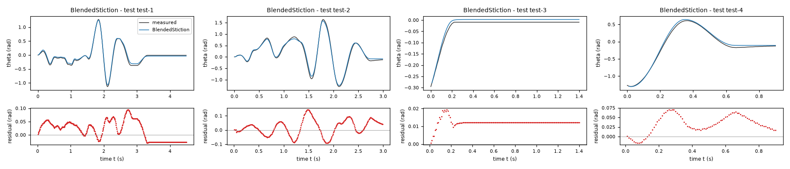
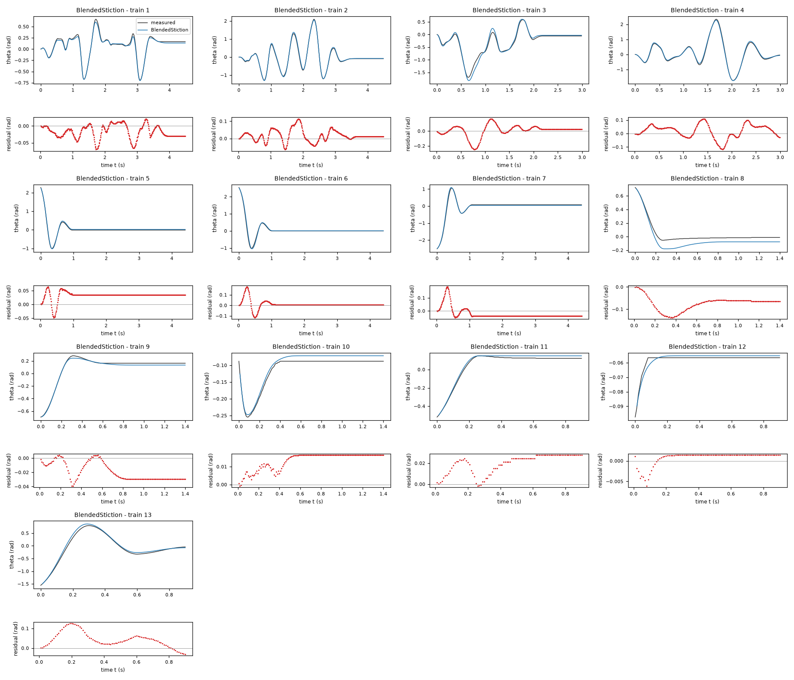
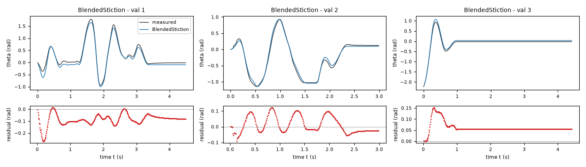
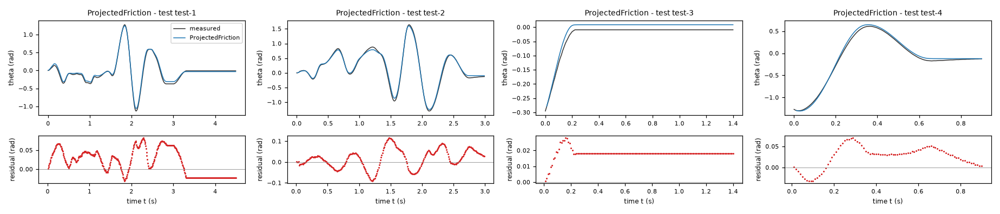
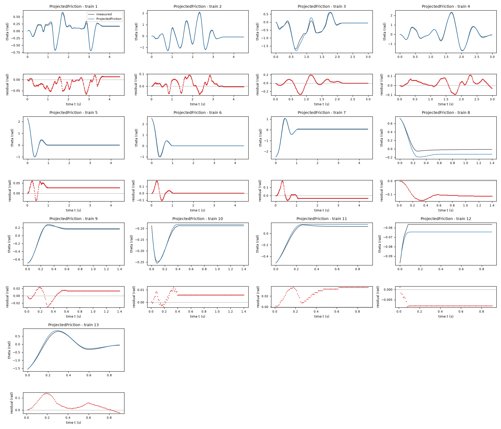
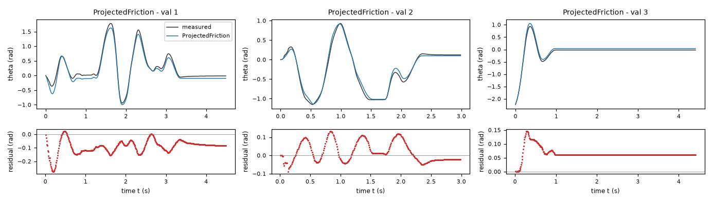
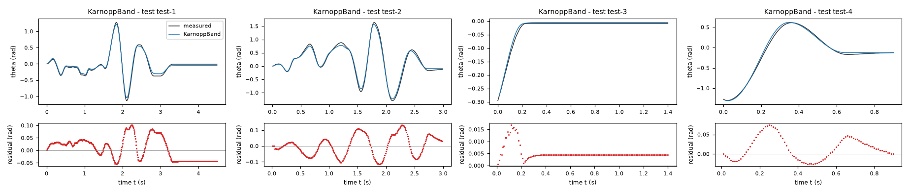
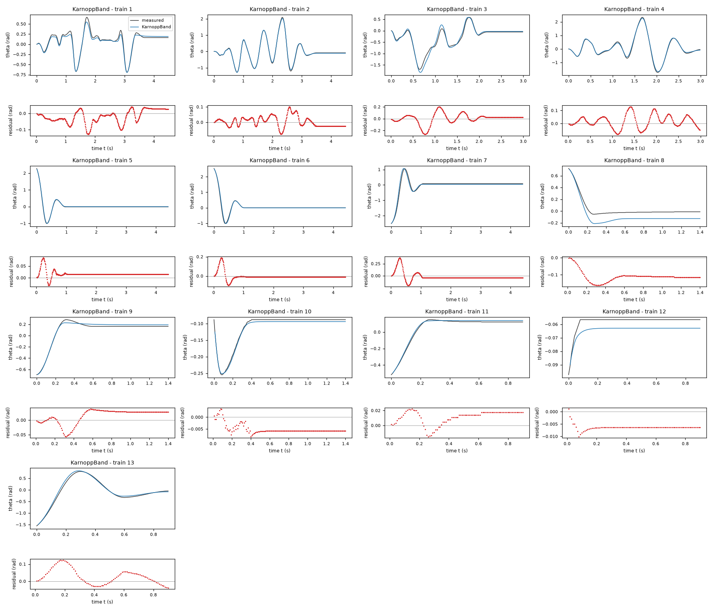
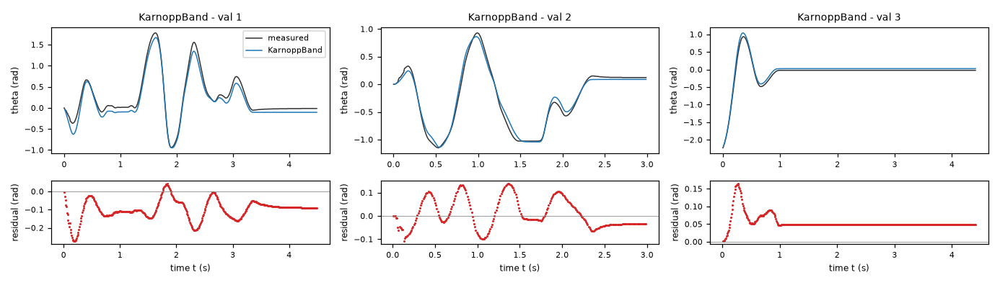

Rotational motion under dry friction, driven by a DC motor (lab rig) – run 5 of 5
Generated: 2026-10-09 14:04 UTC
Finished by the agent after 37 turns, 590 s of execution time and 2.12 USD. 3 models delivered, 3 evaluated.
- test_value in
<run>\transcript.jsonl: 10.524335389525795 - test_value in
<run>\transcript.jsonl: 62.831853071796274 - test_value in
workspace/results/residual_diagnostics.json: 10.524335389525795 - test_value in
workspace/results/residual_diagnostics.json: 62.831853071796274
1 Models
| Model | Fitted parameters | Training error of theta (rad) | Validation error (rad) | Test error of theta (rad) | |
|---|---|---|---|---|---|
| BlendedStiction | 10 | 0.04552 | 0.07699 | 0.04371 | recommended by the agent |
| ProjectedFriction | 8 | 0.04739 | 0.08125 | 0.0397 | lowest test error |
| KarnoppBand | 8 | 0.05573 | 0.08475 | 0.04779 |
The models are listed in the agent's order. Errors: root mean squared error between simulated and measured theta, in rad. Training data: 13 trajectories of 91 to 450 samples (3509 scored samples). Test data, which the agent cannot access: 4 trajectories of 91 to 450 samples (978 scored samples). A simulation error grows with the length of the trajectory, and the training and the test trajectories differ in length, so the two errors are not directly comparable. The agent recommends a model from the training data. The model with the lowest test error is found with the test data, in hindsight, among the 3 models of this run; the agent could not make this choice.
0.04552 rad and reused-validation RMSE 0.07699 rad. The independent audit excluded training tails of validation recordings: blended and Karnopp validation RMSEs were nearly tied (0.08554 rad versus 0.08520 rad), while projection gave 0.08963 rad. Thus the recommendation also rests on avoiding Karnopp discontinuous mode switches, not on claiming a decisive independent validation win. All three satisfy the requirements analytically and in the recorded sampled checks. Test data were not accessed.a = 28.53 rad/(s^2 V) (fitted), b = 1.433 1/s (fitted), c = 111.3 rad/s^2 (fitted), f = 27.77 rad/s^2 (fitted), k = 40.9 1/s (fitted), r = 0.1477 (fitted), h = -0.2044 (fitted), j = 0.03943 (fitted), v = 0.15 rad/s (fitted), e = 0.2678 rad/s (fitted), biasAmp = 3.264 rad/s^2 (tied)theta: 0.04552 rad · validation error: 0.07699 rad · test error: 0.04371 radEquations as written in the model file
dtheta = omega
domega = (a*u-b*omega-c*sin(theta)*(1+j*cos(theta))+biasAmp*cos(theta))-exp(-(omega/v)**2)*Min(Max((a*u-b*omega-c*sin(theta)*(1+j*cos(theta))+biasAmp*cos(theta)),-(f*(1+h*cos(theta)))),(f*(1+h*cos(theta))))-(1-exp(-(omega/v)**2))*(f*(1+h*cos(theta)))*tanh(omega/e)-k*omega*exp(-(omega/v)**2)
Equations with the values substituted
Every parameter is replaced by its value with 4 significant digits.
Parameters and estimation
| Name | Value | Unit | Type | Description |
|---|---|---|---|---|
a | 28.5283 | rad/(s^2 V) | fitted | Effective motor acceleration gain multiplying u; motor torque constant and inertia are not separately identified. |
b | 1.43334 | 1/s | fitted | Viscous acceleration coefficient multiplying omega. |
c | 111.319 | rad/s^2 | fitted | Fundamental sinusoidal restoring acceleration coefficient multiplying . |
f | 27.7727 | rad/s^2 | fitted | Mean sliding-friction acceleration scale. |
k | 40.9015 | 1/s | fitted | Low-speed damping rate; a numerical regularization parameter, not an independently measured material property. |
r | 0.147715 | - | fitted | Dimensionless signed bias fraction; its bounds keep the bias inside the static-friction capacity. |
h | -0.204415 | - | fitted | Dimensionless cosine modulation of friction capacity in ; this is an empirical angle-dependent effect, not proof of a specific pad-loading mechanism. |
j | 0.0394284 | - | fitted | Dimensionless restoring harmonic coefficient in . |
v | 0.150001 | rad/s | fitted | Velocity width of the transition to the static-friction regime. |
e | 0.267832 | rad/s | fitted | Velocity width of the smooth sliding-friction law . |
biasAmp | 3.26385 | rad/s^2 | tied (f*(1-Abs(h))*r) | Bounded bias acceleration computed from the fitted friction scale and signed fraction; the tie protects restoring behavior at rest. |
- Criterion minimized
Sum of squared open-loop angle errors on
theta, excluding the first sample of each trajectory. Simulations use , classical fourth-order Runge-Kutta, the recorded firstthetaandomega, step s as specified in TASK.md, and zero-order-heldu. Every scored sample receives equal weight; there are no later state resets. Angle simulation is the intended use and avoids treating differentiated encoder accelerations as noise-free observations.- Data
Final parameter fit: all rows of
data/train.csv(13 trajectories, 3522 samples) anddata/val.csv(3 trajectories, 1192 samples), giving 4698 after-initial angle residuals. Validation was first used in structural comparisons and was then reused for calibration; final validation errors are not untouched holdout estimates. A later independent-selection audit,independent_selection.py, excludes training trajectories 8 and 11 because they duplicate tails of validation trajectories 1 and 2. Other exact free-response tails are training trajectories 9, 10, 12 and 13, within training trajectories 1, 2, 3 and 4 respectively. They remain separate initial-value simulations because both regimes are requested, but they are not independent experiments.- Method
Bounded nonlinear least squares with the trust-region reflective algorithm,
scipy.optimize.least_squares, using linear loss, two-point finite differences, ,x_scale = "jac", , , , and . All fitted parameters of this candidate were optimized jointly in one final all-data fit. Initial values were rad/(s^2 V); 1/s; rad/s^2; rad/s^2; 1/s; ; ; ; rad/s; rad/s. These rounded trial values came from physically motivated baseline fits and the residual-guided angle-friction comparison; the transition widths were chosen at sub-radian-per-second scales to resolve the low-speed band without an excessively stiff RK4 law. The intermediate derivative initialization used nonnegative linear least squares (scipy.optimize.lsq_linear) on moving training rows with rad/s, on the featuresu, , and ; that initializer requires no start. It was not the final coefficient criterion. The final bounds, in the parameter order above, are recorded infit_combined.pyandresults/combined.json; positive acceleration gains and friction, nonnegative viscous damping, and , , impose the physical safeguards. Optimization is deterministic; no random seed applies. Numba just-in-time compilation accelerates the same RK4 computations.biasAmpis computed after fitting by its tie, not separately estimated.- Script
fit_combined.py
The agent's explanation
Memoryless blended static/Coulomb friction with smooth sliding regularization and a pendulum restoring law. This is an empirical continuous blend, not the dynamic LuGre or Dahl model; no friction state is present. References cited from memory, not verified against a retrieved source: D. Karnopp, Computer Simulation of Stick-Slip Friction in Mechanical Dynamic Systems, Journal of Dynamic Systems, Measurement, and Control (1985); B. Armstrong-Helouvry, P. Dupont and C. Canudas de Wit, A survey of models, analysis tools and compensation methods for the control of machines with friction, Automatica (1994).
The common net applied acceleration is : motor actuation, viscous loss, fundamental plus second-harmonic restoring acceleration, and bounded even-angle bias, respectively. The friction capacity is . The cosine capacity and bias terms encode residual angle/direction effects without assigning an unverified mechanical cause. The weight switches from exact force saturation at rest to sliding friction as speed increases. The friction terms are , and . At rest the saturation exactly cancels sub-threshold torque, while the low-speed damping makes small velocities decay. v and e control two different transition shapes, not measured material constants. For both laws, at and , the restoring factor satisfies , and . Consequently saturation cannot create acceleration away from zero on , proving R2. Dependence on u is a positive gain passed through a nondecreasing dead zone (and, for the blend, a convex mix with the positive sliding gain), proving R3 in the nondecreasing sense. R1 is exact.
The pre-fit plan is plan.md. Motor voltage, viscous damping, sinusoidal restoring torque and Coulomb friction came from physical reasoning, not symbolic regression. Smooth Coulomb, projected stiction, Karnopp dead-band, linear restoring, quadratic damping, cubic motor gain, direction bias, angle-modulated friction, harmonic restoring and Stribeck terms were compared. The linear restoring model simulated poorly; quadratic damping, extra motor nonlinearity and Stribeck excess friction fitted effectively to zero and were omitted. Binned derivative residuals and terminal angle biases motivated the even-angle bias, cosine friction capacity and positive second harmonic. Their forms are low-order empirical guesses constrained to preserve the requirements, not discoveries of individual hardware effects. A velocity-only law crept toward zero and cannot represent exact sticking, so the force-dead-zone branch was blended into it. The blend was retained for continuous low-speed dynamics and improved small-release simulation. Independent-selection audit RMSE on the three validation trajectories, after excluding the two duplicated training tails, was 0.08554042640287333 rad. Final all-data refit RMSE was 0.04552107803533275 rad on training and 0.07699007825690443 rad on validation. The latter is not a holdout score.
Only effective acceleration coefficients are identified: inertia, motor torque constant, gravity torque and physical friction torques cannot be separated. Encoder quantization and differentiation noise limit derivative interpretation. The fitted laws omit electrical and friction-memory states. Trajectories contain repeated experimental tails, and the final fit reuses validation; quoted refit errors are calibration diagnostics, not test predictions. Static endpoints differ between recordings and some terminal errors remain, especially the positive-angle small free release and validation driven trajectory 1. Applicability is limited to this rig and the observed voltages (approximately V on the supplied files), not established over the entire allowed input domain or beyond the observed velocities. No uncertainty interval or extrapolation guarantee is claimed. The fitted blend width is close to its rad/s lower bound (chosen near the observed encoder velocity quantum); that width is weakly resolved. Its slope is regularized but no ideal finite-time stopping claim is made.
Physical requirements
| Requirement | Statement | Outcome | Detail |
|---|---|---|---|
| R1 | proof | the quantity is identically zero on the domain | |
| R2 | inconclusive | no violation found at the 10000 sampled points (largest value of Q -0.0, tolerance 0.0); this is not a proof | |
| R3 | inconclusive | no violation found at the 10000 sampled points (largest value of Q -0.12897860127838, tolerance 0.0); this is not a proof |
Plots of simulated and measured theta, and errors per trajectory



| Data | Trajectory | Scored samples | RMSE | NRMSE | R² | Failure |
|---|---|---|---|---|---|---|
| training data | 1 | 449 of 449 | 0.02625 | 0.1023 | 0.9895 | none |
| training data | 2 | 449 of 449 | 0.03769 | 0.05655 | 0.9968 | none |
| training data | 3 | 299 of 299 | 0.07929 | 0.1679 | 0.9718 | none |
| training data | 4 | 299 of 299 | 0.05327 | 0.065 | 0.9958 | none |
| training data | 5 | 441 of 441 | 0.03577 | 0.09344 | 0.9913 | none |
| training data | 6 | 441 of 441 | 0.03899 | 0.08543 | 0.9927 | none |
| training data | 7 | 441 of 441 | 0.04806 | 0.09263 | 0.9914 | none |
| training data | 8 | 140 of 140 | 0.07981 | 0.486 | 0.7638 | none |
| training data | 9 | 140 of 140 | 0.02309 | 0.1056 | 0.9888 | none |
| training data | 10 | 140 of 140 | 0.01412 | 0.2873 | 0.9175 | none |
| training data | 11 | 90 of 90 | 0.02153 | 0.1308 | 0.9829 | none |
| training data | 12 | 90 of 90 | 0.001812 | 0.3551 | 0.8739 | none |
| training data | 13 | 90 of 90 | 0.05834 | 0.1074 | 0.9885 | none |
| validation data | 1 | 449 of 449 | 0.09764 | 0.1786 | 0.9681 | none |
| validation data | 2 | 299 of 299 | 0.05355 | 0.09577 | 0.9908 | none |
| validation data | 3 | 441 of 441 | 0.06581 | 0.1751 | 0.9693 | none |
| test data | test-1 | 449 of 449 | 0.03977 | 0.1053 | 0.9889 | none |
| test data | test-2 | 299 of 299 | 0.05763 | 0.09324 | 0.9913 | none |
| test data | test-3 | 140 of 140 | 0.01235 | 0.2333 | 0.9456 | none |
| test data | test-4 | 90 of 90 | 0.04002 | 0.07578 | 0.9943 | none |
RMSE of theta in rad; NRMSE = RMSE / σ and R² = 1 − SSE / Σ(y[k] − μ)², with μ and σ the mean and the population standard deviation of the measured output on the scored samples.
a = 29.16 rad/(s^2 V) (fitted), b = 1.597 1/s (fitted), c = 114 rad/s^2 (fitted), f = 28.13 rad/s^2 (fitted), k = 94.51 1/s (fitted), r = 0.1525 (fitted), h = -0.2279 (fitted), j = 0.05354 (fitted), biasAmp = 3.313 rad/s^2 (tied)theta: 0.04739 rad · validation error: 0.08125 rad · test error: 0.0397 radEquations as written in the model file
dtheta = omega
domega = (a*u-b*omega-c*sin(theta)*(1+j*cos(theta))+biasAmp*cos(theta))-Min(Max((a*u-b*omega-c*sin(theta)*(1+j*cos(theta))+biasAmp*cos(theta))+k*omega,-(f*(1+h*cos(theta)))),(f*(1+h*cos(theta))))
Equations with the values substituted
Every parameter is replaced by its value with 4 significant digits.
Parameters and estimation
| Name | Value | Unit | Type | Description |
|---|---|---|---|---|
a | 29.1629 | rad/(s^2 V) | fitted | Effective motor acceleration gain multiplying u; motor torque constant and inertia are not separately identified. |
b | 1.59724 | 1/s | fitted | Viscous acceleration coefficient multiplying omega. |
c | 114.002 | rad/s^2 | fitted | Fundamental sinusoidal restoring acceleration coefficient multiplying . |
f | 28.1341 | rad/s^2 | fitted | Mean sliding-friction acceleration scale. |
k | 94.5114 | 1/s | fitted | Low-speed damping rate; a numerical regularization parameter, not an independently measured material property. |
r | 0.15251 | - | fitted | Dimensionless signed bias fraction; its bounds keep the bias inside the static-friction capacity. |
h | -0.227889 | - | fitted | Dimensionless cosine modulation of friction capacity in ; this is an empirical angle-dependent effect, not proof of a specific pad-loading mechanism. |
j | 0.0535404 | - | fitted | Dimensionless restoring harmonic coefficient in . |
biasAmp | 3.31291 | rad/s^2 | tied (f*(1-Abs(h))*r) | Bounded bias acceleration computed from the fitted friction scale and signed fraction; the tie protects restoring behavior at rest. |
- Criterion minimized
Sum of squared open-loop angle errors on
theta, excluding the first sample of each trajectory. Simulations use , classical fourth-order Runge-Kutta, the recorded firstthetaandomega, step s as specified in TASK.md, and zero-order-heldu. Every scored sample receives equal weight; there are no later state resets. Angle simulation is the intended use and avoids treating differentiated encoder accelerations as noise-free observations.- Data
Final parameter fit: all rows of
data/train.csv(13 trajectories, 3522 samples) anddata/val.csv(3 trajectories, 1192 samples), giving 4698 after-initial angle residuals. Validation was first used in structural comparisons and was then reused for calibration; final validation errors are not untouched holdout estimates. A later independent-selection audit,independent_selection.py, excludes training trajectories 8 and 11 because they duplicate tails of validation trajectories 1 and 2. Other exact free-response tails are training trajectories 9, 10, 12 and 13, within training trajectories 1, 2, 3 and 4 respectively. They remain separate initial-value simulations because both regimes are requested, but they are not independent experiments.- Method
Bounded nonlinear least squares with the trust-region reflective algorithm,
scipy.optimize.least_squares, using linear loss, two-point finite differences, ,x_scale = "jac", , , , and . All fitted parameters of this candidate were optimized jointly in one final all-data fit. Initial values were rad/(s^2 V); 1/s; rad/s^2; rad/s^2; 1/s; ; ; . These rounded trial values came from physically motivated baseline fits and the residual-guided angle-friction comparison; the transition widths were chosen at sub-radian-per-second scales to resolve the low-speed band without an excessively stiff RK4 law. The intermediate derivative initialization used nonnegative linear least squares (scipy.optimize.lsq_linear) on moving training rows with rad/s, on the featuresu, , and ; that initializer requires no start. It was not the final coefficient criterion. The final bounds, in the parameter order above, are recorded infit_combined.pyandresults/combined.json; positive acceleration gains and friction, nonnegative viscous damping, and , , impose the physical safeguards. Optimization is deterministic; no random seed applies. Numba just-in-time compilation accelerates the same RK4 computations.biasAmpis computed after fitting by its tie, not separately estimated.- Script
fit_combined.py
The agent's explanation
Continuous saturated-force (projected) approximation to static/Coulomb friction, coupled to a nonlinear pendulum. It is a low-speed projection regularization, rather than a discontinuous sign-only Coulomb law. References cited from memory, not verified against a retrieved source: D. Karnopp, Computer Simulation of Stick-Slip Friction in Mechanical Dynamic Systems, Journal of Dynamic Systems, Measurement, and Control (1985); B. Armstrong-Helouvry, P. Dupont and C. Canudas de Wit, A survey of models, analysis tools and compensation methods for the control of machines with friction, Automatica (1994).
The common net applied acceleration is : motor actuation, viscous loss, fundamental plus second-harmonic restoring acceleration, and bounded even-angle bias, respectively. The friction capacity is . The cosine capacity and bias terms encode residual angle/direction effects without assigning an unverified mechanical cause. The subtracted friction is . Outside saturation it is bounded sliding friction; inside saturation . Thus a continuum of exact rest states exists while low-speed motion decays without sign chatter. For both laws, at and , the restoring factor satisfies , and . Consequently saturation cannot create acceleration away from zero on , proving R2. Dependence on u is a positive gain passed through a nondecreasing dead zone (and, for the blend, a convex mix with the positive sliding gain), proving R3 in the nondecreasing sense. R1 is exact.
The pre-fit plan is plan.md. Motor voltage, viscous damping, sinusoidal restoring torque and Coulomb friction came from physical reasoning, not symbolic regression. Smooth Coulomb, projected stiction, Karnopp dead-band, linear restoring, quadratic damping, cubic motor gain, direction bias, angle-modulated friction, harmonic restoring and Stribeck terms were compared. The linear restoring model simulated poorly; quadratic damping, extra motor nonlinearity and Stribeck excess friction fitted effectively to zero and were omitted. Binned derivative residuals and terminal angle biases motivated the even-angle bias, cosine friction capacity and positive second harmonic. Their forms are low-order empirical guesses constrained to preserve the requirements, not discoveries of individual hardware effects. The projected force saturation replaces an ideal set-valued static friction law with a single-valued expression usable by the required integrator; its advantage is a simple exact stick band. Independent-selection audit RMSE on the three validation trajectories, after excluding the two duplicated training tails, was 0.08963222493299658 rad. Final all-data refit RMSE was 0.047393530590679626 rad on training and 0.0812517225481444 rad on validation. The latter is not a holdout score.
Only effective acceleration coefficients are identified: inertia, motor torque constant, gravity torque and physical friction torques cannot be separated. Encoder quantization and differentiation noise limit derivative interpretation. The fitted laws omit electrical and friction-memory states. Trajectories contain repeated experimental tails, and the final fit reuses validation; quoted refit errors are calibration diagnostics, not test predictions. Static endpoints differ between recordings and some terminal errors remain, especially the positive-angle small free release and validation driven trajectory 1. Applicability is limited to this rig and the observed voltages (approximately V on the supplied files), not established over the entire allowed input domain or beyond the observed velocities. No uncertainty interval or extrapolation guarantee is claimed. The projection law is continuous but has derivative corners at saturation boundaries. Its fitted low-speed rate is specific to the required sampling/integration scheme.
Physical requirements
| Requirement | Statement | Outcome | Detail |
|---|---|---|---|
| R1 | proof | the quantity is identically zero on the domain | |
| R2 | inconclusive | no violation found at the 10000 sampled points (largest value of Q -0.0, tolerance 0.0); this is not a proof | |
| R3 | inconclusive | no violation found at the 10000 sampled points (largest value of Q 0.0, tolerance 0.0); this is not a proof |
Plots of simulated and measured theta, and errors per trajectory



| Data | Trajectory | Scored samples | RMSE | NRMSE | R² | Failure |
|---|---|---|---|---|---|---|
| training data | 1 | 449 of 449 | 0.02464 | 0.09607 | 0.9908 | none |
| training data | 2 | 449 of 449 | 0.03655 | 0.05484 | 0.997 | none |
| training data | 3 | 299 of 299 | 0.08847 | 0.1873 | 0.9649 | none |
| training data | 4 | 299 of 299 | 0.0473 | 0.05771 | 0.9967 | none |
| training data | 5 | 441 of 441 | 0.03051 | 0.07971 | 0.9936 | none |
| training data | 6 | 441 of 441 | 0.03828 | 0.08386 | 0.993 | none |
| training data | 7 | 441 of 441 | 0.04401 | 0.08482 | 0.9928 | none |
| training data | 8 | 140 of 140 | 0.109 | 0.6639 | 0.5592 | none |
| training data | 9 | 140 of 140 | 0.01406 | 0.06428 | 0.9959 | none |
| training data | 10 | 140 of 140 | 0.005917 | 0.1203 | 0.9855 | none |
| training data | 11 | 90 of 90 | 0.02983 | 0.1813 | 0.9671 | none |
| training data | 12 | 90 of 90 | 0.007711 | 1.511 | -1.284 | none |
| training data | 13 | 90 of 90 | 0.05843 | 0.1076 | 0.9884 | none |
| validation data | 1 | 449 of 449 | 0.1037 | 0.1897 | 0.964 | none |
| validation data | 2 | 299 of 299 | 0.05747 | 0.1028 | 0.9894 | none |
| validation data | 3 | 441 of 441 | 0.06789 | 0.1806 | 0.9674 | none |
| test data | test-1 | 449 of 449 | 0.03855 | 0.1021 | 0.9896 | none |
| test data | test-2 | 299 of 299 | 0.04865 | 0.07872 | 0.9938 | none |
| test data | test-3 | 140 of 140 | 0.01828 | 0.3453 | 0.8808 | none |
| test data | test-4 | 90 of 90 | 0.03643 | 0.069 | 0.9952 | none |
RMSE of theta in rad; NRMSE = RMSE / σ and R² = 1 − SSE / Σ(y[k] − μ)², with μ and σ the mean and the population standard deviation of the measured output on the scored samples.
a = 28.32 rad/(s^2 V) (fitted), b = 1.795 1/s (fitted), c = 108.2 rad/s^2 (fitted), f = 20.94 rad/s^2 (fitted), v = 0.16 rad/s (fitted), k = 24.88 1/s (fitted), r = 0.07293 (fitted), j = 0.09806 (fitted), biasAmp = 1.527 rad/s^2 (tied)theta: 0.05573 rad · validation error: 0.08475 rad · test error: 0.04779 radEquations as written in the model file
dtheta = omega
domega = Piecewise(((a*u-b*omega-c*sin(theta)*(1+j*cos(theta))+biasAmp)-f*sign(omega), (Abs(omega) > v)), (Max((a*u-b*omega-c*sin(theta)*(1+j*cos(theta))+biasAmp)-f,0)+Min((a*u-b*omega-c*sin(theta)*(1+j*cos(theta))+biasAmp)+f,0)-k*omega, True))
Equations with the values substituted
Every parameter is replaced by its value with 4 significant digits.
Parameters and estimation
| Name | Value | Unit | Type | Description |
|---|---|---|---|---|
a | 28.3201 | rad/(s^2 V) | fitted | Effective motor acceleration gain multiplying u; motor torque constant and inertia are not separately identified. |
b | 1.79527 | 1/s | fitted | Viscous acceleration coefficient multiplying omega. |
c | 108.244 | rad/s^2 | fitted | Fundamental sinusoidal restoring acceleration coefficient multiplying . |
f | 20.9393 | rad/s^2 | fitted | Mean sliding-friction acceleration scale. |
v | 0.16 | rad/s | fitted | Velocity band selected by finite-grid validation comparison; later held essentially fixed during final local refinement. |
k | 24.8821 | 1/s | fitted | Low-speed damping rate; a numerical regularization parameter, not an independently measured material property. |
r | 0.0729347 | - | fitted | Dimensionless signed bias fraction; its bounds keep the bias inside the static-friction capacity. |
j | 0.0980616 | - | fitted | Dimensionless restoring harmonic coefficient in . |
biasAmp | 1.5272 | rad/s^2 | tied (f*r) | Bounded bias acceleration computed from the fitted friction scale and signed fraction; the tie protects restoring behavior at rest. |
- Criterion minimized
Sum of squared open-loop angle errors on
theta, excluding the first sample of each trajectory. Simulations use , classical fourth-order Runge-Kutta, the recorded firstthetaandomega, step s as specified in TASK.md, and zero-order-heldu. Every scored sample receives equal weight; there are no later state resets. Angle simulation is the intended use and avoids treating differentiated encoder accelerations as noise-free observations.- Data
Final parameter fit: all rows of
data/train.csv(13 trajectories, 3522 samples) anddata/val.csv(3 trajectories, 1192 samples), giving 4698 after-initial angle residuals. Validation was first used in structural comparisons and was then reused for calibration; final validation errors are not untouched holdout estimates. A later independent-selection audit,independent_selection.py, excludes training trajectories 8 and 11 because they duplicate tails of validation trajectories 1 and 2. Other exact free-response tails are training trajectories 9, 10, 12 and 13, within training trajectories 1, 2, 3 and 4 respectively. They remain separate initial-value simulations because both regimes are requested, but they are not independent experiments.- Method
Karnopp band selection used the finite grid , , , , and rad/s, followed by bounded nonlinear least squares for the other fitted parameters at each band. The grid avoids an uninformative local derivative of the discontinuous band edge. Each trial started at rad/(s^2 V); 1/s; rad/s^2; rad/s^2; rad/s; 1/s; ; , except for the trial band value. These trial values were rounded from the physical baseline/harmonic comparisons. The band with smallest validation angle RMSE was rad/s; the later duplicate-free audit selected the same value. Then all remaining parameters were jointly refitted on all supplied training and validation trajectories, starting at rad/(s^2 V); 1/s; rad/s^2; rad/s^2; rad/s; 1/s; ; . All these fits used trust-region reflective nonlinear least squares,
scipy.optimize.least_squares, linear loss, two-point finite differences, ,x_scale = "jac", , , , and . The band was kept within1e-10rad/s of the grid value during the local fits; it is a grid-fitted parameter, not a physical constant. Bounds require positive motor/restoring/friction coefficients, nonnegative viscous damping and , ; exact bounds are infit_karnopp.py. This nonsmooth objective has local minima; no global optimality is claimed. No random numbers or seed are used.biasAmpis computed by its tie.- Script
fit_karnopp.py
The agent's explanation
Karnopp velocity-band approximation to static and Coulomb friction, with positive sinusoidal/harmonic restoring torque and constant bounded bias. References cited from memory, not verified against a retrieved source: D. Karnopp, Computer Simulation of Stick-Slip Friction in Mechanical Dynamic Systems, Journal of Dynamic Systems, Measurement, and Control (1985); B. Armstrong-Helouvry, P. Dupont and C. Canudas de Wit, A survey of models, analysis tools and compensation methods for the control of machines with friction, Automatica (1994).
Net applied acceleration is . For , opposes sliding. Inside the band, is the force dead zone, and damps low-speed motion. This does not reset either state. Because and , at rest positive angles can only have zero or negative acceleration and negative angles zero or positive acceleration, proving R2 on the stated domain. For fixed states both branches are nondecreasing in u, proving R3. proves R1.
The Karnopp branch was in the pre-fit physical plan, plan.md, as a direct approximation to dry-friction sticking. Compared with the projected and blended families, this model keeps a velocity-defined mode switch instead of force-plus-velocity saturation or a smooth transition. Residual direction bias justified the bounded constant bias, and angle-dependent errors justified the small positive-factor harmonic restoring correction; these were guessed low-order residual extensions, not unrestricted symbolic search. A band grid was used because local optimization cannot reliably choose the velocity switch. Independent-selection validation RMSE after removing training tails duplicated from validation was 0.08520078800870168 rad. Final all-data refit RMSE was 0.05572961859764368 rad on training and 0.08475032527475611 rad on validation, which is reused calibration data.
Only effective acceleration coefficients are identified: inertia, motor torque constant, gravity torque and physical friction torques cannot be separated. Encoder quantization and differentiation noise limit derivative interpretation. The fitted laws omit electrical and friction-memory states. Trajectories contain repeated experimental tails, and the final fit reuses validation; quoted refit errors are calibration diagnostics, not test predictions. Static endpoints differ between recordings and some terminal errors remain, especially the positive-angle small free release and validation driven trajectory 1. Applicability is limited to this rig and the observed voltages (approximately V on the supplied files), not established over the entire allowed input domain or beyond the observed velocities. No uncertainty interval or extrapolation guarantee is claimed. Switching at is discontinuous and can cause RK4 mode-switch artifacts; the fitted coefficients and selected band are local, integrator-specific approximations. This candidate is retained as a materially different sticking construction, not because its final calibration error is the lowest.
Physical requirements
| Requirement | Statement | Outcome | Detail |
|---|---|---|---|
| R1 | proof | the quantity is identically zero on the domain | |
| R2 | proof | verified enclosures on 3 sub-box(es) covering the domain do not exceed the tolerance 0.0 | |
| R3 | inconclusive | no violation found at the 10000 sampled points (largest value of Q -0.0, tolerance 0.0); this is not a proof |
Plots of simulated and measured theta, and errors per trajectory



| Data | Trajectory | Scored samples | RMSE | NRMSE | R² | Failure |
|---|---|---|---|---|---|---|
| training data | 1 | 449 of 449 | 0.04452 | 0.1736 | 0.9699 | none |
| training data | 2 | 449 of 449 | 0.03399 | 0.05101 | 0.9974 | none |
| training data | 3 | 299 of 299 | 0.08657 | 0.1833 | 0.9664 | none |
| training data | 4 | 299 of 299 | 0.05141 | 0.06273 | 0.9961 | none |
| training data | 5 | 441 of 441 | 0.02133 | 0.05572 | 0.9969 | none |
| training data | 6 | 441 of 441 | 0.03902 | 0.08548 | 0.9927 | none |
| training data | 7 | 441 of 441 | 0.0872 | 0.1681 | 0.9718 | none |
| training data | 8 | 140 of 140 | 0.1147 | 0.6986 | 0.512 | none |
| training data | 9 | 140 of 140 | 0.02823 | 0.1291 | 0.9833 | none |
| training data | 10 | 140 of 140 | 0.005475 | 0.1113 | 0.9876 | none |
| training data | 11 | 90 of 90 | 0.01431 | 0.08695 | 0.9924 | none |
| training data | 12 | 90 of 90 | 0.006442 | 1.263 | -0.594 | none |
| training data | 13 | 90 of 90 | 0.05301 | 0.09757 | 0.9905 | none |
| validation data | 1 | 449 of 449 | 0.1133 | 0.2072 | 0.9571 | none |
| validation data | 2 | 299 of 299 | 0.06447 | 0.1153 | 0.9867 | none |
| validation data | 3 | 441 of 441 | 0.059 | 0.157 | 0.9754 | none |
| test data | test-1 | 449 of 449 | 0.04502 | 0.1192 | 0.9858 | none |
| test data | test-2 | 299 of 299 | 0.06401 | 0.1036 | 0.9893 | none |
| test data | test-3 | 140 of 140 | 0.005907 | 0.1116 | 0.9875 | none |
| test data | test-4 | 90 of 90 | 0.03227 | 0.06112 | 0.9963 | none |
RMSE of theta in rad; NRMSE = RMSE / σ and R² = 1 − SSE / Σ(y[k] − μ)², with μ and σ the mean and the population standard deviation of the measured output on the scored samples.
2 Course of the run
The system prompt, TASK.md and FORMAT.md that the agent received are shown on the page of the experiment.
0:00Harness: opening message to the agent
10:03Read TASK.md0.01
5,474 input and 19 output tokens; 0.011 USD for this turn.
TASK.md
output as sent to the agent (6,212 characters, 44 lines)
[TASK.md: 6185 characters] # Task: Rotational motion under dry friction, driven by a DC motor (lab rig) ## 1 System and intended use Data from a real lab rig: a rotational motion system with adjustable dry friction, driven by a voltage-controlled DC motor. A leaf spring presses a felt pad against a rotating disc. The dry-friction level is approximately constant across all recordings; bearing friction (viscous and dry) is present too. Zero angle is the hanging equilibrium. Each row is one sample of the angle theta (rad), the angular velocity omega (rad/s), the motor voltage u (V, an exogenous input) and the angular acceleration domega (rad/s^2), sampled with period T_s = 0.01 s (100 Hz). The state-space model consists of an unknown (sought) closed-form nonlinear expression: domega, the time derivative of omega, as functions of theta, omega and u; and the kinematic identity dtheta = omega as a formal requirement (R1). The training and validation files each contain several separate trajectories of two kinds, marked by the column `trajectory`; a file is not one contiguous trajectory. Driven trajectories start at rest at theta = 0 with a random binary voltage signal applied throughout. Free-response trajectories start from an initial angle with u = 0 throughout; most of their samples are at rest inside the stick band. One model must cover both regimes. The signals come from a digital encoder and numerical differentiation. Simulation of the angle. The model is integrated from the first (theta, omega) sample of a held-out trajectory, with the recorded voltage u applied and no further corrections, and the simulated angle is compared with the measured one. The held-out trajectories are of both kinds, driven and free response. The model should give stable, accurate long-horizon simulation, including realistic sticking at rest. ## 2 Data `data/train.csv` holds 3522 samples of training data: 13 trajectories of 450, 450, 300, 300, 442, 442, 442, 141, 141, 141, 91, 91, 91 consecutive samples; the column `trajectory` holds the trajectory number. `data/val.csv` holds 1192 samples of validation data: 3 trajectories of 450, 300, 442 consecutive samples; the column `trajectory` holds the trajectory number. Whether and how you use the validation data is your decision. Row k+1 of a trajectory is the sample that follows row k; different trajectories are separate experiments. The sampling period is T_s = 0.01 s. | Column | Role | Unit | Training range | Description | |---|---|---|---|---| | `theta` | state, scored output | rad | -3.1416 to 3.1416 | angle, state and measured output | | `omega` | state | rad/s | not declared | angular velocity | | `u` | input | V | -10 to 10 | motor voltage, exogenous input | | `domega` | sampled time derivative of `omega` | rad/s^2 | not declared | angular acceleration, the time derivative of omega; a possible fitting target | ## 3 What you deliver A candidate is a continuous-time model of 2 closed-form expressions, `dtheta` and `domega`: the time derivatives of the states `theta` and `omega` as functions of `theta`, `omega` and `u`. The column `domega` is a possible fitting target for the derivative of `omega`; it is not an argument of the expressions. `FORMAT.md` states how an expression is written and what it may contain. Write one file per candidate, `models/<label>.json`; `FORMAT.md` describes the file and gives an example. Write also `models/pool.json`, which lists the labels of your candidates in the order in which they are to be evaluated. You can recommend one candidate that you consider the best-performing. `models/pool.json` then names that candidate and gives your reason. Run `python check_submission.py` to check your files: it prints every error with its location, so that you can correct it. At most 10 candidates are evaluated, in the order of `models/pool.json`. Consider various identification approaches, for example physically motivated structures, symbolic-regression search or sparse regression; before fitting, list the approaches and the model families you will try. Build the pool from structurally different model families, not from variations of one form. Examine the residuals of your best candidates and try structures that can represent what they show. Include only candidates you would defend as a model of the system. ## 4 Evaluation The harness, the software that runs this task, evaluates every candidate on test data that you cannot access. For each test trajectory it starts from the first logged state and integrates the expressions with the classical fourth-order Runge–Kutta method, one step per sampling period, with the logged inputs held constant between samples; a simulated state is never replaced by a later measurement. The score is the root mean squared error (RMSE) between simulated and logged `theta`, in rad, over all test samples after the first of each trajectory. An evaluation fails when a value is not finite, when `theta` leaves [-1000, 1000] rad or `omega` leaves [-1000, 1000] rad/s, or when it takes longer than 60 s. ## 5 Physical requirements A formal requirement is a condition on one expression over a domain of its arguments. The tolerance is the admissible violation margin. The harness checks each requirement symbolically or at sampled points; a check at sampled points that finds no violation is not a proof. A demonstrated violation excludes the candidate from the ranking, unless stated otherwise below. - **R1**: `dtheta` = `omega`; domain: theta ∈ [-3.1416, 3.1416] rad, omega ∈ [-23, 23] rad/s, u ∈ [-10, 10] V; tolerance 0 rad/s. - **R2**: `domega*theta <= 0`; domain: theta ∈ [-π, π] rad, omega = 0 rad/s, u = 0 V; tolerance 0 rad^2/s^2. - **R3**: `domega` is increasing in `u`; domain: theta ∈ [-3.1416, 3.1416] rad, omega ∈ [-23, 23] rad/s, u ∈ [-10, 10] V; tolerance 0 rad/(s^2 V). ## 6 Limits and completion One round: 60 turns, 3600 s of execution time, 10 USD; a turn is one response of yours. When the files pass the check, send the exact message DONE. If the harness's check of the files then fails, you receive its report and may correct the files once. If a limit ends the round earlier, the complete candidate files are evaluated.
20:05Read FORMAT.md0.03
6,979 input and 19 output tokens; 0.014 USD for this turn.
FORMAT.md
output as sent to the agent (8,159 characters, 128 lines)
[FORMAT.md: 8130 characters]
# Model file format
This file is the same for every task. `TASK.md` names the expression keys, the variables and the permitted functions of your task.
## Candidate file `models/<label>.json`
Write one JSON file per candidate. The label is the file name: a letter, then up to 31 letters, digits, `_` or `-`. The file has these fields and no others:
- `expressions`: one expression text per expression key named in `TASK.md`.
- `parameters`: one row per parameter. A parameter is a constant of the expressions that you name yourself, for example `a1`. Its row has
- `name`: the name used in the expressions: a letter, then letters, digits or `_`; it differs from every column, expression key, constant and function name;
- `value`: the numerical value;
- `unit`: the unit; `-` for a dimensionless quantity;
- `type`: `fitted` (estimated from data), `fixed` (chosen or known, not estimated) or `tied` (computed from other parameters by `equation`);
- `description`: what the parameter represents; for a fixed value, where the value comes from and why it was chosen; for a value taken over from another candidate or an earlier fit, from which one;
- `equation`: for a tied parameter only: its defining equation over other parameters, given constants and numbers.
- `estimation`: how the values of the fitted parameters of this candidate were obtained and why in this way; for every fitted parameter it must be clear how its value was found. Write the record for this candidate model, not for the run as a whole: its own criterion, data, method and starting values, with the reasons that apply to this candidate. The record has
- `criterion`: what was minimized, on which variable, and why this criterion;
- `data`: the files, trajectories or rows used, and the reason when some were left out;
- `method`: how the values were estimated: the estimation method by its established name and the software function, and why this method and not another; the starting values as numbers, or the statement that the method needs none, and why these starting values; whether all fitted parameters were estimated together in one step and, if not, which parameters were estimated in which step, with which criterion, and why; the seeds where they apply;
- `script`: the file in the working directory that reproduces the values.
- `discussion`: four texts, in this order:
- `family`: the model family by its established name, with a reference where you know one;
- `interpretation`: what each term represents in the system; describe a term without a known physical meaning by its mathematical effect;
- `origin`: how you arrived at the structure of this expression, as distinct from its parameter values, which `estimation` covers: say which of its terms, variables and operators came from physical reasoning, which from a search and which from a guess, what you tried before, and what made you change it;
- `limitations`: what the data do not determine and where the model is not expected to hold.
- `answers`: only when `TASK.md` asks questions about the candidates: one text per question identifier.
- `predecessor`: only in a later round of an interactive session, and optional: the label of the candidate of the previous pool that this candidate revises.
## Expressions
An expression is a text in Python syntax. It may contain:
- the variables that `TASK.md` names as the arguments of the expression;
- your parameters, each with a row in `parameters`;
- the constants `pi` and `E`, the given constants that `TASK.md` lists, and numbers;
- these operators and functions, unless `TASK.md` states another list: `+` `-` `*` `/` `**` `sin` `cos` `tan` `asin` `acos` `atan` `atan2` `sinh` `cosh` `tanh` `exp` `log` `sqrt` `Abs` `sign` `Min` `Max` `Piecewise`.
`**` is the power (not `^`), and `log` is the natural logarithm. `Piecewise` takes pairs `(value, condition)` and ends with a pair `(value, True)`, for example `Piecewise((a1*q, (q > 0) & (q < 1)), (0, True))`. A condition is a comparison `<`, `<=`, `>`, `>=`, `Eq(a, b)` or `Ne(a, b)`, each in parentheses, combined with `&`, `|` and `~`.
A number that fixes the form of the expression, such as 2 in `q**2`, may be written directly. A value obtained by estimation is a parameter with a row in `parameters`, never a number written into the expression. Every parameter row must be used in an expression or in a tie equation.
## Pool file `models/pool.json`
- `order`: the candidate labels in your order;
- `recommended`: the label of the candidate you recommend, or `null` when you recommend none;
- `reason`: why you recommend this candidate, or why you recommend none.
Every file `models/<label>.json` must be listed in `order`.
## Example
An invented task with one input `q` and one output `z`, whose expression key is `z`. The example shows the format only: its model is not a proposal, and its discussion texts say what your texts must contain.
`models/M01.json`:
```json
{
"expressions": {
"z": "a1*q + b1*q**2/n0"
},
"parameters": [
{
"name": "a1",
"value": 0.5,
"unit": "-",
"type": "fitted",
"description": "coefficient of `q`"
},
{
"name": "n0",
"value": 2.0,
"unit": "-",
"type": "fixed",
"description": "normalisation of the quadratic term; chosen as the largest value of `q` in the training data, so that `b1` has the scale of `a1`"
},
{
"name": "b1",
"value": 1.0,
"unit": "-",
"type": "tied",
"equation": "2*a1",
"description": "coefficient of `q**2/n0`, tied to `a1` by the assumption stated in the discussion"
}
],
"estimation": {
"criterion": "sum of squared differences between the expression `z` and the column `z`, because the expression gives `z` directly and no row is known to be more accurate than another",
"data": "data/train.csv, all rows",
"method": "The value of `a1` was estimated by ordinary least squares with numpy.linalg.lstsq. With `b1 = 2*a1` the expression is linear in the one fitted parameter `a1`, so the least-squares solution is obtained directly and an iterative method is not needed; for the same reason the method needs no starting values. `a1` is the only fitted parameter and was estimated in one step. The method uses no random numbers, so that no seed applies.",
"script": "fit_M01.py"
},
"discussion": {
"family": "State the model family by its established name.",
"interpretation": "State what each term represents.",
"origin": "State how you arrived at this expression.",
"limitations": "State what the data do not determine and where the model is not expected to hold."
}
}
```
`models/pool.json`:
```json
{
"order": [
"M01"
],
"recommended": "M01",
"reason": "State why you recommend this candidate, or why you recommend none."
}
```
## Checking
`python check_submission.py` checks every file against these rules and evaluates each expression on the training data. It names each error with its rule. Correct the errors and run it again.
## Writing
- Define every symbol at first use.
- Give every number with its unit and the data it was computed on.
- Name methods by their established names.
- Cite a reference for a model family or a method where one applies. Cite only references you are certain exist, and say when you cite from memory without having checked the source.
- Say what is estimated, what is assumed and what is unknown.
- Give a brief reason for every choice you made: a structure, a criterion, a method, a starting value, a fixed value, a term you removed.
- Write every expression inside a text between backticks, in the syntax of the expressions, for example `a1*q**2`; write it out, do not describe it in words. This holds also for a single parameter, column or expression name, such as `a1`, for a value given to one, such as `a1 = 0.5`, and for a range, such as `0 <= a1 <= 2`. A unit follows outside the backticks; a dimensionless value has no unit and no hyphen after it.
- Describe a term without a known physical meaning by its mathematical effect; do not invent a meaning.
30:09Listed the files0.04
9,031 input and 128 output tokens (of which 31 reasoning); 0.019 USD for this turn.
reasoning summary (written by the model provider's summarizer; the model's own reasoning is not available)
Calculating token budget
I’m thinking about my token budget. Do I need around 27,000 tokens, and do I have 29 left? It seems like I'm aiming for 60 turns overall. Before proceeding, I really need to examine the data and make a solid plan to ensure everything fits well. There’s a lot to consider, and I want to make sure I stay within limits! Let’s take time to inspect things before diving in.
I’ll compare physically motivated dry-friction models: regularized Coulomb friction, a static-friction dead zone, and a smooth low-speed sticking model. I’ll also test nonlinear damping or restoring terms if the residuals support them. I’ll use derivative fits for initialization, then assess and refine the models by open-loop angle simulation with the specified RK4 integrator.
{}output as sent to the agent (189 characters, 9 lines)
[.: 8 entries] data/ models/ FORMAT.md 8130 bytes TASK.md 6203 bytes check_config.json 1013 bytes check_submission.py 102476 bytes data/train.csv 179798 bytes data/val.csv 65407 bytes
40:13Wrote inspect_data.py0.06
9,232 input and 162 output tokens; 0.020 USD for this turn.
inspect_data.py
file content written (442 characters)
import pandas as pd, numpy as np
for path in ['data/train.csv','data/val.csv']:
d=pd.read_csv(path);print('\n',path,d.shape,d.columns.tolist());print(d.describe().to_string())
for k,g in d.groupby('trajectory',sort=False):
print(k,len(g),'initial',g.iloc[0].to_dict(),'end',g.iloc[-1].to_dict(),'range',g[['theta','omega','u','domega']].agg(['min','max']).to_dict(),'rest',sum(abs(g.omega)<.05))
print(d.head(15).to_string(index=False))
output as sent to the agent (40 characters, 1 lines)
Wrote 442 characters to inspect_data.py.
50:17Ran python inspect_data.py0.08
9,415 input and 21 output tokens; 0.019 USD for this turn.
$ python inspect_data.py
output as sent to the agent (10,851 characters, 71 lines)
[exit status 0]
data/train.csv (3522, 5) ['theta', 'omega', 'u', 'domega', 'trajectory']
theta omega u domega trajectory
count 3522.000000 3522.000000 3522.000000 3.522000e+03 3522.000000
mean -0.003704 0.001204 -0.062450 1.337987e-01 5.249574
std 0.497717 3.988737 1.120932 4.360072e+01 3.168541
min -2.513274 -20.106193 -4.945106 -1.963495e+02 1.000000
25% -0.087965 0.000000 0.000000 -6.700000e-14 2.000000
50% 0.001571 0.000000 0.000000 0.000000e+00 5.000000
75% 0.122522 0.471239 0.000000 6.900000e-14 7.000000
max 2.535265 14.451326 3.952501 1.806416e+02 13.000000
1 450 initial {'theta': 0.0, 'omega': 0.0, 'u': 1.28604680325023, 'domega': 31.41592653589793, 'trajectory': 1.0} end {'theta': 0.163362817986669, 'omega': 0.0, 'u': 0.0, 'domega': 0.0, 'trajectory': 1.0} range {'theta': {'min': -0.694291976443344, 'max': 0.662876049907446}, 'omega': {'min': -8.953539062730904, 'max': 5.811946409141111}, 'u': {'min': -3.895306896499568, 'max': 3.177439712870315}, 'domega': {'min': -109.95574287564236, 'max': 157.07963267948944}} rest 115
2 450 initial {'theta': 0.0, 'omega': 0.0, 'u': 0.077937988441196, 'domega': 0.0, 'trajectory': 2.0} end {'theta': -0.087964594300514, 'omega': 0.0, 'u': 0.0, 'domega': 0.0, 'trajectory': 2.0} range {'theta': {'min': -1.284911395318225, 'max': 2.092300707290802}, 'omega': {'min': -20.106192982974655, 'max': 14.451326206513036}, 'u': {'min': -3.613809841400152, 'max': 3.609829483593466}, 'domega': {'min': -196.34954084936183, 'max': 180.6415775814248}} rest 104
3 300 initial {'theta': 0.0, 'omega': -0.628318530717959, 'u': -4.945106137694161, 'domega': -62.83185307179586, 'trajectory': 3.0} end {'theta': -0.056548667764616, 'omega': 0.0, 'u': 0.0, 'domega': 0.0, 'trajectory': 3.0} range {'theta': {'min': -1.693318440284899, 'max': 0.584336233567701}, 'omega': {'min': -9.424777960769369, 'max': 8.639379797372019}, 'u': {'min': -4.945106137694161, 'max': 3.952500731191914}, 'domega': {'min': -125.6637061435934, 'max': 157.0796326794899}} rest 82
4 300 initial {'theta': 0.0, 'omega': -0.314159265358979, 'u': -2.512056739479866, 'domega': -31.41592653589793, 'trajectory': 4.0} end {'theta': -0.043982297150257, 'omega': 0.314159265358972, 'u': 0.0, 'domega': -7.33e-13, 'trajectory': 4.0} range {'theta': {'min': -1.734159144781566, 'max': 2.334203341617216}, 'omega': {'min': -18.221237390820782, 'max': 13.35176877775661}, 'u': {'min': -4.257344763129278, 'max': 3.582537680290364}, 'domega': {'min': -188.49555921538845, 'max': 172.78759594743866}} rest 3
5 442 initial {'theta': 2.2776546738526, 'omega': -4.555309347705201, 'u': 0.0, 'domega': -54.97787143782231, 'trajectory': 5.0} end {'theta': -0.012566370614359, 'omega': 0.0, 'u': 0.0, 'domega': 0.0, 'trajectory': 5.0} range {'theta': {'min': -1.008451241802323, 'max': 2.2776546738526}, 'omega': {'min': -14.765485471872015, 'max': 6.91150383789754}, 'u': {'min': 0.0, 'max': 0.0}, 'domega': {'min': -78.53981633974485, 'max': 141.37166941154027}} rest 347
6 442 initial {'theta': 2.535265271446963, 'omega': -3.298672286269253, 'u': 0.0, 'domega': -39.26990816987211, 'trajectory': 6.0} end {'theta': 0.00314159265359, 'omega': 0.0, 'u': 0.0, 'domega': 0.0, 'trajectory': 6.0} range {'theta': {'min': -1.017876019763093, 'max': 2.535265271446963}, 'omega': {'min': -15.236724369910483, 'max': 7.068583470577028}, 'u': {'min': 0.0, 'max': 0.0}, 'domega': {'min': -78.53981633974539, 'max': 149.2256510455151}} rest 344
7 442 initial {'theta': -2.513274122871834, 'omega': 1.884955592153868, 'u': 0.0, 'domega': 15.707963267949085, 'trajectory': 7.0} end {'theta': 0.078539816339745, 'omega': 0.0, 'u': 0.0, 'domega': 0.0, 'trajectory': 7.0} range {'theta': {'min': -2.513274122871834, 'max': 1.055575131606171}, 'omega': {'min': -7.696902001294988, 'max': 13.823007675795075}, 'u': {'min': 0.0, 'max': 0.0}, 'domega': {'min': -117.80972450961748, 'max': 86.3937979737199}} rest 332
8 141 initial {'theta': 0.722566310325652, 'omega': -1.413716694115406, 'u': 0.0, 'domega': -47.12388980384722, 'trajectory': 8.0} end {'theta': -0.012566370614359, 'omega': 0.0, 'u': 0.0, 'domega': 0.0, 'trajectory': 8.0} range {'theta': {'min': -0.053407075111026, 'max': 0.722566310325652}, 'omega': {'min': -4.084070449666729, 'max': 0.15707963267949}, 'u': {'min': 0.0, 'max': 0.0}, 'domega': {'min': -47.12388980384722, 'max': 47.1238898038468}} rest 88
9 141 initial {'theta': -0.694291976443344, 'omega': 0.157079632679491, 'u': 0.0, 'domega': 78.53981633974479, 'trajectory': 9.0} end {'theta': 0.163362817986669, 'omega': 0.0, 'u': 0.0, 'domega': 0.0, 'trajectory': 9.0} range {'theta': {'min': -0.694291976443344, 'max': 0.282743338823081}, 'omega': {'min': -0.628318530717959, 'max': 4.869468613064177}, 'u': {'min': 0.0, 'max': 0.0}, 'domega': {'min': -47.12388980384687, 'max': 78.53981633974479}} rest 82
10 141 initial {'theta': -0.087964594300514, 'omega': -3.926990816987239, 'u': 0.0, 'domega': 39.269908169872295, 'trajectory': 10.0} end {'theta': -0.087964594300514, 'omega': 0.0, 'u': 0.0, 'domega': 0.0, 'trajectory': 10.0} range {'theta': {'min': -0.254469004940773, 'max': -0.087964594300514}, 'omega': {'min': -3.926990816987239, 'max': 0.785398163397449}, 'u': {'min': 0.0, 'max': 0.0}, 'domega': {'min': -15.707963267949005, 'max': 54.97787143782134}} rest 100
11 91 initial {'theta': -0.518362787842316, 'omega': 1.884955592153873, 'u': 0.0, 'domega': 31.415926535897725, 'trajectory': 11.0} end {'theta': 0.122522113490002, 'omega': 0.0, 'u': 0.0, 'domega': 0.0, 'trajectory': 11.0} range {'theta': {'min': -0.518362787842316, 'max': 0.15079644737231}, 'omega': {'min': -0.314159265358979, 'max': 3.455751918948774}, 'u': {'min': 0.0, 'max': 0.0}, 'domega': {'min': -39.2699081698724, 'max': 31.41592653589785}} rest 47
12 91 initial {'theta': -0.097389372261284, 'omega': 0.785398163397447, 'u': 0.0, 'domega': -7.853981633974542, 'trajectory': 12.0} end {'theta': -0.056548667764616, 'omega': 0.0, 'u': 0.0, 'domega': 0.0, 'trajectory': 12.0} range {'theta': {'min': -0.097389372261284, 'max': -0.056548667764616}, 'omega': {'min': 0.0, 'max': 0.785398163397448}, 'u': {'min': 0.0, 'max': 0.0}, 'domega': {'min': -15.707963267949037, 'max': 5.3e-14}} rest 82
13 91 initial {'theta': -1.555088363526948, 'omega': 5.183627878423154, 'u': 0.0, 'domega': 62.83185307179576, 'trajectory': 13.0} end {'theta': -0.043982297150257, 'omega': 0.314159265358979, 'u': 0.0, 'domega': -3.3e-14, 'trajectory': 13.0} range {'theta': {'min': -1.555088363526948, 'max': 0.797964534011807}, 'omega': {'min': -5.969026041820601, 'max': 11.152653920243756}, 'u': {'min': 0.0, 'max': 0.0}, 'domega': {'min': -102.1017612416684, 'max': 70.68583470577033}} rest 2
theta omega u domega trajectory
0.000000 0.000000 1.286047 3.141593e+01 1
0.000000 0.314159 1.218545 2.356194e+01 1
0.006283 0.471239 1.087069 7.853982e+00 1
0.009425 0.471239 0.830988 7.853982e+00 1
0.015708 0.628319 0.332211 3.000000e-15 1
0.021991 0.471239 -0.639274 -2.356194e+01 1
0.025133 0.157080 -1.138037 -2.356194e+01 1
0.025133 0.000000 -1.394085 -2.356194e+01 1
0.025133 -0.314159 -1.525493 -3.141593e+01 1
0.018850 -0.628319 -1.592860 -2.356194e+01 1
0.012566 -0.785398 -1.627254 -1.570796e+01 1
0.003142 -0.942478 -1.644535 -1.570796e+01 1
-0.006283 -1.099557 -1.652673 -1.570796e+01 1
-0.018850 -1.256637 -1.655419 -1.570796e+01 1
-0.031416 -1.413717 -1.654040 -1.570796e+01 1
data/val.csv (1192, 5) ['theta', 'omega', 'u', 'domega', 'trajectory']
theta omega u domega trajectory
count 1192.000000 1192.000000 1192.000000 1192.000000 1192.000000
mean 0.005324 0.194636 -0.044547 -0.013178 1.993289
std 0.537581 3.723961 1.471655 42.080756 0.865393
min -2.227389 -17.907078 -4.819706 -180.641578 1.000000
25% -0.035343 -0.157080 0.000000 -7.853982 1.000000
50% -0.021991 0.000000 0.000000 0.000000 2.000000
75% 0.126449 0.628319 0.000000 7.853982 3.000000
max 1.781283 13.194689 3.839543 212.057504 3.000000
1 450 initial {'theta': 0.0, 'omega': -3.141592653589793, 'u': -2.520031208171301, 'domega': 94.2477796076938, 'trajectory': 1.0} end {'theta': -0.012566370614359, 'omega': 0.0, 'u': 0.0, 'domega': 0.0, 'trajectory': 1.0} range {'theta': {'min': -0.939336203423348, 'max': 1.781283034585413}, 'omega': {'min': -17.90707812546181, 'max': 10.524335389525795}, 'u': {'min': -2.912046946630839, 'max': 3.839543348468416}, 'domega': {'min': -157.07963267948995, 'max': 212.05750411731051}} rest 109
2 300 initial {'theta': 0.0, 'omega': 0.0, 'u': 1.667620432378636, 'domega': 31.41592653589793, 'trajectory': 2.0} end {'theta': 0.122522113490002, 'omega': 0.0, 'u': 0.0, 'domega': 0.0, 'trajectory': 2.0} range {'theta': {'min': -1.149822911213864, 'max': 0.929911425462579}, 'omega': {'min': -8.325220532012969, 'max': 8.325220532012946}, 'u': {'min': -4.819705718682826, 'max': 3.379712888622331}, 'domega': {'min': -180.6415775814129, 'max': 133.51768777756627}} rest 71
3 442 initial {'theta': -2.227389191395163, 'omega': 4.084070449666718, 'u': 0.0, 'domega': 39.269908169873226, 'trajectory': 3.0} end {'theta': -0.021991148575129, 'omega': 0.0, 'u': 0.0, 'domega': 0.0, 'trajectory': 3.0} range {'theta': {'min': -2.227389191395163, 'max': 0.936194610769758}, 'omega': {'min': -7.382742735936008, 'max': 13.194689145077126}, 'u': {'min': 0.0, 'max': 0.0}, 'domega': {'min': -109.95574287564268, 'max': 78.53981633974479}} rest 343
theta omega u domega trajectory
0.000000 -3.141593 -2.520031 9.424778e+01 1
-0.031416 -2.199115 -2.519576 7.853982e+01 1
-0.043982 -1.570796 -2.518690 2.356194e+01 1
-0.062832 -1.727876 -2.516965 -5.497787e+01 1
-0.078540 -2.670354 -2.513604 -3.926991e+01 1
-0.116239 -2.513274 -2.507057 0.000000e+00 1
-0.128805 -2.670354 -2.494306 -2.356194e+01 1
-0.169646 -2.984513 -2.469471 7.853982e+00 1
-0.188496 -2.513274 -2.421098 -8.900000e-14 1
-0.219911 -2.984513 -2.326881 -1.099557e+02 1
-0.248186 -4.712389 -2.143371 -3.926991e+01 1
-0.314159 -3.769911 -1.785942 1.570796e+02 1
-0.323584 -1.570796 -1.089765 1.021018e+02 1
-0.345575 -1.727876 0.266201 3.141593e+01 1
-0.358142 -0.942478 0.962376 7.853982e+01 1
60:42Wrote plan.md0.12
14,328 input and 810 output tokens (of which 516 reasoning); 0.037 USD for this turn.
reasoning summary (written by the model provider's summarizer; the model's own reasoning is not available)
Evaluating simulation strategies
I'm looking at a data-driven, non-binary approach for kinematics, but I need a robust fit simulation. The current setup is facing issues with installing numba due to unsupported versions, so I'm considering scipy's least squares for simulation with around 3500 evaluations that could take significant time. There's a possibility of using compiled C, and vectorized numpy looks promising for trajectory simulations. I need to ensure smooth modeling to avoid discontinuities, considering the physical laws.
Exploring friction dynamics
I'm considering a model for "stiction-capable friction," where acceleration depends on forces minus damping effects and a dead zone for force. I can create a formulation that ensures a soft threshold to handle cases of zero acceleration effectively. It looks like I need to regularize the friction to account for net forces and velocities. I’ll keep in mind that stability conditions need specific damping constants for optimal functionality within a certain range. This is all quite intricate, but I'm excited to explore it further!
Defining continuous stiction
I'm working on a model for continuous stiction using pseudo velocity projection. It's interesting because this doesn't exactly reflect physical velocity friction, but it does produce ideal Coulomb behavior outside of low-speed conditions. I need the acceleration to be monotonic, meaning it should either stay at zero or follow a specific pattern based on the input. I think I've settled on a fitting constant for k around 100, chosen based on the step size I'm working with. It's all quite nuanced!
plan.md
file content written (1,397 characters)
# Identification plan, recorded before fitting Compare: (1) pendulum plus viscous damping and smooth Coulomb friction (`a*u-b*omega-c*sin(theta)-f*tanh(omega/v)`); (2) continuous projected static/Coulomb friction, using saturation of net force plus low-speed velocity (`F-Min(Max(F+k*omega,-f),f)` with `F=a*u-b*omega-c*sin(theta)`); (3) Karnopp-style velocity-band static friction with a dead zone in force; (4) extensions of the projected family with quadratic damping, a positive angle-dependent restoring coefficient, direction-dependent friction, or monotone nonlinear motor gain if residuals warrant. Linear and sine restoring laws will also be compared. These are physically constrained parametric identification rather than unrestricted genetic programming. Initial coefficients will come from linear derivative regression on moving training samples; final coefficients will be refined against angle trajectories using exactly the specified held-input RK4 integration. Validation will be used for structural selection, with its use documented. Residuals will be grouped by velocity, angle, voltage and direction to decide which extensions to retain. Numerical and physical constraints: exact kinematics, nonnegative restoring force coefficient over the specified angle domain, positive input gain, and stable low-speed damping under the specified timestep. No test data will be accessed.
output as sent to the agent (33 characters, 1 lines)
Wrote 1397 characters to plan.md.
70:49Wrote initial_fit.py0.15
15,159 input and 332 output tokens; 0.034 USD for this turn.
initial_fit.py
file content written (762 characters)
import numpy as np,pandas as pd
from scipy.optimize import lsq_linear
D=pd.read_csv('data/train.csv');sel=abs(D.omega)>1
x=D.loc[sel]; X=np.c_[x.u,-x.omega,-np.sin(x.theta),-np.sign(x.omega)];fit=lsq_linear(X,x.domega,bounds=(0,np.inf));p=fit.x
print('OLS moving a,b,c,f:',p,'rms',np.sqrt(np.mean((X@p-x.domega)**2)))
D['res']=D.domega-(p[0]*D.u-p[1]*D.omega-p[2]*np.sin(D.theta)-p[3]*np.sign(D.omega))
for col,bins in [('omega',[-25,-10,-5,-1,-.1,.1,1,5,10,25]),('theta',[-3,-2,-1,-.2,.2,1,2,3]),('u',[-5,-3,-1,-.1,.1,1,3,5])]:
print(col,D[abs(D.omega)>1].groupby(pd.cut(D.loc[abs(D.omega)>1,col],bins),observed=True).res.agg(['count','mean','std']).to_string())
print('per trajectory',D[sel].groupby('trajectory').res.agg(['count','mean','std']).to_string())
output as sent to the agent (39 characters, 1 lines)
Wrote 762 characters to initial_fit.py.
80:53Ran python initial_fit.py0.19
15,512 input and 21 output tokens; 0.031 USD for this turn.
$ python initial_fit.py
output as sent to the agent (1,833 characters, 42 lines)
[exit status 0] OLS moving a,b,c,f: [ 26.52770787 1.54606048 108.42444028 19.65668342] rms 10.529384344206722 omega count mean std omega (-25.0, -10.0] 81 1.900211 12.467381 (-10.0, -5.0] 220 -0.270404 11.234042 (-5.0, -1.0] 319 1.944722 9.809064 (1.0, 5.0] 423 1.557268 9.824489 (5.0, 10.0] 176 -0.651154 10.645714 (10.0, 25.0] 93 1.835199 11.080106 theta count mean std theta (-3.0, -2.0] 14 -19.456275 7.255679 (-2.0, -1.0] 95 -1.420291 15.277739 (-1.0, -0.2] 394 1.218651 10.422790 (-0.2, 0.2] 396 2.793728 8.515828 (0.2, 1.0] 310 1.398780 10.345761 (1.0, 2.0] 71 -3.054404 8.711132 (2.0, 3.0] 32 1.052525 9.225129 u count mean std u (-5.0, -3.0] 125 -0.489492 10.345161 (-3.0, -1.0] 146 3.163887 12.029542 (-1.0, -0.1] 111 1.086555 11.404333 (-0.1, 0.1] 586 0.814367 9.673045 (0.1, 1.0] 120 2.284318 12.306208 (1.0, 3.0] 152 0.120120 10.265252 (3.0, 5.0] 72 1.925628 8.657457 per trajectory count mean std trajectory 1 183 4.274549 8.709027 2 282 0.878209 11.644306 3 166 -0.890244 12.030128 4 260 0.067606 10.303278 5 84 1.671534 8.616215 6 89 3.295973 9.211527 7 94 -2.082558 11.565446 8 25 10.691237 6.119997 9 28 3.943062 6.177450 10 7 3.342596 5.608737 11 24 1.993356 5.345790 13 70 -2.243152 7.814771
91:00Installed numba0.22
16,360 input and 58 output tokens (of which 36 reasoning); 0.033 USD for this turn.
reasoning summary (written by the model provider's summarizer; the model's own reasoning is not available)
Considering installation options
I'm thinking about using accelerated code with Numba to improve performance, and it seems I could install Numba through pip. However, I might face a restriction with NumPy, as it could downgrade to 2.4. I'll want to assess if that's acceptable and check if it impacts the compatibility with the rest of my tools, like scikit-learn. It's all about finding the right balance for my code efficiency!
{
"requirement": "numba"
}output as sent to the agent (658 characters, 12 lines)
[exit status 0] Collecting numba Using cached numba-0.68.0-cp312-cp312-win_amd64.whl.metadata (2.9 kB) Collecting llvmlite<0.51,>=0.50.0dev0 (from numba) Using cached llvmlite-0.50.0-cp312-cp312-win_amd64.whl.metadata (5.2 kB) Collecting numpy<2.6,>=1.22 (from numba) Using cached numpy-2.5.3-cp312-cp312-win_amd64.whl.metadata (6.6 kB) Using cached numba-0.68.0-cp312-cp312-win_amd64.whl (2.8 MB) Using cached llvmlite-0.50.0-cp312-cp312-win_amd64.whl (41.9 MB) Using cached numpy-2.5.3-cp312-cp312-win_amd64.whl (12.6 MB) Installing collected packages: numpy, llvmlite, numba Successfully installed llvmlite-0.50.0 numba-0.68.0 numpy-2.5.3
101:57Wrote fit_models.py0.27
16,702 input and 1,596 output tokens (of which 320 reasoning); 0.049 USD for this turn.
reasoning summary (written by the model provider's summarizer; the model's own reasoning is not available)
Focusing on model accuracy
I don't need to explore all the variants, but I should highlight enough differences between the four models: smooth, projection, Karnopp, Stribeck, and nonlinear restoring. My main focus is on achieving actual accuracy. I should utilize fitting, optimization, and selection during training and validation. Oh, and there are 40 turns remaining, which feels like a lot, so optimizing this process is crucial!
fit_models.py
file content written (2,879 characters)
import numpy as np,pandas as pd,json,os
from scipy.optimize import least_squares
from numba import njit
@njit(cache=True)
def acceleration(t,w,u,p,kind):
a,b,c,f=p[:4]
restoring=c*np.sin(t)
if kind==6: restoring=c*t
if kind==5: restoring=c*np.sin(t)*(1+p[5]*np.cos(t))
force=a*u-b*w-restoring
if kind==3: force-=p[5]*w*abs(w)
if kind==7: force+=p[5]*u**3
if kind==11: force=a*np.sign(u)*max(abs(u)-p[5],0)-b*w-restoring
if kind==12: force-=p[5]*abs(w)
if kind==0: return force-f*np.tanh(w/p[4])
if kind==2:
if abs(w)>p[4]: return force-f*np.sign(w)
return max(force-f,0)+min(force+f,0)-p[5]*w
if kind==4:
lo=-f*(1-p[5]);hi=f*(1+p[5])
else:
if kind==9: f=f*(1+p[5]*np.cos(t))
if kind==10: f=f+p[5]*np.exp(-(w/p[6])**2)
lo=-f;hi=f
return force-min(max(force+p[4]*w,lo),hi)
@njit(cache=True)
def simulate(g,p,kind):
out=np.empty(g.shape[0]);t=g[0,0];w=g[0,1];out[0]=t
for i in range(len(g)-1):
u=g[i,2]
a1=acceleration(t,w,u,p,kind);w1=w
w2=w+.005*a1;a2=acceleration(t+.005*w1,w2,u,p,kind)
w3=w+.005*a2;a3=acceleration(t+.005*w2,w3,u,p,kind)
w4=w+.01*a3;a4=acceleration(t+.01*w3,w4,u,p,kind)
t+=.01/6*(w1+2*w2+2*w3+w4);w+=.01/6*(a1+2*a2+2*a3+a4)
if not np.isfinite(t) or abs(t)>1000 or abs(w)>1000:
out[i+1:]=1000;break
out[i+1]=t
return out
def load(path):
return [g[['theta','omega','u','domega']].to_numpy() for _,g in pd.read_csv(path).groupby('trajectory',sort=False)]
train=load('data/train.csv');val=load('data/val.csv')
def residual(p,kind,data):
return np.concatenate([simulate(g,p,kind)[1:]-g[1:,0] for g in data])
def scores(p,kind,data):
return [float(np.sqrt(np.mean((simulate(g,p,kind)[1:]-g[1:,0])**2))) for g in data]
def config(kind):
base=[26.52770787,1.54606048,108.42444028,19.65668342];lo=[1,0,1,1];hi=[100,20,300,80]
if kind==0: return base+[.3],lo+[.08],hi+[3]
if kind==2: return base+[.4,90],lo+[.15,10],hi+[1.2,180]
p=base+[100];lo+=[20];hi+=[220]
if kind==3: p+=[.03];lo+=[0];hi+=[1]
if kind in [4,5,9]: p+=[0];lo+=[-.8];hi+=[.8]
if kind==7: p+=[.01];lo+=[0];hi+=[3]
if kind==10: p+=[5,.5];lo+=[0,.1];hi+=[60,5]
if kind==11: p+=[.05];lo+=[0];hi+=[1]
if kind==12: p+=[0];lo+=[-1.5];hi+=[1.5]
return p,lo,hi
if __name__=='__main__':
os.makedirs('results',exist_ok=True);results={}
for kind in range(13):
if kind==8: continue
p,lo,hi=config(kind)
fit=least_squares(residual,p,args=(kind,train),bounds=(lo,hi),x_scale='jac',diff_step=1e-4,max_nfev=350,ftol=1e-9,xtol=1e-9,gtol=1e-8)
tr=scores(fit.x,kind,train);va=scores(fit.x,kind,val)
r={'p':fit.x.tolist(),'start':p,'lower':lo,'upper':hi,'nfev':fit.nfev,'train':tr,'val':va,'train_rmse':float(np.sqrt(np.mean(residual(fit.x,kind,train)**2))),'val_rmse':float(np.sqrt(np.mean(residual(fit.x,kind,val)**2)))}
print(kind, r,flush=True);results[str(kind)]=r
with open('results/fits.json','w') as f:json.dump(results,f,indent=2)
output as sent to the agent (39 characters, 1 lines)
Wrote 2879 characters to fit_models.py.
111:59Ran python fit_models.py0.30
18,320 input and 21 output tokens; 0.037 USD for this turn.
$ python fit_models.py
output as sent to the agent (8,467 characters, 13 lines)
[exit status 0]
0 {'p': [28.09797201061859, 1.7768046220451044, 110.40156914380911, 20.047703183396244, 0.08000000023343802], 'start': [26.52770787, 1.54606048, 108.42444028, 19.65668342, 0.3], 'lower': [1, 0, 1, 1, 0.08], 'upper': [100, 20, 300, 80, 3], 'nfev': 23, 'train': [0.04601485658188933, 0.05990960187890203, 0.07990499636937207, 0.06437256488584911, 0.0187783987977032, 0.032307754672121075, 0.11970554754754438, 0.11137504591135762, 0.04520873853712586, 0.015225199449602456, 0.033153493861540206, 0.0066599915920663695, 0.04618193622637726], 'val': [0.1181769088829343, 0.07571611608232112, 0.04907992131923346], 'train_rmse': 0.06537145909401704, 'val_rmse': 0.08722948100461544}
1 {'p': [28.55158044394253, 1.9710357618579302, 111.72165182546979, 19.192988559254783, 196.53509759659983], 'start': [26.52770787, 1.54606048, 108.42444028, 19.65668342, 100], 'lower': [1, 0, 1, 1, 20], 'upper': [100, 20, 300, 80, 220], 'nfev': 24, 'train': [0.04327663107993398, 0.06400062419354398, 0.08784335082701826, 0.060422080338285056, 0.01741102714570911, 0.039962696972531075, 0.11711474925601624, 0.11841797213861215, 0.029017273688474225, 0.016475631971451535, 0.015294602889650512, 0.012162514902066345, 0.04512058801591008], 'val': [0.13017349162803196, 0.08362421903380947, 0.05211285476808572], 'train_rmse': 0.06603671233131682, 'val_rmse': 0.095732853465885}
2 {'p': [28.323999328094935, 2.0204069902550748, 109.90554990853043, 18.985747826647188, 0.4, 10.062582919984319], 'start': [26.52770787, 1.54606048, 108.42444028, 19.65668342, 0.4, 90], 'lower': [1, 0, 1, 1, 0.15, 10], 'upper': [100, 20, 300, 80, 1.2, 180], 'nfev': 20, 'train': [0.04211209132173076, 0.08168699402834237, 0.08465674899137862, 0.07372609962599726, 0.02731890643552103, 0.054560406148082705, 0.1038104759369671, 0.14379657431509416, 0.027228180344995783, 0.018722010006601352, 0.01638061153104305, 0.015550467444705852, 0.04748672418334196], 'val': [0.13510841930822695, 0.1022826314924817, 0.05952948802774051], 'train_rmse': 0.07011654178012361, 'val_rmse': 0.10410833847745256}
3 {'p': [28.529515434999382, 1.9391167227210035, 111.68195962147614, 19.371716280322886, 219.99167736048233, 2.231109685156413e-06], 'start': [26.52770787, 1.54606048, 108.42444028, 19.65668342, 100, 0.03], 'lower': [1, 0, 1, 1, 20, 0], 'upper': [100, 20, 300, 80, 220, 1], 'nfev': 21, 'train': [0.042632751739401425, 0.06309759677125928, 0.08788715714117884, 0.058941478919469915, 0.017865840279336628, 0.03990240449515021, 0.1174676008187678, 0.12032094806476519, 0.028642128264468217, 0.018766556897427275, 0.016512436126735024, 0.01253349027771757, 0.04559839269692224], 'val': [0.1293341982450145, 0.08195224359777695, 0.05209183598975107], 'train_rmse': 0.06602513593490385, 'val_rmse': 0.09493208552631292}
4 {'p': [28.379199598302705, 1.9551785007988487, 111.48803800468822, 19.135126100699168, 204.8640656053193, -0.10011546426569125], 'start': [26.52770787, 1.54606048, 108.42444028, 19.65668342, 100, 0], 'lower': [1, 0, 1, 1, 20, -0.8], 'upper': [100, 20, 300, 80, 220, 0.8], 'nfev': 32, 'train': [0.026554335836346726, 0.058205149805051634, 0.07870936480487313, 0.05741119634566845, 0.016263991568314852, 0.021327156743412304, 0.11818345065904183, 0.10492157917479614, 0.015420481829328498, 0.00891944455356337, 0.016111135690939245, 0.007231435876651343, 0.054747329984444135], 'val': [0.11575018269770795, 0.07331316424481632, 0.07711820159572186], 'train_rmse': 0.060950703324923486, 'val_rmse': 0.09282748023795943}
5 {'p': [28.24439422904831, 1.7654912012848476, 108.06718675894734, 21.29653982329313, 73.69729393340651, 0.146906344614455], 'start': [26.52770787, 1.54606048, 108.42444028, 19.65668342, 100, 0], 'lower': [1, 0, 1, 1, 20, -0.8], 'upper': [100, 20, 300, 80, 220, 0.8], 'nfev': 27, 'train': [0.05231280333244669, 0.034474002570858114, 0.08172112615212362, 0.04874306161662006, 0.025458751065066326, 0.05972657339527368, 0.06983278466321317, 0.11635726361430042, 0.028523244205675514, 0.018955462701336447, 0.0110675806819181, 0.013126733656125154, 0.04871176712884834], 'val': [0.1350188997980996, 0.0783461872758436, 0.04974152327988096], 'train_rmse': 0.05542374444556614, 'val_rmse': 0.09667189536816266}
6 {'p': [30.148587229265388, 4.317355061291526, 75.07468961210043, 6.758122309697834, 217.03046600819005], 'start': [26.52770787, 1.54606048, 108.42444028, 19.65668342, 100], 'lower': [1, 0, 1, 1, 20], 'upper': [100, 20, 300, 80, 220], 'nfev': 30, 'train': [0.1590024366976183, 0.22803548874878585, 0.12665065281452675, 0.2639625064045001, 0.06922842704786626, 0.13846780452987484, 0.26641469189313044, 0.064724842290197, 0.10631991091213981, 0.08833453106313509, 0.04076428889149865, 0.02704582649773539, 0.1596172774264711], 'val': [0.190193032513647, 0.3476008676904333, 0.08895588048170457], 'train_rmse': 0.17541096102436893, 'val_rmse': 0.21674756376037332}
7 {'p': [28.551362238973965, 1.9478766783025148, 111.83311766720402, 19.352492440412085, 204.0072392588783, 6.218164789427276e-07], 'start': [26.52770787, 1.54606048, 108.42444028, 19.65668342, 100, 0.01], 'lower': [1, 0, 1, 1, 20, 0], 'upper': [100, 20, 300, 80, 220, 3], 'nfev': 28, 'train': [0.04283625864453885, 0.06259534048066188, 0.08691891263079107, 0.06054802390314061, 0.01762670499483617, 0.03995495939409684, 0.11774441743339967, 0.11993737322258478, 0.02852061424795116, 0.018335622065726493, 0.016166248401520585, 0.012450874153874662, 0.04570490665513977], 'val': [0.12941392649845893, 0.08165014840046596, 0.052238043684822766], 'train_rmse': 0.06601787287612994, 'val_rmse': 0.09493745407331589}
9 {'p': [29.14330653678223, 1.5599065716696159, 115.73188011948264, 29.92290563407355, 217.2228895612079, -0.3138249595296538], 'start': [26.52770787, 1.54606048, 108.42444028, 19.65668342, 100, 0], 'lower': [1, 0, 1, 1, 20, -0.8], 'upper': [100, 20, 300, 80, 220, 0.8], 'nfev': 32, 'train': [0.04554302691873964, 0.052763333578750175, 0.08428953716523001, 0.04753110910662957, 0.02722837122544586, 0.0635696038185692, 0.06502657038601278, 0.12239558077652617, 0.024605735268162992, 0.025539393204848337, 0.01261437296470381, 0.013797482130641374, 0.04458074604701353], 'val': [0.13310051453020785, 0.046585099606309674, 0.051997501650914386], 'train_rmse': 0.057094658825381, 'val_rmse': 0.09076629704336336}
10 {'p': [28.556770238149507, 1.970685640361768, 111.72784880645003, 19.176216765196962, 192.26851748777412, 1.5497628088449955, 0.18516057757516138], 'start': [26.52770787, 1.54606048, 108.42444028, 19.65668342, 100, 5, 0.5], 'lower': [1, 0, 1, 1, 20, 0, 0.1], 'upper': [100, 20, 300, 80, 220, 60, 5], 'nfev': 56, 'train': [0.04276241728450733, 0.0642363764941963, 0.08819681768535549, 0.059788551142718575, 0.017991661591009928, 0.0406650483515604, 0.11690722163536162, 0.11962879534369439, 0.02589368580512564, 0.01707782864977174, 0.015055872525463811, 0.012230594208399401, 0.0451189037460585], 'val': [0.13046187789063984, 0.08456535014296737, 0.05250163108086848], 'train_rmse': 0.06608161468009414, 'val_rmse': 0.09616679958449878}
11 {'p': [28.560499935358777, 1.9600035503127162, 111.7142728433123, 19.24737932021626, 195.3179600202781, 0.0024174564306577587], 'start': [26.52770787, 1.54606048, 108.42444028, 19.65668342, 100, 0.05], 'lower': [1, 0, 1, 1, 20, 0], 'upper': [100, 20, 300, 80, 220, 1], 'nfev': 26, 'train': [0.0430767435380187, 0.0640712630673801, 0.08750876976353045, 0.0605383822567317, 0.017794718049813103, 0.04031384743316937, 0.11707673030643592, 0.11900207119390686, 0.028762737682774896, 0.017184372988997915, 0.01556101704580343, 0.01225709723222577, 0.04524157317652729], 'val': [0.13006615430722046, 0.08327618940626288, 0.0523057561346944], 'train_rmse': 0.06607999387243843, 'val_rmse': 0.09564044419500722}
12 {'p': [28.477676266958348, 1.9997087010511176, 111.829856385525, 19.0191013531629, 211.3100483713759, -0.17988046284707712], 'start': [26.52770787, 1.54606048, 108.42444028, 19.65668342, 100, 0], 'lower': [1, 0, 1, 1, 20, -1.5], 'upper': [100, 20, 300, 80, 220, 1.5], 'nfev': 22, 'train': [0.04115661199465313, 0.059811565259876666, 0.0738399566158776, 0.05781299548469468, 0.008307889373248785, 0.028606567390865624, 0.11921926593269208, 0.11810379021743514, 0.030156542843151255, 0.013052604837598307, 0.009381679238197351, 0.011558800841204269, 0.05069660256692558], 'val': [0.12600528685315043, 0.07697134907343912, 0.06503635012748735], 'train_rmse': 0.06318920217306108, 'val_rmse': 0.09515462044092386}
122:21Started a helper agent (Inspect data/train.csv and data/val.csv and current results/fits.json…)0.35
22,467 input and 471 output tokens (of which 357 reasoning); 0.050 USD for this turn.
{
"task": "Inspect data/train.csv and data/val.csv and current results/fits.json, fit_models.py. Independently analyze residuals/trajectory variability and recommend physical structures or fitting weighting for long-horizon angle models under R1-R3. You may write/run diagnostic script but don't change existing fit scripts or model files. Need concrete hypotheses, not web research. Especially systematic negative-angle versus positive-angle residuals, sticky offsets, derivative noise. Return findings.",
"max_turns": 7
}output as sent to the agent (119 characters, 2 lines)
Helper helper-1 stopped because the turn limit of the helper-1 was reached (7 turns, 0.2364 USD). Its last text: (none)
2:21Harness: helper agent helper-1 started
friction-driven
2:23Helper agent helper-1: read TASK.md0.36
5,019 input and 19 output tokens; 0.010 USD for this turn.
TASK.md
output as sent to the agent (6,212 characters, 44 lines)
[TASK.md: 6185 characters] # Task: Rotational motion under dry friction, driven by a DC motor (lab rig) ## 1 System and intended use Data from a real lab rig: a rotational motion system with adjustable dry friction, driven by a voltage-controlled DC motor. A leaf spring presses a felt pad against a rotating disc. The dry-friction level is approximately constant across all recordings; bearing friction (viscous and dry) is present too. Zero angle is the hanging equilibrium. Each row is one sample of the angle theta (rad), the angular velocity omega (rad/s), the motor voltage u (V, an exogenous input) and the angular acceleration domega (rad/s^2), sampled with period T_s = 0.01 s (100 Hz). The state-space model consists of an unknown (sought) closed-form nonlinear expression: domega, the time derivative of omega, as functions of theta, omega and u; and the kinematic identity dtheta = omega as a formal requirement (R1). The training and validation files each contain several separate trajectories of two kinds, marked by the column `trajectory`; a file is not one contiguous trajectory. Driven trajectories start at rest at theta = 0 with a random binary voltage signal applied throughout. Free-response trajectories start from an initial angle with u = 0 throughout; most of their samples are at rest inside the stick band. One model must cover both regimes. The signals come from a digital encoder and numerical differentiation. Simulation of the angle. The model is integrated from the first (theta, omega) sample of a held-out trajectory, with the recorded voltage u applied and no further corrections, and the simulated angle is compared with the measured one. The held-out trajectories are of both kinds, driven and free response. The model should give stable, accurate long-horizon simulation, including realistic sticking at rest. ## 2 Data `data/train.csv` holds 3522 samples of training data: 13 trajectories of 450, 450, 300, 300, 442, 442, 442, 141, 141, 141, 91, 91, 91 consecutive samples; the column `trajectory` holds the trajectory number. `data/val.csv` holds 1192 samples of validation data: 3 trajectories of 450, 300, 442 consecutive samples; the column `trajectory` holds the trajectory number. Whether and how you use the validation data is your decision. Row k+1 of a trajectory is the sample that follows row k; different trajectories are separate experiments. The sampling period is T_s = 0.01 s. | Column | Role | Unit | Training range | Description | |---|---|---|---|---| | `theta` | state, scored output | rad | -3.1416 to 3.1416 | angle, state and measured output | | `omega` | state | rad/s | not declared | angular velocity | | `u` | input | V | -10 to 10 | motor voltage, exogenous input | | `domega` | sampled time derivative of `omega` | rad/s^2 | not declared | angular acceleration, the time derivative of omega; a possible fitting target | ## 3 What you deliver A candidate is a continuous-time model of 2 closed-form expressions, `dtheta` and `domega`: the time derivatives of the states `theta` and `omega` as functions of `theta`, `omega` and `u`. The column `domega` is a possible fitting target for the derivative of `omega`; it is not an argument of the expressions. `FORMAT.md` states how an expression is written and what it may contain. Write one file per candidate, `models/<label>.json`; `FORMAT.md` describes the file and gives an example. Write also `models/pool.json`, which lists the labels of your candidates in the order in which they are to be evaluated. You can recommend one candidate that you consider the best-performing. `models/pool.json` then names that candidate and gives your reason. Run `python check_submission.py` to check your files: it prints every error with its location, so that you can correct it. At most 10 candidates are evaluated, in the order of `models/pool.json`. Consider various identification approaches, for example physically motivated structures, symbolic-regression search or sparse regression; before fitting, list the approaches and the model families you will try. Build the pool from structurally different model families, not from variations of one form. Examine the residuals of your best candidates and try structures that can represent what they show. Include only candidates you would defend as a model of the system. ## 4 Evaluation The harness, the software that runs this task, evaluates every candidate on test data that you cannot access. For each test trajectory it starts from the first logged state and integrates the expressions with the classical fourth-order Runge–Kutta method, one step per sampling period, with the logged inputs held constant between samples; a simulated state is never replaced by a later measurement. The score is the root mean squared error (RMSE) between simulated and logged `theta`, in rad, over all test samples after the first of each trajectory. An evaluation fails when a value is not finite, when `theta` leaves [-1000, 1000] rad or `omega` leaves [-1000, 1000] rad/s, or when it takes longer than 60 s. ## 5 Physical requirements A formal requirement is a condition on one expression over a domain of its arguments. The tolerance is the admissible violation margin. The harness checks each requirement symbolically or at sampled points; a check at sampled points that finds no violation is not a proof. A demonstrated violation excludes the candidate from the ranking, unless stated otherwise below. - **R1**: `dtheta` = `omega`; domain: theta ∈ [-3.1416, 3.1416] rad, omega ∈ [-23, 23] rad/s, u ∈ [-10, 10] V; tolerance 0 rad/s. - **R2**: `domega*theta <= 0`; domain: theta ∈ [-π, π] rad, omega = 0 rad/s, u = 0 V; tolerance 0 rad^2/s^2. - **R3**: `domega` is increasing in `u`; domain: theta ∈ [-3.1416, 3.1416] rad, omega ∈ [-23, 23] rad/s, u ∈ [-10, 10] V; tolerance 0 rad/(s^2 V). ## 6 Limits and completion One round: 60 turns, 3600 s of execution time, 10 USD; a turn is one response of yours. When the files pass the check, send the exact message DONE. If the harness's check of the files then fails, you receive its report and may correct the files once. If a limit ends the round earlier, the complete candidate files are evaluated.
2:27Helper agent helper-1: read FORMAT.md, results/fits.json, fit_models.py0.38
6,524 input and 68 output tokens; 0.014 USD for this turn.
FORMAT.md
output as sent to the agent (8,159 characters, 128 lines)
[FORMAT.md: 8130 characters]
# Model file format
This file is the same for every task. `TASK.md` names the expression keys, the variables and the permitted functions of your task.
## Candidate file `models/<label>.json`
Write one JSON file per candidate. The label is the file name: a letter, then up to 31 letters, digits, `_` or `-`. The file has these fields and no others:
- `expressions`: one expression text per expression key named in `TASK.md`.
- `parameters`: one row per parameter. A parameter is a constant of the expressions that you name yourself, for example `a1`. Its row has
- `name`: the name used in the expressions: a letter, then letters, digits or `_`; it differs from every column, expression key, constant and function name;
- `value`: the numerical value;
- `unit`: the unit; `-` for a dimensionless quantity;
- `type`: `fitted` (estimated from data), `fixed` (chosen or known, not estimated) or `tied` (computed from other parameters by `equation`);
- `description`: what the parameter represents; for a fixed value, where the value comes from and why it was chosen; for a value taken over from another candidate or an earlier fit, from which one;
- `equation`: for a tied parameter only: its defining equation over other parameters, given constants and numbers.
- `estimation`: how the values of the fitted parameters of this candidate were obtained and why in this way; for every fitted parameter it must be clear how its value was found. Write the record for this candidate model, not for the run as a whole: its own criterion, data, method and starting values, with the reasons that apply to this candidate. The record has
- `criterion`: what was minimized, on which variable, and why this criterion;
- `data`: the files, trajectories or rows used, and the reason when some were left out;
- `method`: how the values were estimated: the estimation method by its established name and the software function, and why this method and not another; the starting values as numbers, or the statement that the method needs none, and why these starting values; whether all fitted parameters were estimated together in one step and, if not, which parameters were estimated in which step, with which criterion, and why; the seeds where they apply;
- `script`: the file in the working directory that reproduces the values.
- `discussion`: four texts, in this order:
- `family`: the model family by its established name, with a reference where you know one;
- `interpretation`: what each term represents in the system; describe a term without a known physical meaning by its mathematical effect;
- `origin`: how you arrived at the structure of this expression, as distinct from its parameter values, which `estimation` covers: say which of its terms, variables and operators came from physical reasoning, which from a search and which from a guess, what you tried before, and what made you change it;
- `limitations`: what the data do not determine and where the model is not expected to hold.
- `answers`: only when `TASK.md` asks questions about the candidates: one text per question identifier.
- `predecessor`: only in a later round of an interactive session, and optional: the label of the candidate of the previous pool that this candidate revises.
## Expressions
An expression is a text in Python syntax. It may contain:
- the variables that `TASK.md` names as the arguments of the expression;
- your parameters, each with a row in `parameters`;
- the constants `pi` and `E`, the given constants that `TASK.md` lists, and numbers;
- these operators and functions, unless `TASK.md` states another list: `+` `-` `*` `/` `**` `sin` `cos` `tan` `asin` `acos` `atan` `atan2` `sinh` `cosh` `tanh` `exp` `log` `sqrt` `Abs` `sign` `Min` `Max` `Piecewise`.
`**` is the power (not `^`), and `log` is the natural logarithm. `Piecewise` takes pairs `(value, condition)` and ends with a pair `(value, True)`, for example `Piecewise((a1*q, (q > 0) & (q < 1)), (0, True))`. A condition is a comparison `<`, `<=`, `>`, `>=`, `Eq(a, b)` or `Ne(a, b)`, each in parentheses, combined with `&`, `|` and `~`.
A number that fixes the form of the expression, such as 2 in `q**2`, may be written directly. A value obtained by estimation is a parameter with a row in `parameters`, never a number written into the expression. Every parameter row must be used in an expression or in a tie equation.
## Pool file `models/pool.json`
- `order`: the candidate labels in your order;
- `recommended`: the label of the candidate you recommend, or `null` when you recommend none;
- `reason`: why you recommend this candidate, or why you recommend none.
Every file `models/<label>.json` must be listed in `order`.
## Example
An invented task with one input `q` and one output `z`, whose expression key is `z`. The example shows the format only: its model is not a proposal, and its discussion texts say what your texts must contain.
`models/M01.json`:
```json
{
"expressions": {
"z": "a1*q + b1*q**2/n0"
},
"parameters": [
{
"name": "a1",
"value": 0.5,
"unit": "-",
"type": "fitted",
"description": "coefficient of `q`"
},
{
"name": "n0",
"value": 2.0,
"unit": "-",
"type": "fixed",
"description": "normalisation of the quadratic term; chosen as the largest value of `q` in the training data, so that `b1` has the scale of `a1`"
},
{
"name": "b1",
"value": 1.0,
"unit": "-",
"type": "tied",
"equation": "2*a1",
"description": "coefficient of `q**2/n0`, tied to `a1` by the assumption stated in the discussion"
}
],
"estimation": {
"criterion": "sum of squared differences between the expression `z` and the column `z`, because the expression gives `z` directly and no row is known to be more accurate than another",
"data": "data/train.csv, all rows",
"method": "The value of `a1` was estimated by ordinary least squares with numpy.linalg.lstsq. With `b1 = 2*a1` the expression is linear in the one fitted parameter `a1`, so the least-squares solution is obtained directly and an iterative method is not needed; for the same reason the method needs no starting values. `a1` is the only fitted parameter and was estimated in one step. The method uses no random numbers, so that no seed applies.",
"script": "fit_M01.py"
},
"discussion": {
"family": "State the model family by its established name.",
"interpretation": "State what each term represents.",
"origin": "State how you arrived at this expression.",
"limitations": "State what the data do not determine and where the model is not expected to hold."
}
}
```
`models/pool.json`:
```json
{
"order": [
"M01"
],
"recommended": "M01",
"reason": "State why you recommend this candidate, or why you recommend none."
}
```
## Checking
`python check_submission.py` checks every file against these rules and evaluates each expression on the training data. It names each error with its rule. Correct the errors and run it again.
## Writing
- Define every symbol at first use.
- Give every number with its unit and the data it was computed on.
- Name methods by their established names.
- Cite a reference for a model family or a method where one applies. Cite only references you are certain exist, and say when you cite from memory without having checked the source.
- Say what is estimated, what is assumed and what is unknown.
- Give a brief reason for every choice you made: a structure, a criterion, a method, a starting value, a fixed value, a term you removed.
- Write every expression inside a text between backticks, in the syntax of the expressions, for example `a1*q**2`; write it out, do not describe it in words. This holds also for a single parameter, column or expression name, such as `a1`, for a value given to one, such as `a1 = 0.5`, and for a range, such as `0 <= a1 <= 2`. A unit follows outside the backticks; a dimensionless value has no unit and no hyphen after it.
- Describe a term without a known physical meaning by its mathematical effect; do not invent a meaning.
results/fits.json
output as sent to the agent (12,973 characters, 679 lines)
[results/fits.json: 12935 characters]
{
"0": {
"p": [
28.09797201061859,
1.7768046220451044,
110.40156914380911,
20.047703183396244,
0.08000000023343802
],
"start": [
26.52770787,
1.54606048,
108.42444028,
19.65668342,
0.3
],
"lower": [
1,
0,
1,
1,
0.08
],
"upper": [
100,
20,
300,
80,
3
],
"nfev": 23,
"train": [
0.04601485658188933,
0.05990960187890203,
0.07990499636937207,
0.06437256488584911,
0.0187783987977032,
0.032307754672121075,
0.11970554754754438,
0.11137504591135762,
0.04520873853712586,
0.015225199449602456,
0.033153493861540206,
0.0066599915920663695,
0.04618193622637726
],
"val": [
0.1181769088829343,
0.07571611608232112,
0.04907992131923346
],
"train_rmse": 0.06537145909401704,
"val_rmse": 0.08722948100461544
},
"1": {
"p": [
28.55158044394253,
1.9710357618579302,
111.72165182546979,
19.192988559254783,
196.53509759659983
],
"start": [
26.52770787,
1.54606048,
108.42444028,
19.65668342,
100
],
"lower": [
1,
0,
1,
1,
20
],
"upper": [
100,
20,
300,
80,
220
],
"nfev": 24,
"train": [
0.04327663107993398,
0.06400062419354398,
0.08784335082701826,
0.060422080338285056,
0.01741102714570911,
0.039962696972531075,
0.11711474925601624,
0.11841797213861215,
0.029017273688474225,
0.016475631971451535,
0.015294602889650512,
0.012162514902066345,
0.04512058801591008
],
"val": [
0.13017349162803196,
0.08362421903380947,
0.05211285476808572
],
"train_rmse": 0.06603671233131682,
"val_rmse": 0.095732853465885
},
"2": {
"p": [
28.323999328094935,
2.0204069902550748,
109.90554990853043,
18.985747826647188,
0.4,
10.062582919984319
],
"start": [
26.52770787,
1.54606048,
108.42444028,
19.65668342,
0.4,
90
],
"lower": [
1,
0,
1,
1,
0.15,
10
],
"upper": [
100,
20,
300,
80,
1.2,
180
],
"nfev": 20,
"train": [
0.04211209132173076,
0.08168699402834237,
0.08465674899137862,
0.07372609962599726,
0.02731890643552103,
0.054560406148082705,
0.1038104759369671,
0.14379657431509416,
0.027228180344995783,
0.018722010006601352,
0.01638061153104305,
0.015550467444705852,
0.04748672418334196
],
"val": [
0.13510841930822695,
0.1022826314924817,
0.05952948802774051
],
"train_rmse": 0.07011654178012361,
"val_rmse": 0.10410833847745256
},
"3": {
"p": [
28.529515434999382,
1.9391167227210035,
111.68195962147614,
19.371716280322886,
219.99167736048233,
2.231109685156413e-06
],
"start": [
26.52770787,
1.54606048,
108.42444028,
19.65668342,
100,
0.03
],
"lower": [
1,
0,
1,
1,
20,
0
],
"upper": [
100,
20,
300,
80,
220,
1
],
"nfev": 21,
"train": [
0.042632751739401425,
0.06309759677125928,
0.08788715714117884,
0.058941478919469915,
0.017865840279336628,
0.03990240449515021,
0.1174676008187678,
0.12032094806476519,
0.028642128264468217,
0.018766556897427275,
0.016512436126735024,
0.01253349027771757,
0.04559839269692224
],
"val": [
0.1293341982450145,
0.08195224359777695,
0.05209183598975107
],
"train_rmse": 0.06602513593490385,
"val_rmse": 0.09493208552631292
},
"4": {
"p": [
28.379199598302705,
1.9551785007988487,
111.48803800468822,
19.135126100699168,
204.8640656053193,
-0.10011546426569125
],
"start": [
26.52770787,
1.54606048,
108.42444028,
19.65668342,
100,
0
],
"lower": [
1,
0,
1,
1,
20,
-0.8
],
"upper": [
100,
20,
300,
80,
220,
0.8
],
"nfev": 32,
"train": [
0.026554335836346726,
0.058205149805051634,
0.07870936480487313,
0.05741119634566845,
0.016263991568314852,
0.021327156743412304,
0.11818345065904183,
0.10492157917479614,
0.015420481829328498,
0.00891944455356337,
0.016111135690939245,
0.007231435876651343,
0.054747329984444135
],
"val": [
0.11575018269770795,
0.07331316424481632,
0.07711820159572186
],
"train_rmse": 0.060950703324923486,
"val_rmse": 0.09282748023795943
},
"5": {
"p": [
28.24439422904831,
1.7654912012848476,
108.06718675894734,
21.29653982329313,
73.69729393340651,
0.146906344614455
],
"start": [
26.52770787,
1.54606048,
108.42444028,
19.65668342,
100,
0
],
"lower": [
1,
0,
1,
1,
20,
-0.8
],
"upper": [
100,
20,
300,
80,
220,
0.8
],
"nfev": 27,
"train": [
0.05231280333244669,
0.034474002570858114,
0.08172112615212362,
0.04874306161662006,
0.025458751065066326,
0.05972657339527368,
0.06983278466321317,
0.11635726361430042,
0.028523244205675514,
0.018955462701336447,
0.0110675806819181,
0.013126733656125154,
0.04871176712884834
],
"val": [
0.1350188997980996,
0.0783461872758436,
0.04974152327988096
],
"train_rmse": 0.05542374444556614,
"val_rmse": 0.09667189536816266
},
"6": {
"p": [
30.148587229265388,
4.317355061291526,
75.07468961210043,
6.758122309697834,
217.03046600819005
],
"start": [
26.52770787,
1.54606048,
108.42444028,
19.65668342,
100
],
"lower": [
1,
0,
1,
1,
20
],
"upper": [
100,
20,
300,
80,
220
],
"nfev": 30,
"train": [
0.1590024366976183,
0.22803548874878585,
0.12665065281452675,
0.2639625064045001,
0.06922842704786626,
0.13846780452987484,
0.26641469189313044,
0.064724842290197,
0.10631991091213981,
0.08833453106313509,
0.04076428889149865,
0.02704582649773539,
0.1596172774264711
],
"val": [
0.190193032513647,
0.3476008676904333,
0.08895588048170457
],
"train_rmse": 0.17541096102436893,
"val_rmse": 0.21674756376037332
},
"7": {
"p": [
28.551362238973965,
1.9478766783025148,
111.83311766720402,
19.352492440412085,
204.0072392588783,
6.218164789427276e-07
],
"start": [
26.52770787,
1.54606048,
108.42444028,
19.65668342,
100,
0.01
],
"lower": [
1,
0,
1,
1,
20,
0
],
"upper": [
100,
20,
300,
80,
220,
3
],
"nfev": 28,
"train": [
0.04283625864453885,
0.06259534048066188,
0.08691891263079107,
0.06054802390314061,
0.01762670499483617,
0.03995495939409684,
0.11774441743339967,
0.11993737322258478,
0.02852061424795116,
0.018335622065726493,
0.016166248401520585,
0.012450874153874662,
0.04570490665513977
],
"val": [
0.12941392649845893,
0.08165014840046596,
0.052238043684822766
],
"train_rmse": 0.06601787287612994,
"val_rmse": 0.09493745407331589
},
"9": {
"p": [
29.14330653678223,
1.5599065716696159,
115.73188011948264,
29.92290563407355,
217.2228895612079,
-0.3138249595296538
],
"start": [
26.52770787,
1.54606048,
108.42444028,
19.65668342,
100,
0
],
"lower": [
1,
0,
1,
1,
20,
-0.8
],
"upper": [
100,
20,
300,
80,
220,
0.8
],
"nfev": 32,
"train": [
0.04554302691873964,
0.052763333578750175,
0.08428953716523001,
0.04753110910662957,
0.02722837122544586,
0.0635696038185692,
0.06502657038601278,
0.12239558077652617,
0.024605735268162992,
0.025539393204848337,
0.01261437296470381,
0.013797482130641374,
0.04458074604701353
],
"val": [
0.13310051453020785,
0.046585099606309674,
0.051997501650914386
],
"train_rmse": 0.057094658825381,
"val_rmse": 0.09076629704336336
},
"10": {
"p": [
28.556770238149507,
1.970685640361768,
111.72784880645003,
19.176216765196962,
192.26851748777412,
1.5497628088449955,
0.18516057757516138
],
"start": [
26.52770787,
1.54606048,
108.42444028,
19.65668342,
100,
5,
0.5
],
"lower": [
1,
0,
1,
1,
20,
0,
0.1
],
"upper": [
100,
20,
300,
80,
220,
60,
5
],
"nfev": 56,
"train": [
0.04276241728450733,
0.0642363764941963,
0.08819681768535549,
0.059788551142718575,
0.017991661591009928,
0.0406650483515604,
0.11690722163536162,
0.11962879534369439,
0.02589368580512564,
0.01707782864977174,
0.015055872525463811,
0.012230594208399401,
0.0451189037460585
],
"val": [
0.13046187789063984,
0.08456535014296737,
0.05250163108086848
],
"train_rmse": 0.06608161468009414,
"val_rmse": 0.09616679958449878
},
"11": {
"p": [
28.560499935358777,
1.9600035503127162,
111.7142728433123,
19.24737932021626,
195.3179600202781,
0.0024174564306577587
],
"start": [
26.52770787,
1.54606048,
108.42444028,
19.65668342,
100,
0.05
],
"lower": [
1,
0,
1,
1,
20,
0
],
"upper": [
100,
20,
300,
80,
220,
1
],
"nfev": 26,
"train": [
0.0430767435380187,
0.0640712630673801,
0.08750876976353045,
0.0605383822567317,
0.017794718049813103,
0.04031384743316937,
0.11707673030643592,
0.11900207119390686,
0.028762737682774896,
0.017184372988997915,
0.01556101704580343,
0.01225709723222577,
0.04524157317652729
],
"val": [
0.13006615430722046,
0.08327618940626288,
0.0523057561346944
],
"train_rmse": 0.06607999387243843,
"val_rmse": 0.09564044419500722
},
"12": {
"p": [
28.477676266958348,
1.9997087010511176,
111.829856385525,
19.0191013531629,
211.3100483713759,
-0.17988046284707712
],
"start": [
26.52770787,
1.54606048,
108.42444028,
19.65668342,
100,
0
],
"lower": [
1,
0,
1,
1,
20,
-1.5
],
"upper": [
100,
20,
300,
80,
220,
1.5
],
"nfev": 22,
"train": [
0.04115661199465313,
0.059811565259876666,
0.0738399566158776,
0.05781299548469468,
0.008307889373248785,
0.028606567390865624,
0.11921926593269208,
0.11810379021743514,
0.030156542843151255,
0.013052604837598307,
0.009381679238197351,
0.011558800841204269,
0.05069660256692558
],
"val": [
0.12600528685315043,
0.07697134907343912,
0.06503635012748735
],
"train_rmse": 0.06318920217306108,
"val_rmse": 0.09515462044092386
}
}fit_models.py
output as sent to the agent (2,912 characters, 75 lines)
[fit_models.py: 2879 characters]
import numpy as np,pandas as pd,json,os
from scipy.optimize import least_squares
from numba import njit
@njit(cache=True)
def acceleration(t,w,u,p,kind):
a,b,c,f=p[:4]
restoring=c*np.sin(t)
if kind==6: restoring=c*t
if kind==5: restoring=c*np.sin(t)*(1+p[5]*np.cos(t))
force=a*u-b*w-restoring
if kind==3: force-=p[5]*w*abs(w)
if kind==7: force+=p[5]*u**3
if kind==11: force=a*np.sign(u)*max(abs(u)-p[5],0)-b*w-restoring
if kind==12: force-=p[5]*abs(w)
if kind==0: return force-f*np.tanh(w/p[4])
if kind==2:
if abs(w)>p[4]: return force-f*np.sign(w)
return max(force-f,0)+min(force+f,0)-p[5]*w
if kind==4:
lo=-f*(1-p[5]);hi=f*(1+p[5])
else:
if kind==9: f=f*(1+p[5]*np.cos(t))
if kind==10: f=f+p[5]*np.exp(-(w/p[6])**2)
lo=-f;hi=f
return force-min(max(force+p[4]*w,lo),hi)
@njit(cache=True)
def simulate(g,p,kind):
out=np.empty(g.shape[0]);t=g[0,0];w=g[0,1];out[0]=t
for i in range(len(g)-1):
u=g[i,2]
a1=acceleration(t,w,u,p,kind);w1=w
w2=w+.005*a1;a2=acceleration(t+.005*w1,w2,u,p,kind)
w3=w+.005*a2;a3=acceleration(t+.005*w2,w3,u,p,kind)
w4=w+.01*a3;a4=acceleration(t+.01*w3,w4,u,p,kind)
t+=.01/6*(w1+2*w2+2*w3+w4);w+=.01/6*(a1+2*a2+2*a3+a4)
if not np.isfinite(t) or abs(t)>1000 or abs(w)>1000:
out[i+1:]=1000;break
out[i+1]=t
return out
def load(path):
return [g[['theta','omega','u','domega']].to_numpy() for _,g in pd.read_csv(path).groupby('trajectory',sort=False)]
train=load('data/train.csv');val=load('data/val.csv')
def residual(p,kind,data):
return np.concatenate([simulate(g,p,kind)[1:]-g[1:,0] for g in data])
def scores(p,kind,data):
return [float(np.sqrt(np.mean((simulate(g,p,kind)[1:]-g[1:,0])**2))) for g in data]
def config(kind):
base=[26.52770787,1.54606048,108.42444028,19.65668342];lo=[1,0,1,1];hi=[100,20,300,80]
if kind==0: return base+[.3],lo+[.08],hi+[3]
if kind==2: return base+[.4,90],lo+[.15,10],hi+[1.2,180]
p=base+[100];lo+=[20];hi+=[220]
if kind==3: p+=[.03];lo+=[0];hi+=[1]
if kind in [4,5,9]: p+=[0];lo+=[-.8];hi+=[.8]
if kind==7: p+=[.01];lo+=[0];hi+=[3]
if kind==10: p+=[5,.5];lo+=[0,.1];hi+=[60,5]
if kind==11: p+=[.05];lo+=[0];hi+=[1]
if kind==12: p+=[0];lo+=[-1.5];hi+=[1.5]
return p,lo,hi
if __name__=='__main__':
os.makedirs('results',exist_ok=True);results={}
for kind in range(13):
if kind==8: continue
p,lo,hi=config(kind)
fit=least_squares(residual,p,args=(kind,train),bounds=(lo,hi),x_scale='jac',diff_step=1e-4,max_nfev=350,ftol=1e-9,xtol=1e-9,gtol=1e-8)
tr=scores(fit.x,kind,train);va=scores(fit.x,kind,val)
r={'p':fit.x.tolist(),'start':p,'lower':lo,'upper':hi,'nfev':fit.nfev,'train':tr,'val':va,'train_rmse':float(np.sqrt(np.mean(residual(fit.x,kind,train)**2))),'val_rmse':float(np.sqrt(np.mean(residual(fit.x,kind,val)**2)))}
print(kind, r,flush=True);results[str(kind)]=r
with open('results/fits.json','w') as f:json.dump(results,f,indent=2)
2:55Helper agent helper-1: wrote diagnose_residuals.py0.42
14,822 input and 1,353 output tokens (of which 47 reasoning); 0.043 USD for this turn.
reasoning summary (written by the model provider's summarizer; the model's own reasoning is not available)
Planning diagnostics script
I need to conduct a thorough diagnostic while sticking to the budget. First, I'll create a schema and then run a Python diagnostic to produce tables. I'll need to look at residual correlations per sign trajectories and estimate regression noise. It sounds like I’ll be writing a unique diagnostics.py script. Importing seems fine, and I don’t anticipate changes there. My next step is grouping the trajectories and labels for inspection.
diagnose_residuals.py
file content written (3,888 characters)
import numpy as np,pandas as pd,json
from scipy.signal import savgol_filter
from fit_models import simulate,acceleration
fits=json.load(open('results/fits.json'))
report={}
for split in ['train','val']:
df=pd.read_csv('data/'+split+'.csv');rows=[];allkin=[];allder=[]
for tid,d in df.groupby('trajectory',sort=False):
g=d[['theta','omega','u','domega']].to_numpy();t,w,u,dw=g.T;n=len(g); moving=np.abs(w)>.5
row={'trajectory':int(tid),'n':n,'driven':bool(np.any(u)),'theta_initial':float(t[0]),'theta_range':[float(t.min()),float(t.max())], 'omega_range':[float(w.min()),float(w.max())], 'rest_fraction':float(np.mean(abs(w)<.05)),'terminal_theta_mean':float(t[-min(50,n):].mean()),'terminal_theta_sd':float(t[-min(50,n):].std()),'terminal_omega_rms':float(np.sqrt(np.mean(w[-min(50,n):]**2))),'u_levels':np.unique(u).tolist()}
kin=(t[1:]-t[:-1])/.01-(w[1:]+w[:-1])/2
allkin.extend(kin); row['kinematic_rms']=float(np.sqrt(np.mean(kin**2)))
# compare acceleration against difference and smoothed differentiations
row['derivative_consistency']={}
for name,est in [('central_omega',np.gradient(w,.01)),('savgol_omega11',savgol_filter(w,11,3,deriv=1,delta=.01)),('savgol_theta11',savgol_filter(t,11,3,deriv=2,delta=.01))]:
row['derivative_consistency'][name]={'rmse':float(np.sqrt(np.mean((est[5:-5]-dw[5:-5])**2))),'corr':float(np.corrcoef(est[5:-5],dw[5:-5])[0,1])}
row['models']={}
for kind in [0,1,4,5,9,12]:
p=np.array(fits[str(kind)]['p']);pred=simulate(g,p,kind); e=pred-t;ar=np.array([acceleration(*z[:3],p,kind) for z in g])-dw
stat={'rmse':float(np.sqrt(np.mean(e[1:]**2))),'mean':float(e[1:].mean()),'terminal_bias':float(e[-50:].mean()),'acc_rmse_moving':float(np.sqrt(np.mean(ar[moving]**2))) if moving.any() else None}
for name,mask in [('theta_negative',t<-.2),('theta_positive',t>.2),('omega_negative',w<-.5),('omega_positive',w>.5),('rest',abs(w)<.05)]:
stat[name]={'n':int(mask.sum()),'angle_bias':float(e[mask].mean()) if mask.any() else None,'acc_bias':float(ar[mask].mean()) if mask.any() else None,'angle_rmse':float(np.sqrt(np.mean(e[mask]**2))) if mask.any() else None}
row['models'][str(kind)]=stat
rows.append(row)
report[split]=rows
# regression on moving rows distinguishes state-dependent biases and voltage dependence
t,w,u,dw=df[['theta','omega','u','domega']].to_numpy().T
mask=(abs(w)>.5)
X=np.column_stack([u,-w,-np.sin(t),-np.sign(w),np.ones(len(t)),np.cos(t),np.sin(t)*np.cos(t),-abs(w),-np.sign(w)*np.cos(t)])
beta=np.linalg.lstsq(X[mask],dw[mask],rcond=None)[0];r=X@beta-dw
report[split+'_moving_regression']={'features':['u','-omega','-sin(theta)','-sign(omega)','1','cos(theta)','sin(theta)*cos(theta)','-Abs(omega)','-sign(omega)*cos(theta)'],'coefficients':beta.tolist(),'n':int(mask.sum()),'rmse':float(np.sqrt(np.mean(r[mask]**2)))}
# Quantization, spike properties
report[split+'_derivative_summary']={'kinematic_rmse':float(np.sqrt(np.mean(np.array(allkin)**2))),'domega_percentiles':np.percentile(dw,[0,1,5,50,95,99,100]).tolist(),'theta_step_min':float(np.min(np.diff(np.unique(t)))),'omega_nonzero_min':float(np.min(abs(w[w!=0])))}
json.dump(report,open('results/residual_diagnostics.json','w'),indent=2)
for split in ['train','val']:
print('\n',split)
for r in report[split]:
print(r['trajectory'],r['n'],'drive',r['driven'],'initial',round(r['theta_initial'],3),'range',np.round(r['theta_range'],3),'rest',round(r['rest_fraction'],2),'terminal',round(r['terminal_theta_mean'],4),'+/-',round(r['terminal_theta_sd'],4),'m0 rmse/bias/end',*[round(r['models']['0'][k],4) for k in ['rmse','mean','terminal_bias']], 'm1 neg/pos',*[round(r['models']['1'][k]['angle_bias'],4) if r['models']['1'][k]['angle_bias'] is not None else None for k in ['theta_negative','theta_positive']])
print('regression',report[split+'_moving_regression']);print('derivative',report[split+'_derivative_summary'])
output as sent to the agent (47 characters, 1 lines)
Wrote 3888 characters to diagnose_residuals.py.
2:58Helper agent helper-1: ran python diagnose_residuals.py0.45
16,199 input and 23 output tokens; 0.033 USD for this turn.
$ python diagnose_residuals.py
output as sent to the agent (3,855 characters, 25 lines)
[exit status 0]
train
1 450 drive True initial 0.0 range [-0.694 0.663] rest 0.26 terminal 0.1634 +/- 0.0 m0 rmse/bias/end 0.046 -0.0437 -0.0561 m1 neg/pos -0.0482 -0.0449
2 450 drive True initial 0.0 range [-1.285 2.092] rest 0.23 terminal -0.088 +/- 0.0 m0 rmse/bias/end 0.0599 -0.0178 0.001 m1 neg/pos -0.0175 -0.0388
3 300 drive True initial 0.0 range [-1.693 0.584] rest 0.27 terminal -0.0565 +/- 0.0 m0 rmse/bias/end 0.0799 -0.0121 0.0081 m1 neg/pos -0.0571 0.0198
4 300 drive True initial 0.0 range [-1.734 2.334] rest 0.01 terminal -0.1188 +/- 0.1927 m0 rmse/bias/end 0.0644 -0.0122 0.0034 m1 neg/pos 0.0184 -0.0343
5 442 drive False initial 2.278 range [-1.008 2.278] rest 0.79 terminal -0.0126 +/- 0.0 m0 rmse/bias/end 0.0188 -0.001 0.0076 m1 neg/pos -0.0435 0.0053
6 442 drive False initial 2.535 range [-1.018 2.535] rest 0.78 terminal 0.0031 +/- 0.0 m0 rmse/bias/end 0.0323 -0.0228 -0.0119 m1 neg/pos -0.0607 -0.0064
7 442 drive False initial -2.513 range [-2.513 1.056] rest 0.75 terminal 0.0785 +/- 0.0 m0 rmse/bias/end 0.1197 -0.0355 -0.072 m1 neg/pos 0.1312 -0.0282
8 141 drive False initial 0.723 range [-0.053 0.723] rest 0.62 terminal -0.0139 +/- 0.0016 m0 rmse/bias/end 0.1114 -0.1048 -0.092 m1 neg/pos None -0.0287
9 141 drive False initial -0.694 range [-0.694 0.283] rest 0.58 terminal 0.1634 +/- 0.0 m0 rmse/bias/end 0.0452 -0.0401 -0.0501 m1 neg/pos -0.0119 -0.0594
10 141 drive False initial -0.088 range [-0.254 -0.088] rest 0.71 terminal -0.088 +/- 0.0 m0 rmse/bias/end 0.0152 -0.0084 0.0056 m1 neg/pos -0.0122 None
11 91 drive False initial -0.518 range [-0.518 0.151] rest 0.52 terminal 0.1243 +/- 0.0024 m0 rmse/bias/end 0.0332 -0.0296 -0.0368 m1 neg/pos 0.0023 None
12 91 drive False initial -0.097 range [-0.097 -0.057] rest 0.9 terminal -0.0565 +/- 0.0 m0 rmse/bias/end 0.0067 -0.0023 0.0024 m1 neg/pos None None
13 91 drive False initial -1.555 range [-1.555 0.798] rest 0.02 terminal -0.1188 +/- 0.1927 m0 rmse/bias/end 0.0462 0.0214 0.0049 m1 neg/pos 0.0379 0.0161
regression {'features': ['u', '-omega', '-sin(theta)', '-sign(omega)', '1', 'cos(theta)', 'sin(theta)*cos(theta)', '-Abs(omega)', '-sign(omega)*cos(theta)'], 'coefficients': [26.578790297439834, 1.4853763030398133, 109.20621407293946, 24.813687221281334, -2.8460859030609345, 5.1444958367378755, 0.651544719004061, -0.007660351500130058, -6.291289319133885], 'n': 1519, 'rmse': 9.978921404205664}
derivative {'kinematic_rmse': 0.08161321753393297, 'domega_percentiles': [-196.34954084936183, -147.57631490237836, -78.53981633974465, 0.0, 78.53981633974466, 141.37166941153976, 180.6415775814248], 'theta_step_min': 0.0031415926535887095, 'omega_nonzero_min': 0.157079632679485}
val
1 450 drive True initial 0.0 range [-0.939 1.781] rest 0.24 terminal -0.0139 +/- 0.0016 m0 rmse/bias/end 0.1182 -0.1046 -0.0782 m1 neg/pos -0.1446 -0.0916
2 300 drive True initial 0.0 range [-1.15 0.93] rest 0.24 terminal 0.1243 +/- 0.0024 m0 rmse/bias/end 0.0757 -0.0337 -0.0726 m1 neg/pos -0.0498 0.0338
3 442 drive False initial -2.227 range [-2.227 0.936] rest 0.78 terminal -0.022 +/- 0.0 m0 rmse/bias/end 0.0491 0.0376 0.0243 m1 neg/pos 0.0614 0.0956
regression {'features': ['u', '-omega', '-sin(theta)', '-sign(omega)', '1', 'cos(theta)', 'sin(theta)*cos(theta)', '-Abs(omega)', '-sign(omega)*cos(theta)'], 'coefficients': [26.614272602085446, 1.2278923813756855, 106.67237355980981, 24.62024617576817, -1.5746946972976106, 10.30002956018553, 2.847183421129178, 0.4016370576661745, -3.724960102746827], 'n': 572, 'rmse': 21.367417443335167}
derivative {'kinematic_rmse': 0.19343132782796413, 'domega_percentiles': [-180.6415775814129, -125.66370614359197, -78.53981633974516, 0.0, 62.831853071796274, 133.517687777566, 212.05750411731051], 'theta_step_min': 0.0031415926535889316, 'omega_nonzero_min': 0.157079632679485}
3:16Helper agent helper-1: ran python -c "import pandas as pd,numpy as np,json; r=json.load(open('results/residual_diagn…0.49
17,960 input and 366 output tokens (of which 101 reasoning); 0.040 USD for this turn.
reasoning summary (written by the model provider's summarizer; the model's own reasoning is not available)
Investigating trajectory data
I’m looking into the possibility of duplicate trajectory segments within the train data. It seems there might be overlaps that I need to investigate further! The initial data shows a significant dip and return, which could suggest a nonzero omega for free responses. Repeated theta may indicate that the same segments are being copied. I’ll check for variability in the user's trajectory to ensure the initial velocity isn’t anomalous. Plus, I’ll validate the data against potential numerical differentiation issues.
$ python -c "import pandas as pd,numpy as np,json; r=json.load(open('results/residual_diagnostics.json')); print('INITIAL STATES AND DERIVATIVE ERRORS'); [print(s,i,len(g),np.round(g.iloc[0][['theta','omega','u','domega']].to_numpy(dtype=float),4), 'central_dw_err', round(r[s][j]['derivative_consistency']['central_omega']['rmse'],3),'acc_moving_m0',round(r[s][j]['models']['0']['acc_rmse_moving'],3)) for s in ['train','val'] for j,(i,g) in enumerate(pd.read_csv('data/'+s+'.csv').groupby('trajectory',sort=False))]; tr=pd.read_csv('data/train.csv');va=pd.read_csv('data/val.csv'); cols=['theta','omega','u','domega'];print('exact duplicate rows train',tr.duplicated(cols).sum(),'trainval',len(va.merge(tr,on=cols)));print('first train rows'); print(tr.head(12).to_string(index=False));print('first val rows'); print(va.head(12).to_string(index=False))"output as sent to the agent (2,995 characters, 47 lines)
[exit status 0]
INITIAL STATES AND DERIVATIVE ERRORS
train 1 450 [ 0. 0. 1.286 31.4159] central_dw_err 0.0 acc_moving_m0 10.062
train 2 450 [0. 0. 0.0779 0. ] central_dw_err 0.0 acc_moving_m0 12.05
train 3 300 [ 0. -0.6283 -4.9451 -62.8319] central_dw_err 0.0 acc_moving_m0 13.535
train 4 300 [ 0. -0.3142 -2.5121 -31.4159] central_dw_err 0.0 acc_moving_m0 10.542
train 5 442 [ 2.2777 -4.5553 0. -54.9779] central_dw_err 0.0 acc_moving_m0 8.139
train 6 442 [ 2.5353 -3.2987 0. -39.2699] central_dw_err 0.0 acc_moving_m0 9.006
train 7 442 [-2.5133 1.885 0. 15.708 ] central_dw_err 0.0 acc_moving_m0 11.55
train 8 141 [ 0.7226 -1.4137 0. -47.1239] central_dw_err 0.0 acc_moving_m0 12.208
train 9 141 [-0.6943 0.1571 0. 78.5398] central_dw_err 0.0 acc_moving_m0 7.764
train 10 141 [-0.088 -3.927 0. 39.2699] central_dw_err 0.0 acc_moving_m0 5.123
train 11 91 [-0.5184 1.885 0. 31.4159] central_dw_err 0.0 acc_moving_m0 6.352
train 12 91 [-0.0974 0.7854 0. -7.854 ] central_dw_err 0.0 acc_moving_m0 6.466
train 13 91 [-1.5551 5.1836 0. 62.8319] central_dw_err 0.0 acc_moving_m0 7.996
val 1 450 [ 0. -3.1416 -2.52 94.2478] central_dw_err 0.0 acc_moving_m0 21.93
val 2 300 [ 0. 0. 1.6676 31.4159] central_dw_err 0.0 acc_moving_m0 27.19
val 3 442 [-2.2274 4.0841 0. 39.2699] central_dw_err 0.0 acc_moving_m0 8.944
exact duplicate rows train 1720 trainval 13947
first train rows
theta omega u domega trajectory
0.000000 0.000000 1.286047 3.141593e+01 1
0.000000 0.314159 1.218545 2.356194e+01 1
0.006283 0.471239 1.087069 7.853982e+00 1
0.009425 0.471239 0.830988 7.853982e+00 1
0.015708 0.628319 0.332211 3.000000e-15 1
0.021991 0.471239 -0.639274 -2.356194e+01 1
0.025133 0.157080 -1.138037 -2.356194e+01 1
0.025133 0.000000 -1.394085 -2.356194e+01 1
0.025133 -0.314159 -1.525493 -3.141593e+01 1
0.018850 -0.628319 -1.592860 -2.356194e+01 1
0.012566 -0.785398 -1.627254 -1.570796e+01 1
0.003142 -0.942478 -1.644535 -1.570796e+01 1
first val rows
theta omega u domega trajectory
0.000000 -3.141593 -2.520031 9.424778e+01 1
-0.031416 -2.199115 -2.519576 7.853982e+01 1
-0.043982 -1.570796 -2.518690 2.356194e+01 1
-0.062832 -1.727876 -2.516965 -5.497787e+01 1
-0.078540 -2.670354 -2.513604 -3.926991e+01 1
-0.116239 -2.513274 -2.507057 0.000000e+00 1
-0.128805 -2.670354 -2.494306 -2.356194e+01 1
-0.169646 -2.984513 -2.469471 7.853982e+00 1
-0.188496 -2.513274 -2.421098 -8.900000e-14 1
-0.219911 -2.984513 -2.326881 -1.099557e+02 1
-0.248186 -4.712389 -2.143371 -3.926991e+01 1
-0.314159 -3.769911 -1.785942 1.570796e+02 1
3:39Helper agent helper-1: ran python -c "import pandas as pd,numpy as np;from scipy.signal import savgol_filter;print('…0.54
19,754 input and 623 output tokens (of which 355 reasoning); 0.046 USD for this turn.
$ python -c "import pandas as pd,numpy as np;from scipy.signal import savgol_filter;print('omega differentiation and stationary offsets');
for s in ['train','val']:
for i,g in pd.read_csv('data/'+s+'.csv').groupby('trajectory',sort=False):
t,w,u,dw=g[['theta','omega','u','domega']].to_numpy().T; e=np.gradient(t,.01)-w; mask=abs(w)>.5;X=np.column_stack([u,-w,-np.sin(t),-np.sign(w)]);p=np.linalg.lstsq(X[mask],dw[mask],rcond=None)[0];r=X@p-dw;print(s,i,'omega-v-central-theta',round(np.sqrt(np.mean(e[1:-1]**2)),6),'base beta',np.round(p,3),'acc err',round(np.sqrt(np.mean(r[mask]**2)),2),'mean +/-angles',[(int(m.sum()),round(r[m].mean(),3)) for m in [mask&(t<-.2),mask&(t>.2)]],'terminalu',round(u[-1],3))"output as sent to the agent (61 characters, 2 lines)
[exit status 0] omega differentiation and stationary offsets
4:03Helper agent helper-1: wrote diagnose_more.py0.59
20,400 input and 1,055 output tokens (of which 166 reasoning); 0.051 USD for this turn.
diagnose_more.py
file content written (2,566 characters)
import numpy as np,pandas as pd,json
from fit_models import simulate,acceleration
from scipy.optimize import least_squares
D={s:pd.read_csv('data/'+s+'.csv') for s in ['train','val']}; F=json.load(open('results/fits.json'));out={}
for s,df in D.items():
rows=[]
for i,g in df.groupby('trajectory',sort=False):
t,w,u,dw=g[['theta','omega','u','domega']].to_numpy().T;m=abs(w)>.5
X=np.column_stack([u,-w,-np.sin(t),-np.sign(w)]);p=np.linalg.lstsq(X[m],dw[m],rcond=None)[0];r=X@p-dw
row={'trajectory':int(i),'omega_vs_central_theta_rmse':float(np.sqrt(np.mean((np.gradient(t,.01)[1:-1]-w[1:-1])**2))),'base_regression':p.tolist(),'acceleration_rmse_moving':float(np.sqrt(np.mean(r[m]**2))),'terminal_u':float(u[-1]),'sign_acceleration_bias':[]}
for mask in [m&(t<-.2),m&(t>.2),m&(w<-.5),m&(w>.5)]:row['sign_acceleration_bias'].append({'n':int(mask.sum()),'mean':float(r[mask].mean()) if mask.any() else None})
rows.append(row); print(s,i,'theta-velocity',round(row['omega_vs_central_theta_rmse'],8),'basefit',np.round(p,3),'accnoise',round(row['acceleration_rmse_moving'],3),'neg/pos acc',row['sign_acceleration_bias'][:2])
out[s+'_regressions']=rows
# aggregate residuals grouped by regime, theta sign and velocity sign
for kind in [0,1,4,5,9,12]:
cats={}
for i,g in df.groupby('trajectory',sort=False):
a=g[['theta','omega','u','domega']].to_numpy();t,w,u,dw=a.T;p=np.array(F[str(kind)]['p']);r=simulate(a,p,kind)-t
for cat,mask in [('rest',abs(w)<.05),('moving',abs(w)>.5),('negative_theta_moving',(t<-.2)&(abs(w)>.5)),('positive_theta_moving',(t>.2)&(abs(w)>.5)),('driven',np.full(len(t),bool(np.any(u)))),('free',np.full(len(t),not bool(np.any(u))))]:
mask[0]=False;cats.setdefault(cat,[]).extend(r[mask])
out[s+'_kind'+str(kind)]={c:{'n':len(v),'bias':float(np.mean(v)),'rmse':float(np.sqrt(np.mean(np.array(v)**2))),'sse':float(np.sum(np.array(v)**2))} for c,v in cats.items()}
print('aggregate m0',out[s+'_kind0']);print('aggregate m1',out[s+'_kind1'])
# moving-row exact duplicates, not stationary repeats
a=df.loc[abs(df.omega)>.5,['theta','omega','u','domega']];out[s+'_moving_duplicates']=int(a.duplicated().sum())
print('moving duplicates',out['train_moving_duplicates'],out['val_moving_duplicates'])
a=D['train'];b=D['val'];keys=['theta','omega','u','domega'];same=a.loc[abs(a.omega)>.5].merge(b.loc[abs(b.omega)>.5],on=keys,suffixes=('_train','_val'))
print('train-val moving exact overlap',len(same));out['moving_overlap_trainval_n']=len(same)
json.dump(out,open('results/residual_diagnostics_more.json','w'),indent=2)
output as sent to the agent (94 characters, 1 lines)
Not executed: the turn limit of the helper-1 was reached before this tool request was started.
4:03Harness: helper agent helper-1 ended
friction-driven
134:06Listed the files0.64
22,985 input and 31 output tokens (of which 15 reasoning); 0.046 USD for this turn.
{}output as sent to the agent (664 characters, 22 lines)
[.: 21 entries] __pycache__/ data/ models/ results/ FORMAT.md 8130 bytes TASK.md 6203 bytes check_config.json 1013 bytes check_submission.py 102476 bytes diagnose_residuals.py 3888 bytes fit_models.py 2879 bytes initial_fit.py 762 bytes inspect_data.py 442 bytes plan.md 1397 bytes __pycache__/fit_models.acceleration-5.py312.1.nbc 55003 bytes __pycache__/fit_models.acceleration-5.py312.nbi 1595 bytes __pycache__/fit_models.simulate-28.py312.1.nbc 57423 bytes __pycache__/fit_models.simulate-28.py312.nbi 1649 bytes data/train.csv 179798 bytes data/val.csv 65407 bytes results/fits.json 12935 bytes results/residual_diagnostics.json 177387 bytes
144:13Read diagnose_residuals.py0.68
23,247 input and 23 output tokens; 0.047 USD for this turn.
diagnose_residuals.py
output as sent to the agent (3,929 characters, 41 lines)
[diagnose_residuals.py: 3888 characters]
import numpy as np,pandas as pd,json
from scipy.signal import savgol_filter
from fit_models import simulate,acceleration
fits=json.load(open('results/fits.json'))
report={}
for split in ['train','val']:
df=pd.read_csv('data/'+split+'.csv');rows=[];allkin=[];allder=[]
for tid,d in df.groupby('trajectory',sort=False):
g=d[['theta','omega','u','domega']].to_numpy();t,w,u,dw=g.T;n=len(g); moving=np.abs(w)>.5
row={'trajectory':int(tid),'n':n,'driven':bool(np.any(u)),'theta_initial':float(t[0]),'theta_range':[float(t.min()),float(t.max())], 'omega_range':[float(w.min()),float(w.max())], 'rest_fraction':float(np.mean(abs(w)<.05)),'terminal_theta_mean':float(t[-min(50,n):].mean()),'terminal_theta_sd':float(t[-min(50,n):].std()),'terminal_omega_rms':float(np.sqrt(np.mean(w[-min(50,n):]**2))),'u_levels':np.unique(u).tolist()}
kin=(t[1:]-t[:-1])/.01-(w[1:]+w[:-1])/2
allkin.extend(kin); row['kinematic_rms']=float(np.sqrt(np.mean(kin**2)))
# compare acceleration against difference and smoothed differentiations
row['derivative_consistency']={}
for name,est in [('central_omega',np.gradient(w,.01)),('savgol_omega11',savgol_filter(w,11,3,deriv=1,delta=.01)),('savgol_theta11',savgol_filter(t,11,3,deriv=2,delta=.01))]:
row['derivative_consistency'][name]={'rmse':float(np.sqrt(np.mean((est[5:-5]-dw[5:-5])**2))),'corr':float(np.corrcoef(est[5:-5],dw[5:-5])[0,1])}
row['models']={}
for kind in [0,1,4,5,9,12]:
p=np.array(fits[str(kind)]['p']);pred=simulate(g,p,kind); e=pred-t;ar=np.array([acceleration(*z[:3],p,kind) for z in g])-dw
stat={'rmse':float(np.sqrt(np.mean(e[1:]**2))),'mean':float(e[1:].mean()),'terminal_bias':float(e[-50:].mean()),'acc_rmse_moving':float(np.sqrt(np.mean(ar[moving]**2))) if moving.any() else None}
for name,mask in [('theta_negative',t<-.2),('theta_positive',t>.2),('omega_negative',w<-.5),('omega_positive',w>.5),('rest',abs(w)<.05)]:
stat[name]={'n':int(mask.sum()),'angle_bias':float(e[mask].mean()) if mask.any() else None,'acc_bias':float(ar[mask].mean()) if mask.any() else None,'angle_rmse':float(np.sqrt(np.mean(e[mask]**2))) if mask.any() else None}
row['models'][str(kind)]=stat
rows.append(row)
report[split]=rows
# regression on moving rows distinguishes state-dependent biases and voltage dependence
t,w,u,dw=df[['theta','omega','u','domega']].to_numpy().T
mask=(abs(w)>.5)
X=np.column_stack([u,-w,-np.sin(t),-np.sign(w),np.ones(len(t)),np.cos(t),np.sin(t)*np.cos(t),-abs(w),-np.sign(w)*np.cos(t)])
beta=np.linalg.lstsq(X[mask],dw[mask],rcond=None)[0];r=X@beta-dw
report[split+'_moving_regression']={'features':['u','-omega','-sin(theta)','-sign(omega)','1','cos(theta)','sin(theta)*cos(theta)','-Abs(omega)','-sign(omega)*cos(theta)'],'coefficients':beta.tolist(),'n':int(mask.sum()),'rmse':float(np.sqrt(np.mean(r[mask]**2)))}
# Quantization, spike properties
report[split+'_derivative_summary']={'kinematic_rmse':float(np.sqrt(np.mean(np.array(allkin)**2))),'domega_percentiles':np.percentile(dw,[0,1,5,50,95,99,100]).tolist(),'theta_step_min':float(np.min(np.diff(np.unique(t)))),'omega_nonzero_min':float(np.min(abs(w[w!=0])))}
json.dump(report,open('results/residual_diagnostics.json','w'),indent=2)
for split in ['train','val']:
print('\n',split)
for r in report[split]:
print(r['trajectory'],r['n'],'drive',r['driven'],'initial',round(r['theta_initial'],3),'range',np.round(r['theta_range'],3),'rest',round(r['rest_fraction'],2),'terminal',round(r['terminal_theta_mean'],4),'+/-',round(r['terminal_theta_sd'],4),'m0 rmse/bias/end',*[round(r['models']['0'][k],4) for k in ['rmse','mean','terminal_bias']], 'm1 neg/pos',*[round(r['models']['1'][k]['angle_bias'],4) if r['models']['1'][k]['angle_bias'] is not None else None for k in ['theta_negative','theta_positive']])
print('regression',report[split+'_moving_regression']);print('derivative',report[split+'_derivative_summary'])
154:16Ran python diagnose_residuals.py0.73
24,527 input and 23 output tokens; 0.049 USD for this turn.
$ python diagnose_residuals.py
output as sent to the agent (3,855 characters, 25 lines)
[exit status 0]
train
1 450 drive True initial 0.0 range [-0.694 0.663] rest 0.26 terminal 0.1634 +/- 0.0 m0 rmse/bias/end 0.046 -0.0437 -0.0561 m1 neg/pos -0.0482 -0.0449
2 450 drive True initial 0.0 range [-1.285 2.092] rest 0.23 terminal -0.088 +/- 0.0 m0 rmse/bias/end 0.0599 -0.0178 0.001 m1 neg/pos -0.0175 -0.0388
3 300 drive True initial 0.0 range [-1.693 0.584] rest 0.27 terminal -0.0565 +/- 0.0 m0 rmse/bias/end 0.0799 -0.0121 0.0081 m1 neg/pos -0.0571 0.0198
4 300 drive True initial 0.0 range [-1.734 2.334] rest 0.01 terminal -0.1188 +/- 0.1927 m0 rmse/bias/end 0.0644 -0.0122 0.0034 m1 neg/pos 0.0184 -0.0343
5 442 drive False initial 2.278 range [-1.008 2.278] rest 0.79 terminal -0.0126 +/- 0.0 m0 rmse/bias/end 0.0188 -0.001 0.0076 m1 neg/pos -0.0435 0.0053
6 442 drive False initial 2.535 range [-1.018 2.535] rest 0.78 terminal 0.0031 +/- 0.0 m0 rmse/bias/end 0.0323 -0.0228 -0.0119 m1 neg/pos -0.0607 -0.0064
7 442 drive False initial -2.513 range [-2.513 1.056] rest 0.75 terminal 0.0785 +/- 0.0 m0 rmse/bias/end 0.1197 -0.0355 -0.072 m1 neg/pos 0.1312 -0.0282
8 141 drive False initial 0.723 range [-0.053 0.723] rest 0.62 terminal -0.0139 +/- 0.0016 m0 rmse/bias/end 0.1114 -0.1048 -0.092 m1 neg/pos None -0.0287
9 141 drive False initial -0.694 range [-0.694 0.283] rest 0.58 terminal 0.1634 +/- 0.0 m0 rmse/bias/end 0.0452 -0.0401 -0.0501 m1 neg/pos -0.0119 -0.0594
10 141 drive False initial -0.088 range [-0.254 -0.088] rest 0.71 terminal -0.088 +/- 0.0 m0 rmse/bias/end 0.0152 -0.0084 0.0056 m1 neg/pos -0.0122 None
11 91 drive False initial -0.518 range [-0.518 0.151] rest 0.52 terminal 0.1243 +/- 0.0024 m0 rmse/bias/end 0.0332 -0.0296 -0.0368 m1 neg/pos 0.0023 None
12 91 drive False initial -0.097 range [-0.097 -0.057] rest 0.9 terminal -0.0565 +/- 0.0 m0 rmse/bias/end 0.0067 -0.0023 0.0024 m1 neg/pos None None
13 91 drive False initial -1.555 range [-1.555 0.798] rest 0.02 terminal -0.1188 +/- 0.1927 m0 rmse/bias/end 0.0462 0.0214 0.0049 m1 neg/pos 0.0379 0.0161
regression {'features': ['u', '-omega', '-sin(theta)', '-sign(omega)', '1', 'cos(theta)', 'sin(theta)*cos(theta)', '-Abs(omega)', '-sign(omega)*cos(theta)'], 'coefficients': [26.578790297439834, 1.4853763030398133, 109.20621407293946, 24.813687221281334, -2.8460859030609345, 5.1444958367378755, 0.651544719004061, -0.007660351500130058, -6.291289319133885], 'n': 1519, 'rmse': 9.978921404205664}
derivative {'kinematic_rmse': 0.08161321753393297, 'domega_percentiles': [-196.34954084936183, -147.57631490237836, -78.53981633974465, 0.0, 78.53981633974466, 141.37166941153976, 180.6415775814248], 'theta_step_min': 0.0031415926535887095, 'omega_nonzero_min': 0.157079632679485}
val
1 450 drive True initial 0.0 range [-0.939 1.781] rest 0.24 terminal -0.0139 +/- 0.0016 m0 rmse/bias/end 0.1182 -0.1046 -0.0782 m1 neg/pos -0.1446 -0.0916
2 300 drive True initial 0.0 range [-1.15 0.93] rest 0.24 terminal 0.1243 +/- 0.0024 m0 rmse/bias/end 0.0757 -0.0337 -0.0726 m1 neg/pos -0.0498 0.0338
3 442 drive False initial -2.227 range [-2.227 0.936] rest 0.78 terminal -0.022 +/- 0.0 m0 rmse/bias/end 0.0491 0.0376 0.0243 m1 neg/pos 0.0614 0.0956
regression {'features': ['u', '-omega', '-sin(theta)', '-sign(omega)', '1', 'cos(theta)', 'sin(theta)*cos(theta)', '-Abs(omega)', '-sign(omega)*cos(theta)'], 'coefficients': [26.614272602085446, 1.2278923813756855, 106.67237355980981, 24.62024617576817, -1.5746946972976106, 10.30002956018553, 2.847183421129178, 0.4016370576661745, -3.724960102746827], 'n': 572, 'rmse': 21.367417443335167}
derivative {'kinematic_rmse': 0.19343132782796413, 'domega_percentiles': [-180.6415775814129, -125.66370614359197, -78.53981633974516, 0.0, 62.831853071796274, 133.517687777566, 212.05750411731051], 'theta_step_min': 0.0031415926535889316, 'omega_nonzero_min': 0.157079632679485}
164:52Wrote fit_extended.py0.80
26,288 input and 1,800 output tokens (of which 516 reasoning); 0.071 USD for this turn.
reasoning summary (written by the model provider's summarizer; the model's own reasoning is not available)
Evaluating physical parameters
I'm considering introducing a term like beta*(1-cosθ) to bound 2beta concerning physical asymmetric gravity. It seems that a negative-angle residual impacts the model. Observed large negative residuals suggest a smaller restoring positive value. The idea is that we might explore biases in the data, especially for small angles. While analyzing parameters, I’m focusing on how to ensure R² is robust by factoring in known offsets in gravity. I'll also need to investigate the effects of filtering on my data.
Improving simulation accuracy
I'm thinking about ways to enhance the simulation, possibly by incorporating a term like u*omega. However, it's tricky since instantaneous feedback without derivatives is impossible. I also want to consider potential phase errors related to damping effects. Including factors like sensor bias, gravity offset, and friction in angular harmonic terms might really help refine my model. I’m just trying to find the best way to synthesize all these elements for better results!
The first comparison favors a sinusoidal restoring torque over a linear spring law. The residuals show directional bias and angle-dependent errors. Extra quadratic damping and a nonlinear motor gain fitted nearly to zero, so I won’t retain those terms. Next I’ll test bounded torque bias and angle-dependent friction, with constraints that preserve restoring behavior at rest and a nondecreasing voltage response.
fit_extended.py
file content written (2,665 characters)
import numpy as np,json,os
from scipy.optimize import least_squares
from numba import njit
from fit_models import train,val
@njit(cache=True)
def acc(t,w,u,p,kind):
a,b,c,f,k=p[:5];restoring=c*np.sin(t);bias=0.;friction=f
if kind in [13,15,16,17,19,21]: bias=f*p[5]
if kind in [14,18]: bias=f*p[5]*np.cos(t)
if kind==15: bias=f*(p[5]+p[6]*np.cos(t))
if kind in [16,21]: restoring*=1+p[6]*np.cos(t)
if kind in [17,18]:
friction=f*(1+p[6]*np.cos(t));bias*=1-abs(p[6])
if kind==19: friction=f+p[6]*np.exp(-(w/p[7])**2)
if kind==22:
friction=f*(1+p[5]*np.cos(t));restoring*=1+p[6]*np.cos(t)
force=a*u-b*w-restoring+bias
if kind==21:
# smooth velocity transition, exact force deadzone at zero velocity
alpha=np.exp(-(w/p[7])**2)
return force-alpha*min(max(force,-friction),friction)-(1-alpha)*friction*np.tanh(w/p[8])-k*w*alpha
return force-min(max(force+k*w,-friction),friction)
@njit(cache=True)
def sim(g,p,kind):
out=np.empty(len(g));t=g[0,0];w=g[0,1];out[0]=t
for i in range(len(g)-1):
u=g[i,2];a1=acc(t,w,u,p,kind);w1=w
w2=w+.005*a1;a2=acc(t+.005*w1,w2,u,p,kind)
w3=w+.005*a2;a3=acc(t+.005*w2,w3,u,p,kind)
w4=w+.01*a3;a4=acc(t+.01*w3,w4,u,p,kind)
t+=.01/6*(w1+2*w2+2*w3+w4);w+=.01/6*(a1+2*a2+2*a3+a4)
if not np.isfinite(t) or abs(t)>1000 or abs(w)>1000:
out[i+1:]=1000;break
out[i+1]=t
return out
def res(p,kind,data):return np.concatenate([sim(g,p,kind)[1:]-g[1:,0] for g in data])
def sc(p,kind,data):return [float(np.sqrt(np.mean((sim(g,p,kind)[1:]-g[1:,0])**2))) for g in data]
def cfg(kind):
p=[28.4,1.95,111.5,19.2,120];lo=[1,0,1,1,20];hi=[100,20,300,80,220]
if kind in [13,14,15,16,17,18,19,21]: p+=[.1];lo+=[-.45 if kind==15 else -.8];hi+=[.45 if kind==15 else .8]
if kind==15: p+=[0];lo+=[-.45];hi+=[.45]
if kind in [16,17,18,21,22]:p+=[.1];lo+=[-.8];hi+=[.8]
if kind==19:p+=[5,.5];lo+=[0,.1];hi+=[60,5]
if kind==21:
p[4]=70;p+=[.6,.2];lo[4]=10;hi[4]=180;lo+=[.15,.08];hi+=[3,1.5]
if kind==22:p+=[0];lo+=[-.8];hi+=[.8]
return p,lo,hi
if __name__=='__main__':
results={}
for split,data in [('train',train),('all',train+val)]:
for kind in [13,14,15,16,17,18,19,21,22]:
p,lo,hi=cfg(kind)
fit=least_squares(res,p,args=(kind,data),bounds=(lo,hi),x_scale='jac',diff_step=1e-4,max_nfev=400,ftol=1e-9,xtol=1e-9,gtol=1e-8)
r={'p':fit.x.tolist(),'start':p,'lower':lo,'upper':hi,'nfev':fit.nfev,'train':sc(fit.x,kind,train),'val':sc(fit.x,kind,val),'train_rmse':float(np.sqrt(np.mean(res(fit.x,kind,train)**2))),'val_rmse':float(np.sqrt(np.mean(res(fit.x,kind,val)**2)))}
print(split,kind,r,flush=True);results[split+str(kind)]=r
json.dump(results,open('results/extended.json','w'),indent=2)
output as sent to the agent (41 characters, 1 lines)
Wrote 2665 characters to fit_extended.py.
174:54Ran python fit_extended.py0.86
28,110 input and 21 output tokens; 0.056 USD for this turn.
$ python fit_extended.py
output as sent to the agent (13,237 characters, 19 lines)
[exit status 0]
train 13 {'p': [28.409576686439095, 1.9698749678339715, 111.44892611134068, 19.04800736955323, 187.8370764560747, 0.09945861292254327], 'start': [28.4, 1.95, 111.5, 19.2, 120, 0.1], 'lower': [1, 0, 1, 1, 20, -0.8], 'upper': [100, 20, 300, 80, 220, 0.8], 'nfev': 30, 'train': [0.027061463612697352, 0.060036186678929106, 0.07983174298444647, 0.056956684798221725, 0.015979529223973065, 0.021523147271693008, 0.1176921578263844, 0.10423547766767434, 0.015743610995553388, 0.009776183738091101, 0.01635335583807325, 0.0070531741289586395, 0.054428813290896105], 'val': [0.11696124349976571, 0.07540031167458777, 0.07666173518241048], 'train_rmse': 0.06112939042105146, 'val_rmse': 0.0936770265291573}
train 14 {'p': [28.310004990362515, 1.8872151435626292, 111.27521765730862, 19.43936571845363, 215.6684599317656, 0.16907984730236889], 'start': [28.4, 1.95, 111.5, 19.2, 120, 0.1], 'lower': [1, 0, 1, 1, 20, -0.8], 'upper': [100, 20, 300, 80, 220, 0.8], 'nfev': 24, 'train': [0.01674503215419266, 0.059975183676563466, 0.08790402336567726, 0.064246035338007, 0.024262255794914995, 0.020816314464596263, 0.0982126922000829, 0.09960990746647283, 0.009724940750058147, 0.020644055875177557, 0.030309373886148096, 0.003931467277178591, 0.05888959166441241], 'val': [0.10392051057492047, 0.07563669313728505, 0.08209970059205368], 'train_rmse': 0.058107711169055755, 'val_rmse': 0.08953676780074962}
train 15 {'p': [28.300970631428196, 1.877323234127456, 111.25917231074041, 19.488802935514236, 219.79382048072353, -0.01472044783916642, 0.18635960389977804], 'start': [28.4, 1.95, 111.5, 19.2, 120, 0.1, 0], 'lower': [1, 0, 1, 1, 20, -0.45, -0.45], 'upper': [100, 20, 300, 80, 220, 0.45, 0.45], 'nfev': 29, 'train': [0.01654769765733994, 0.06020454986419576, 0.08937301848383022, 0.0654067617764266, 0.024649312108902775, 0.0222305864210018, 0.095922848498575, 0.09982926080897882, 0.010216334171296531, 0.02062800724410543, 0.030618567036849276, 0.0038999737647785132, 0.05882108650469369], 'val': [0.1032965172737673, 0.07573259047004381, 0.0814975785424603], 'train_rmse': 0.05805814424553778, 'val_rmse': 0.08907928679033861}
train 16 {'p': [28.012650525725252, 1.7553015834024972, 107.6112726909851, 20.97197624426105, 95.4716951488244, 0.06909408718647016, 0.13237209343899886], 'start': [28.4, 1.95, 111.5, 19.2, 120, 0.1, 0.1], 'lower': [1, 0, 1, 1, 20, -0.8, -0.8], 'upper': [100, 20, 300, 80, 220, 0.8, 0.8], 'nfev': 23, 'train': [0.042162631661192176, 0.03741124327828277, 0.07616395208397463, 0.05164314197158977, 0.020531125879613383, 0.05236554644866667, 0.07169625241888915, 0.10740398321645524, 0.020493372053572996, 0.0031200977666370608, 0.01765416925753013, 0.01026332043659332, 0.052875107757148244], 'val': [0.12001723672785551, 0.0776781802093978, 0.06892205700057634], 'train_rmse': 0.05226392711347709, 'val_rmse': 0.09337361666512882}
train 17 {'p': [28.88808730416918, 1.5323105366331564, 115.4266850788692, 30.308723242653798, 219.5770945786017, 0.09455578967979167, -0.3247105051559569], 'start': [28.4, 1.95, 111.5, 19.2, 120, 0.1, 0.1], 'lower': [1, 0, 1, 1, 20, -0.8, -0.8], 'upper': [100, 20, 300, 80, 220, 0.8, 0.8], 'nfev': 41, 'train': [0.029007837296291014, 0.0509170946548363, 0.07049660262081511, 0.04656438031475877, 0.023207865597562882, 0.06227800185877932, 0.059065335748280934, 0.10958678180375801, 0.011634178672351878, 0.002300092800285765, 0.019848137241662192, 0.009380728640090645, 0.05566655469892123], 'val': [0.1156994180454329, 0.047346225388557005, 0.07880092225487095], 'train_rmse': 0.05116447676001442, 'val_rmse': 0.08900514786973764}
train 18 {'p': [28.821577888645912, 1.546930704643173, 114.44064679113815, 29.16978700297712, 219.999999975287, 0.15809880570569274, -0.30446924471825504], 'start': [28.4, 1.95, 111.5, 19.2, 120, 0.1, 0.1], 'lower': [1, 0, 1, 1, 20, -0.8, -0.8], 'upper': [100, 20, 300, 80, 220, 0.8, 0.8], 'nfev': 43, 'train': [0.020301847434634483, 0.05622298939296628, 0.08912711473276134, 0.05217962498393646, 0.02144637292071916, 0.04262026290969045, 0.03886927405733405, 0.10118129632564017, 0.006958979650922333, 0.015395534416399575, 0.03476583891713322, 0.005580089261865251, 0.05768201532683269], 'val': [0.1077550759336132, 0.049869810625529414, 0.08530278655903552], 'train_rmse': 0.04877539285937486, 'val_rmse': 0.0878008439292361}
train 19 {'p': [28.38547640622778, 1.9526277909908583, 111.54560653817431, 19.171475093656646, 218.44236965611347, 0.1007416804288888, 0.00041422926194681093, 0.10632128012920555], 'start': [28.4, 1.95, 111.5, 19.2, 120, 0.1, 5, 0.5], 'lower': [1, 0, 1, 1, 20, -0.8, 0, 0.1], 'upper': [100, 20, 300, 80, 220, 0.8, 60, 5], 'nfev': 30, 'train': [0.02632226205931513, 0.05686298669051749, 0.07895762543221402, 0.057041904437321364, 0.01654653343826841, 0.02078122985736185, 0.11857180973158579, 0.1051080971982355, 0.015381521897430153, 0.008662345299058825, 0.016061723728752933, 0.007284458827997386, 0.05489981794898992], 'val': [0.11524513402397812, 0.07240369341890082, 0.07707000860228129], 'train_rmse': 0.0608684171154549, 'val_rmse': 0.09239482165397718}
train 21 {'p': [27.71397894089311, 1.5635206633850827, 106.57035258819128, 22.034724588690267, 28.557458472825125, 0.050568070167110866, 0.10793937376174444, 0.3192051981549186, 0.5821601497011049], 'start': [28.4, 1.95, 111.5, 19.2, 70, 0.1, 0.1, 0.6, 0.2], 'lower': [1, 0, 1, 1, 10, -0.8, -0.8, 0.15, 0.08], 'upper': [100, 20, 300, 80, 180, 0.8, 0.8, 3, 1.5], 'nfev': 400, 'train': [0.048310334408789256, 0.03509701453565717, 0.06825231253135496, 0.04987556476613122, 0.02055852113759327, 0.050330327481489925, 0.0742334742997512, 0.08656341864818293, 0.018736655044156805, 0.025655285678159563, 0.009338909056216479, 0.00941710894956999, 0.0490951719674519], 'val': [0.11736546239154136, 0.07089125601812542, 0.06055721723759311], 'train_rmse': 0.050346266452172224, 'val_rmse': 0.08846266187802806}
train 22 {'p': [28.298327400915056, 1.6337884883714697, 110.20391705436198, 25.44455811556927, 219.98410043501391, -0.18823746329846247, 0.07544058477744811], 'start': [28.4, 1.95, 111.5, 19.2, 120, 0.1, 0], 'lower': [1, 0, 1, 1, 20, -0.8, -0.8], 'upper': [100, 20, 300, 80, 220, 0.8, 0.8], 'nfev': 22, 'train': [0.04684554475390862, 0.03412088520012837, 0.07820105549292931, 0.041074451799036425, 0.02811777205544876, 0.06617203323161441, 0.06157299875253651, 0.11753528849957857, 0.026218575519468473, 0.021323686045628603, 0.011049670599259515, 0.013631158907594426, 0.04348966118678505], 'val': [0.13164146294131354, 0.05678381024295835, 0.049881010662195704], 'train_rmse': 0.05360874811500117, 'val_rmse': 0.09098234523296908}
all 13 {'p': [28.8795841768821, 1.8754819647738694, 113.50175293363671, 20.472401229540623, 217.27944824075334, 0.09745137812442896], 'start': [28.4, 1.95, 111.5, 19.2, 120, 0.1], 'lower': [1, 0, 1, 1, 20, -0.8], 'upper': [100, 20, 300, 80, 220, 0.8], 'nfev': 29, 'train': [0.025710912297180408, 0.04688752933280176, 0.07803879085412972, 0.0569318829699081, 0.028765793947618034, 0.0109967662100993, 0.12699313414634336, 0.11855609264459052, 0.020934366542153297, 0.006998244609050073, 0.00978671106053909, 0.010017041234509715, 0.05996550585727529], 'val': [0.10749886010979336, 0.06371832489232616, 0.06901467019167905], 'train_rmse': 0.06312286898857979, 'val_rmse': 0.08456631339213103}
all 14 {'p': [29.05027319615429, 1.872105703152276, 114.03417665418208, 20.612420831196484, 174.50409571866967, 0.1667194287877465], 'start': [28.4, 1.95, 111.5, 19.2, 120, 0.1], 'lower': [1, 0, 1, 1, 20, -0.8], 'upper': [100, 20, 300, 80, 220, 0.8], 'nfev': 25, 'train': [0.018473843548519355, 0.04583294550601353, 0.08973036432433058, 0.06463977157905434, 0.03802573371767973, 0.01823936722548549, 0.10840353158777721, 0.11013867221848254, 0.021237932872416626, 0.009596707062830853, 0.023898158208440635, 0.006360758951800296, 0.06344787636598069], 'val': [0.09681625874681449, 0.06457685345884323, 0.07217447987715414], 'train_rmse': 0.060659263982429615, 'val_rmse': 0.08074906681139739}
all 15 {'p': [29.0608467859341, 1.8396335271691833, 114.14413200171467, 20.784432203697737, 166.73362031603125, -0.02498282796458997, 0.19367711938016033], 'start': [28.4, 1.95, 111.5, 19.2, 120, 0.1, 0], 'lower': [1, 0, 1, 1, 20, -0.45, -0.45], 'upper': [100, 20, 300, 80, 220, 0.45, 0.45], 'nfev': 28, 'train': [0.019368675081349533, 0.045975811855215605, 0.09285219617926355, 0.06591970985297814, 0.03723830004946217, 0.02210784394852342, 0.1050537982114718, 0.11151053597402678, 0.023297436967422, 0.00837321045506558, 0.023902112867454882, 0.00658538795509114, 0.06334097016249371], 'val': [0.09611169946024432, 0.06453546589927749, 0.07189310275908264], 'train_rmse': 0.06070680978667402, 'val_rmse': 0.0803287123305997}
all 16 {'p': [28.354996283015165, 1.802018777517243, 108.62144361355615, 21.001072801132374, 107.69126772677441, 0.07467065943698054, 0.10018803516686554], 'start': [28.4, 1.95, 111.5, 19.2, 120, 0.1, 0.1], 'lower': [1, 0, 1, 1, 20, -0.8, -0.8], 'upper': [100, 20, 300, 80, 220, 0.8, 0.8], 'nfev': 23, 'train': [0.03721325587517373, 0.04076529377868345, 0.07768559145567508, 0.05074444649521065, 0.02337883508228639, 0.04041155696094223, 0.08577901560880247, 0.11308503550056062, 0.015287034410375598, 0.006887171637615985, 0.01290958601653341, 0.010690786093650897, 0.052228113678914466], 'val': [0.1142758700251455, 0.06522653926214252, 0.05886889453302514], 'train_rmse': 0.05404410694195634, 'val_rmse': 0.08536214633863705}
all 17 {'p': [29.169633942879344, 1.5278073731669246, 115.55711397911176, 30.744318999363255, 219.99939147602836, 0.09335044536580808, -0.31491980979988465], 'start': [28.4, 1.95, 111.5, 19.2, 120, 0.1, 0.1], 'lower': [1, 0, 1, 1, 20, -0.8, -0.8], 'upper': [100, 20, 300, 80, 220, 0.8, 0.8], 'nfev': 24, 'train': [0.026920649289279616, 0.04912943451590907, 0.07115962843232772, 0.047078097565533265, 0.030423997686539844, 0.06079968907237666, 0.06358985157311314, 0.11855239634072577, 0.01757391169469078, 0.010055793924095887, 0.013815432594910372, 0.010740724561429842, 0.05527996885072819], 'val': [0.1116634467987999, 0.04671483603265295, 0.06458248701798507], 'train_rmse': 0.05267205943863946, 'val_rmse': 0.08248823874639993}
all 18 {'p': [29.143177107220865, 1.551810263263703, 114.94875284393562, 29.075609481331718, 219.99978461324667, 0.15640800977184632, -0.2760734456305507], 'start': [28.4, 1.95, 111.5, 19.2, 120, 0.1, 0.1], 'lower': [1, 0, 1, 1, 20, -0.8, -0.8], 'upper': [100, 20, 300, 80, 220, 0.8, 0.8], 'nfev': 22, 'train': [0.01894094058426424, 0.0520800082172006, 0.09100215329660678, 0.05618499388472434, 0.03020839207665213, 0.03405497935420134, 0.05055302203995937, 0.11173359837769756, 0.01957291245929257, 0.005653199296505612, 0.027129109904871045, 0.00748795266580661, 0.05854183767716914], 'val': [0.10243733195271468, 0.04944659879514448, 0.0705177710030919], 'train_rmse': 0.05071581593144824, 'val_rmse': 0.08013639557758624}
all 19 {'p': [28.91152488458731, 1.9138343250936976, 113.78271734540253, 20.302525696538552, 167.69883532233789, 0.09601141860626661, 3.836035306711951e-08, 0.10000000043877877], 'start': [28.4, 1.95, 111.5, 19.2, 120, 0.1, 5, 0.5], 'lower': [1, 0, 1, 1, 20, -0.8, 0, 0.1], 'upper': [100, 20, 300, 80, 220, 0.8, 60, 5], 'nfev': 24, 'train': [0.025596963418529923, 0.04530055338174617, 0.07817783434903279, 0.06330715897684816, 0.027213419534244266, 0.011101797922852048, 0.12725644697389507, 0.1160924412159274, 0.01849553674375257, 0.004982615214835125, 0.01043530347436167, 0.009643631752050097, 0.059317521399836884], 'val': [0.10823210146559364, 0.06315765863691665, 0.06894283983309166], 'train_rmse': 0.06324778486113398, 'val_rmse': 0.08479169631614923}
all 21 {'p': [28.171791548526905, 1.6557559860770383, 107.96973949608822, 21.87471976140257, 24.93597423376482, 0.0589695018348563, 0.0824899621848066, 0.29611543951529834, 0.5041847497643769], 'start': [28.4, 1.95, 111.5, 19.2, 70, 0.1, 0.1, 0.6, 0.2], 'lower': [1, 0, 1, 1, 10, -0.8, -0.8, 0.15, 0.08], 'upper': [100, 20, 300, 80, 180, 0.8, 0.8, 3, 1.5], 'nfev': 105, 'train': [0.042712407451419875, 0.034754902186352715, 0.07312758457623372, 0.04608133592164979, 0.023189830961815157, 0.03861228743734089, 0.08855944413898173, 0.08631839120222612, 0.020715876571346246, 0.021874744971134806, 0.00950615278122726, 0.008847199411394955, 0.05046414232462566], 'val': [0.11213365026950388, 0.06248632631294793, 0.053868234134290795], 'train_rmse': 0.051656038974907836, 'val_rmse': 0.08250112364435236}
all 22 {'p': [28.582936669335318, 1.686639875816662, 110.48018239376161, 24.804491570817298, 217.49823800690737, -0.16017021067565873, 0.06617583288842147], 'start': [28.4, 1.95, 111.5, 19.2, 120, 0.1, 0], 'lower': [1, 0, 1, 1, 20, -0.8, -0.8], 'upper': [100, 20, 300, 80, 220, 0.8, 0.8], 'nfev': 27, 'train': [0.0448227882726627, 0.037066364297340816, 0.08422166191364795, 0.03857465866883046, 0.018837078908377287, 0.053754721992473505, 0.07601995125653636, 0.12268190570328245, 0.024837109102806388, 0.026138004288123528, 0.014798271164775112, 0.014141353235473187, 0.04414648983441818], 'val': [0.12783748746182674, 0.05288476620295603, 0.04032880009490054], 'train_rmse': 0.05487452426652132, 'val_rmse': 0.08647492677874981}
185:41Wrote fit_karnopp.py0.94
34,791 input and 1,307 output tokens (of which 516 reasoning); 0.083 USD for this turn.
fit_karnopp.py
file content written (1,818 characters)
import numpy as np,json
from scipy.optimize import least_squares
from numba import njit
from fit_models import train,val
@njit(cache=True)
def acc(t,w,u,p):
a,b,c,f,v,k,r,h=p
F=a*u-b*w-c*np.sin(t)*(1+h*np.cos(t))+f*r
if abs(w)>v:return F-f*np.sign(w)
return max(F-f,0)+min(F+f,0)-k*w
@njit(cache=True)
def sim(g,p):
out=np.empty(len(g));t,w=g[0,:2];out[0]=t
for i in range(len(g)-1):
u=g[i,2];a1=acc(t,w,u,p);w1=w
w2=w+.005*a1;a2=acc(t+.005*w1,w2,u,p)
w3=w+.005*a2;a3=acc(t+.005*w2,w3,u,p)
w4=w+.01*a3;a4=acc(t+.01*w3,w4,u,p)
t+=.01/6*(w1+2*w2+2*w3+w4);w+=.01/6*(a1+2*a2+2*a3+a4);out[i+1]=t
return out
def res(p,data):return np.concatenate([sim(g,p)[1:]-g[1:,0] for g in data])
def score(p,data):return float(np.sqrt(np.mean(res(p,data)**2)))
if __name__=='__main__':
results=[]
for v in [.16,.24,.32,.4,.6,.8]:
# band held fixed per fit: discontinuous band edge does not admit useful infinitesimal finite differences
p0=[28.3,1.8,108.5,21,v,25,.075,.10];lo=[1,0,1,1,v-1e-10,1,-.8,-.8];hi=[100,20,300,80,v+1e-10,180,.8,.8]
fit=least_squares(res,p0,args=(train,),bounds=(lo,hi),diff_step=1e-4,x_scale='jac',max_nfev=300,ftol=1e-8,xtol=1e-8,gtol=1e-8)
r={'p':fit.x.tolist(),'start':p0,'lower':lo,'upper':hi,'train_rmse':score(fit.x,train),'val_rmse':score(fit.x,val),'nfev':fit.nfev};results.append(r);print('grid',r,flush=True)
best=min(results,key=lambda r:r['val_rmse']);p0=best['p'];lo=best['lower'];hi=best['upper']
fit=least_squares(res,p0,args=(train+val,),bounds=(lo,hi),diff_step=1e-4,x_scale='jac',max_nfev=300,ftol=1e-8,xtol=1e-8,gtol=1e-8)
result={'grid':results,'selected_start':p0,'final':fit.x.tolist(),'train_rmse':score(fit.x,train),'val_rmse':score(fit.x,val),'nfev':fit.nfev}
json.dump(result,open('results/karnopp.json','w'),indent=2);print('final',result,flush=True)
output as sent to the agent (40 characters, 1 lines)
Wrote 1818 characters to fit_karnopp.py.
195:45Ran python fit_karnopp.py1.02
36,122 input and 23 output tokens; 0.072 USD for this turn.
$ python fit_karnopp.py
output as sent to the agent (5,349 characters, 8 lines)
[exit status 0]
grid {'p': [28.319774118145524, 1.796282522772513, 108.34624994878462, 20.95140980613598, 0.16, 24.898563544871795, 0.07355313269746777, 0.09883744089082362], 'start': [28.3, 1.8, 108.5, 21, 0.16, 25, 0.075, 0.1], 'lower': [1, 0, 1, 1, 0.1599999999, 1, -0.8, -0.8], 'upper': [100, 20, 300, 80, 0.1600000001, 180, 0.8, 0.8], 'train_rmse': 0.05583160000742786, 'val_rmse': 0.08526941920779744, 'nfev': 21}
grid {'p': [28.305281712592574, 1.7996049698813998, 108.52496748914628, 20.998430952384602, 0.24, 24.981280721469844, 0.07503008935729102, 0.09994906563901992], 'start': [28.3, 1.8, 108.5, 21, 0.24, 25, 0.075, 0.1], 'lower': [1, 0, 1, 1, 0.23999999989999998, 1, -0.8, -0.8], 'upper': [100, 20, 300, 80, 0.2400000001, 180, 0.8, 0.8], 'train_rmse': 0.05950098140171813, 'val_rmse': 0.08564094076378757, 'nfev': 12}
grid {'p': [28.034297886612123, 1.7406974645552624, 107.54207437362808, 21.237216287603015, 0.3199999999999999, 5.887732376469155, 0.06948063787525326, 0.09650301458754246], 'start': [28.3, 1.8, 108.5, 21, 0.32, 25, 0.075, 0.1], 'lower': [1, 0, 1, 1, 0.3199999999, 1, -0.8, -0.8], 'upper': [100, 20, 300, 80, 0.3200000001, 180, 0.8, 0.8], 'train_rmse': 0.05594040383783172, 'val_rmse': 0.09680623832897589, 'nfev': 19}
grid {'p': [28.316395579868267, 1.7999209199449513, 108.59656345686496, 20.994441293307236, 0.4, 24.93837560266922, 0.0753688598779569, 0.10010731200757728], 'start': [28.3, 1.8, 108.5, 21, 0.4, 25, 0.075, 0.1], 'lower': [1, 0, 1, 1, 0.3999999999, 1, -0.8, -0.8], 'upper': [100, 20, 300, 80, 0.40000000010000003, 180, 0.8, 0.8], 'train_rmse': 0.061448206190922935, 'val_rmse': 0.08719566793093653, 'nfev': 17}
grid {'p': [28.282617004251293, 1.8230067001449697, 108.04718222959593, 20.845818301676303, 0.5999999999999999, 21.708182729860415, 0.08630331474765639, 0.11014178353431552], 'start': [28.3, 1.8, 108.5, 21, 0.6, 25, 0.075, 0.1], 'lower': [1, 0, 1, 1, 0.5999999999, 1, -0.8, -0.8], 'upper': [100, 20, 300, 80, 0.6000000001, 180, 0.8, 0.8], 'train_rmse': 0.06075822270244724, 'val_rmse': 0.09021898254486756, 'nfev': 119}
grid {'p': [28.44086478920744, 1.795429582213707, 108.68221905866736, 20.93530140606318, 0.8, 24.81183467145708, 0.0765712052987273, 0.10197843925668287], 'start': [28.3, 1.8, 108.5, 21, 0.8, 25, 0.075, 0.1], 'lower': [1, 0, 1, 1, 0.7999999999, 1, -0.8, -0.8], 'upper': [100, 20, 300, 80, 0.8000000001, 180, 0.8, 0.8], 'train_rmse': 0.06625260801064192, 'val_rmse': 0.08981402815316189, 'nfev': 15}
final {'grid': [{'p': [28.319774118145524, 1.796282522772513, 108.34624994878462, 20.95140980613598, 0.16, 24.898563544871795, 0.07355313269746777, 0.09883744089082362], 'start': [28.3, 1.8, 108.5, 21, 0.16, 25, 0.075, 0.1], 'lower': [1, 0, 1, 1, 0.1599999999, 1, -0.8, -0.8], 'upper': [100, 20, 300, 80, 0.1600000001, 180, 0.8, 0.8], 'train_rmse': 0.05583160000742786, 'val_rmse': 0.08526941920779744, 'nfev': 21}, {'p': [28.305281712592574, 1.7996049698813998, 108.52496748914628, 20.998430952384602, 0.24, 24.981280721469844, 0.07503008935729102, 0.09994906563901992], 'start': [28.3, 1.8, 108.5, 21, 0.24, 25, 0.075, 0.1], 'lower': [1, 0, 1, 1, 0.23999999989999998, 1, -0.8, -0.8], 'upper': [100, 20, 300, 80, 0.2400000001, 180, 0.8, 0.8], 'train_rmse': 0.05950098140171813, 'val_rmse': 0.08564094076378757, 'nfev': 12}, {'p': [28.034297886612123, 1.7406974645552624, 107.54207437362808, 21.237216287603015, 0.3199999999999999, 5.887732376469155, 0.06948063787525326, 0.09650301458754246], 'start': [28.3, 1.8, 108.5, 21, 0.32, 25, 0.075, 0.1], 'lower': [1, 0, 1, 1, 0.3199999999, 1, -0.8, -0.8], 'upper': [100, 20, 300, 80, 0.3200000001, 180, 0.8, 0.8], 'train_rmse': 0.05594040383783172, 'val_rmse': 0.09680623832897589, 'nfev': 19}, {'p': [28.316395579868267, 1.7999209199449513, 108.59656345686496, 20.994441293307236, 0.4, 24.93837560266922, 0.0753688598779569, 0.10010731200757728], 'start': [28.3, 1.8, 108.5, 21, 0.4, 25, 0.075, 0.1], 'lower': [1, 0, 1, 1, 0.3999999999, 1, -0.8, -0.8], 'upper': [100, 20, 300, 80, 0.40000000010000003, 180, 0.8, 0.8], 'train_rmse': 0.061448206190922935, 'val_rmse': 0.08719566793093653, 'nfev': 17}, {'p': [28.282617004251293, 1.8230067001449697, 108.04718222959593, 20.845818301676303, 0.5999999999999999, 21.708182729860415, 0.08630331474765639, 0.11014178353431552], 'start': [28.3, 1.8, 108.5, 21, 0.6, 25, 0.075, 0.1], 'lower': [1, 0, 1, 1, 0.5999999999, 1, -0.8, -0.8], 'upper': [100, 20, 300, 80, 0.6000000001, 180, 0.8, 0.8], 'train_rmse': 0.06075822270244724, 'val_rmse': 0.09021898254486756, 'nfev': 119}, {'p': [28.44086478920744, 1.795429582213707, 108.68221905866736, 20.93530140606318, 0.8, 24.81183467145708, 0.0765712052987273, 0.10197843925668287], 'start': [28.3, 1.8, 108.5, 21, 0.8, 25, 0.075, 0.1], 'lower': [1, 0, 1, 1, 0.7999999999, 1, -0.8, -0.8], 'upper': [100, 20, 300, 80, 0.8000000001, 180, 0.8, 0.8], 'train_rmse': 0.06625260801064192, 'val_rmse': 0.08981402815316189, 'nfev': 15}], 'selected_start': [28.319774118145524, 1.796282522772513, 108.34624994878462, 20.95140980613598, 0.16, 24.898563544871795, 0.07355313269746777, 0.09883744089082362], 'final': [28.320076855218673, 1.7952675174067732, 108.24393001294477, 20.93928776173258, 0.16, 24.882142562407143, 0.07293468546220025, 0.09806162855864983], 'train_rmse': 0.05572961859764368, 'val_rmse': 0.08475032527475611, 'nfev': 12}
205:54Read check_config.json1.09
39,059 input and 107 output tokens (of which 85 reasoning); 0.079 USD for this turn.
check_config.json
output as sent to the agent (1,050 characters, 72 lines)
[check_config.json: 1013 characters]
{
"format_version": 2,
"task_id": "friction-driven",
"formulation": "continuous",
"columns": [
{
"name": "theta",
"roles": [
"state",
"output"
]
},
{
"name": "omega",
"roles": [
"state"
]
},
{
"name": "u",
"roles": [
"input"
]
},
{
"name": "domega",
"roles": [
"state_derivative"
]
}
],
"arguments": [
"theta",
"omega",
"u"
],
"expression_keys": [
"dtheta",
"domega"
],
"delays": [],
"constants": [],
"functions": [
"sin",
"cos",
"tan",
"asin",
"acos",
"atan",
"atan2",
"sinh",
"cosh",
"tanh",
"exp",
"log",
"sqrt",
"Abs",
"sign",
"Min",
"Max",
"Piecewise"
],
"added_functions": [],
"discussion_questions": [],
"pool_cap": 10,
"trajectory_column": "trajectory",
"train_file": "data/train.csv",
"pool_version": 1,
"previous_labels": []
}
216:28Searched the web for “Karnopp 1985 Computer Simulation of Stick Slip Friction in Mechanical Dynamic Systems”; opened https://www.bu.edu/biorobotics/publications/94_Survey_friction.pdf; wrote fit_combined.py1.22
43,986 input and 1,361 output tokens (of which 615 reasoning); 2 web search call(s) executed by the model's vendor; 0.122 USD for this turn.
reasoning summary (written by the model provider's summarizer; the model's own reasoning is not available)
Searching for references
I need to find a solid reference to cite regarding the model of friction, specifically the classic work by Karnopp from 1985. Although I can pull from my memory, the user prefers citations from reliable sources. So, I should run a search for information on model friction, grabbing references from Karnopp, Armstrong, and Canudas from 1994 if they're accessible on the web. Let's ensure I provide a credible, cited answer!
Karnopp 1985 Computer Simulation of Stick Slip Friction in Mechanical Dynamic Systems
sources (18)
https://www.bu.edu/biorobotics/publications/94_Survey_friction.pdfhttps://bishtref.com/articles/10.1016/0005-1098%2894%2990209-7https://scispace.com/papers/a-survey-of-models-analysis-tools-and-compensation-methods-fsmislx6f8https://cir.nii.ac.jp/crid/1361699995769695232https://pascal-francis.inist.fr/vibad/index.php?action=getRecordDetail&idt=4157280https://explore.metascienceobservatory.org/papers/W2091881639https://robotics.tch.harvard.edu/publications/https://www.csauthors.net/carlos-canudas-de-wit/https://oamonitor.ireland.openaire.eu/national/search/publication?pid=10.1115%2F1.3140698https://www.minicod.com/papers/a-survey-of-models-analysis-tools-and-compensation-methods-for-the-control-of-machines-with-friction-a2cfe5e5https://www.rankless.org/hit-papers/10.1115/1.3140698https://pascal-francis.inist.fr/vibad/index.php?action=getRecordDetail&idt=8537217https://www.deepdyve.com/lp/unpaywall/a-survey-of-models-analysis-tools-and-compensation-methods-for-the-SQA068HfYThttps://citeseerx.ist.psu.edu/document?doi=a7a84cfe31d74914a1e8681da0155c20f03c971c&repid=rep1&type=pdfhttps://citeseerx.ist.psu.edu/document?doi=fc2724356a9da1b243b6a554540c0591fd656887&repid=rep1&type=pdfhttps://vtechworks.lib.vt.edu/server/api/core/bitstreams/d5c80d43-ddb8-495a-8fc6-6b3990731f73/contenthttps://arxiv.org/abs/cond-mat/0001056https://en.wikipedia.org/wiki/Stick%E2%80%93slip_phenomenon
https://www.bu.edu/biorobotics/publications/94_Survey_friction.pdf
fit_combined.py
file content written (1,670 characters)
import json,numpy as np
from scipy.optimize import least_squares
from numba import njit
from fit_models import train,val
@njit(cache=True)
def acc(t,w,u,p,kind):
a,b,c,f,k,r,h,j=p[:8]
friction=f*(1+h*np.cos(t));bias=f*(1-abs(h))*r*np.cos(t)
F=a*u-b*w-c*np.sin(t)*(1+j*np.cos(t))+bias
if kind==0:return F-min(max(F+k*w,-friction),friction)
alpha=np.exp(-(w/p[8])**2)
return F-alpha*min(max(F,-friction),friction)-(1-alpha)*friction*np.tanh(w/p[9])-k*w*alpha
@njit(cache=True)
def sim(g,p,kind):
out=np.empty(len(g));t,w=g[0,:2];out[0]=t
for i in range(len(g)-1):
u=g[i,2];a1=acc(t,w,u,p,kind);w1=w
w2=w+.005*a1;a2=acc(t+.005*w1,w2,u,p,kind)
w3=w+.005*a2;a3=acc(t+.005*w2,w3,u,p,kind)
w4=w+.01*a3;a4=acc(t+.01*w3,w4,u,p,kind)
t+=.01/6*(w1+2*w2+2*w3+w4);w+=.01/6*(a1+2*a2+2*a3+a4);out[i+1]=t
return out
def res(p,kind,data):return np.concatenate([sim(g,p,kind)[1:]-g[1:,0] for g in data])
def score(p,kind,data):return float(np.sqrt(np.mean(res(p,kind,data)**2)))
if __name__=='__main__':
results={}
for split,data in [('train',train),('all',train+val)]:
for kind in [0,1]:
p=[28.8,1.55,114.5,29.2,180,.16,-.3,0];lo=[1,0,1,1,10,-.8,-.8,-.8];hi=[100,20,300,80,220,.8,.8,.8]
if kind==1:p[4]=25;p+=[.3,.5];lo+=[.15,.08];hi+=[3,1.5]
fit=least_squares(res,p,args=(kind,data),bounds=(lo,hi),diff_step=1e-4,x_scale='jac',max_nfev=500,ftol=1e-9,xtol=1e-9,gtol=1e-8)
result={'p':fit.x.tolist(),'start':p,'lower':lo,'upper':hi,'train_rmse':score(fit.x,kind,train),'val_rmse':score(fit.x,kind,val),'nfev':fit.nfev}
results[split+str(kind)]=result;print(split,kind,result,flush=True);json.dump(results,open('results/combined.json','w'),indent=2)
output as sent to the agent (41 characters, 1 lines)
Wrote 1670 characters to fit_combined.py.
226:32Ran python fit_combined.py1.30
40,870 input and 22 output tokens; 0.082 USD for this turn.
$ python fit_combined.py
output as sent to the agent (1,779 characters, 5 lines)
[exit status 0]
train 0 {'p': [28.60838028711897, 1.5521271015098925, 112.60876495109987, 27.48030738197026, 95.92102504867088, 0.1555315568959635, -0.22145292890293203, 0.07356601358802559], 'start': [28.8, 1.55, 114.5, 29.2, 180, 0.16, -0.3, 0], 'lower': [1, 0, 1, 1, 10, -0.8, -0.8, -0.8], 'upper': [100, 20, 300, 80, 220, 0.8, 0.8, 0.8], 'train_rmse': 0.04491881435383732, 'val_rmse': 0.09085673543532667, 'nfev': 64}
train 1 {'p': [28.14963480787031, 1.4312922765460916, 110.46634902548465, 27.17509440459081, 43.43939265882227, 0.15350958984037638, -0.2052298377336308, 0.0539875137674321, 0.16874455971337973, 0.29051006616714153], 'start': [28.8, 1.55, 114.5, 29.2, 25, 0.16, -0.3, 0, 0.3, 0.5], 'lower': [1, 0, 1, 1, 10, -0.8, -0.8, -0.8, 0.15, 0.08], 'upper': [100, 20, 300, 80, 220, 0.8, 0.8, 0.8, 3, 1.5], 'train_rmse': 0.04365427205577113, 'val_rmse': 0.0847023838979172, 'nfev': 27}
all 0 {'p': [29.16293000784971, 1.5972362689101411, 114.00158333696957, 28.134088739385934, 94.5114035361855, 0.15250986142300116, -0.22788946602268395, 0.05354036921704287], 'start': [28.8, 1.55, 114.5, 29.2, 180, 0.16, -0.3, 0], 'lower': [1, 0, 1, 1, 10, -0.8, -0.8, -0.8], 'upper': [100, 20, 300, 80, 220, 0.8, 0.8, 0.8], 'train_rmse': 0.047393530590679626, 'val_rmse': 0.0812517225481444, 'nfev': 27}
all 1 {'p': [28.528325424636122, 1.4333427330055402, 111.31942460118906, 27.77268150233798, 40.9014581210769, 0.1477154541718699, -0.20441543111207294, 0.03942841116978181, 0.15000084492468352, 0.2678318719172274], 'start': [28.8, 1.55, 114.5, 29.2, 25, 0.16, -0.3, 0, 0.3, 0.5], 'lower': [1, 0, 1, 1, 10, -0.8, -0.8, -0.8, 0.15, 0.08], 'upper': [100, 20, 300, 80, 220, 0.8, 0.8, 0.8, 3, 1.5], 'train_rmse': 0.04552107803533275, 'val_rmse': 0.07699007825690443, 'nfev': 39}
237:04Wrote final_diagnostics.py1.39
41,906 input and 1,276 output tokens (of which 516 reasoning); 0.097 USD for this turn.
final_diagnostics.py
file content written (2,102 characters)
import numpy as np,pandas as pd,json
from fit_models import train,val
from fit_combined import acc,sim
from fit_karnopp import acc as ka,sim as ks
C=json.load(open('results/combined.json'));K=json.load(open('results/karnopp.json'));out={}
for label,kind,p in [('blend',1,C['all1']['p']),('projection',0,C['all0']['p']),('karnopp',2,K['final'])]:
p=np.array(p);records=[]
for split,data in [('train',train),('val',val)]:
for i,g in enumerate(data):
theta=g[:,0];w=g[:,1];pred=ks(g,p) if kind==2 else sim(g,p,kind)
ar=np.array([(ka(*z[:3],p) if kind==2 else acc(*z[:3],p,kind))-z[3] for z in g])
rec={'split':split,'trajectory':i+1,'angle_rmse':float(np.sqrt(np.mean((pred[1:]-theta[1:])**2))),'terminal_bias':float(np.mean(pred[-50:]-theta[-50:]))}
for key,m in [('moving',abs(w)>1),('negative_angle',theta<-.5),('positive_angle',theta>.5),('rest',abs(w)<.05)]:
rec[key]={'n':int(m.sum()),'acceleration_mean_residual':float(np.mean(ar[m])) if m.any() else None,'acceleration_rmse':float(np.sqrt(np.mean(ar[m]**2))) if m.any() else None}
records.append(rec)
# sampled physical checks plus analytical statement is supplied in model docs
rng=np.random.default_rng(572);t=rng.uniform(-np.pi,np.pi,100000);w=rng.uniform(-23,23,100000);u=rng.uniform(-10,10,100000)
af=ka if kind==2 else None
vals0=np.array([(ka(x,0.,0.,p) if kind==2 else acc(x,0.,0.,p,kind))*x for x in t]);der=np.array([((ka(x,y,z+1e-5,p)-ka(x,y,z-1e-5,p)) if kind==2 else (acc(x,y,z+1e-5,p,kind)-acc(x,y,z-1e-5,p,kind)))/2e-5 for x,y,z in zip(t,w,u)])
out[label]={'records':records,'R2_max_product':float(vals0.max()),'R3_min_finite_difference':float(der.min())}
print(label,'R2',vals0.max(),'R3',der.min(),'train rms',np.sqrt(np.mean(np.concatenate([(ks(g,p) if kind==2 else sim(g,p,kind))[1:]-g[1:,0] for g in train])**2)),'val rms',np.sqrt(np.mean(np.concatenate([(ks(g,p) if kind==2 else sim(g,p,kind))[1:]-g[1:,0] for g in val])**2)))
print('terminal biases:',[(r['split'],r['trajectory'],round(r['terminal_bias'],4)) for r in records])
json.dump(out,open('results/final_diagnostics.json','w'),indent=2)
output as sent to the agent (46 characters, 1 lines)
Wrote 2102 characters to final_diagnostics.py.
247:06Ran python final_diagnostics.py1.48
43,205 input and 22 output tokens; 0.087 USD for this turn.
$ python final_diagnostics.py
output as sent to the agent (1,404 characters, 7 lines)
[exit status 0]
blend R2 -0.0 R3 0.004026788225086619 train rms 0.04552107803533275 val rms 0.07699007825690443
terminal biases: [('train', 1, -0.0297), ('train', 2, 0.0128), ('train', 3, 0.024), ('train', 4, 0.0298), ('train', 5, 0.0338), ('train', 6, 0.0074), ('train', 7, -0.0369), ('train', 8, -0.0632), ('train', 9, -0.0297), ('train', 10, 0.0164), ('train', 11, 0.0259), ('train', 12, 0.0014), ('train', 13, 0.0264), ('val', 1, -0.0787), ('val', 2, -0.0277), ('val', 3, 0.0546)]
projection R2 -0.0 R3 0.0 train rms 0.047393530590679626 val rms 0.0812517225481444
terminal biases: [('train', 1, 0.0133), ('train', 2, -0.0026), ('train', 3, -0.0033), ('train', 4, 0.0251), ('train', 5, 0.0275), ('train', 6, 0.0022), ('train', 7, -0.0321), ('train', 8, -0.1123), ('train', 9, 0.0136), ('train', 10, 0.0058), ('train', 11, 0.0347), ('train', 12, -0.008), ('train', 13, 0.0214), ('val', 1, -0.0803), ('val', 2, -0.0236), ('val', 3, 0.0603)]
karnopp R2 -0.0 R3 0.0 train rms 0.05572961859764368 val rms 0.08475032527475611
terminal biases: [('train', 1, 0.0277), ('train', 2, -0.0247), ('train', 3, 0.0238), ('train', 4, 0.0154), ('train', 5, 0.0149), ('train', 6, -0.0085), ('train', 7, -0.039), ('train', 8, -0.1132), ('train', 9, 0.0277), ('train', 10, -0.0058), ('train', 11, 0.0155), ('train', 12, -0.0063), ('train', 13, 0.0108), ('val', 1, -0.0901), ('val', 2, -0.0356), ('val', 3, 0.0486)]
257:27Ran python -c "import pandas as pd,numpy as np; from fit_models import train,val; allg=train+…1.57
43,942 input and 569 output tokens (of which 359 reasoning); 0.094 USD for this turn.
$ python -c "import pandas as pd,numpy as np; from fit_models import train,val; allg=train+val; names=['train'+str(i+1) for i in range(13)]+['val'+str(i+1) for i in range(3)]; [(print(names[j], 'is prefix/subsequence of',names[k], 'row',i,'matched',min(len(g),len(h)-i),'maxdiff',np.max(abs(g[:min(len(g),len(h)-i)]-h[i:i+len(g)])))) for j,g in enumerate(allg) for k,h in enumerate(allg) if j!=k and len(h)>len(g) for i in range(len(h)-len(g)+1) if np.max(abs(g[0]-h[i]))<1e-8 and np.max(abs(g-h[i:i+len(g)]))<1e-8]"
output as sent to the agent (554 characters, 7 lines)
[exit status 0] train8 is prefix/subsequence of val1 row 309 matched 141 maxdiff 1.3926637620897964e-12 train9 is prefix/subsequence of train1 row 309 matched 141 maxdiff 3.353761712787673e-12 train10 is prefix/subsequence of train2 row 309 matched 141 maxdiff 4.767741756950272e-12 train11 is prefix/subsequence of val2 row 209 matched 91 maxdiff 1.7337242752546445e-12 train12 is prefix/subsequence of train3 row 209 matched 91 maxdiff 5.329070518200751e-15 train13 is prefix/subsequence of train4 row 209 matched 91 maxdiff 8.341771717823576e-12
267:46Wrote independent_selection.py1.67
44,704 input and 818 output tokens (of which 215 reasoning); 0.098 USD for this turn.
I found that six short free-response trajectories are exact tails of longer driven recordings, including two whose parent recordings are in validation. That makes the initial validation comparison partly dependent on training data. I’ll repeat model selection without those two tails, then document the overlap and clearly distinguish the selection scores from the final all-data refit scores.
independent_selection.py
file content written (1,478 characters)
import numpy as np,json
from scipy.optimize import least_squares
from fit_models import train,val
from fit_combined import res,score
from fit_karnopp import res as kres,score as kscore
# Official training trajectories 8 and 11 reproduce tails of validation trajectories 1 and 2.
data=[g for i,g in enumerate(train) if i not in [7,10]]
C=json.load(open('results/combined.json'));K=json.load(open('results/karnopp.json'));out={}
for kind,label in [(0,'projection'),(1,'blend')]:
r=C['train'+str(kind)];p0=r['start'];lo=r['lower'];hi=r['upper']
fit=least_squares(res,p0,args=(kind,data),bounds=(lo,hi),diff_step=1e-4,x_scale='jac',max_nfev=500,ftol=1e-9,xtol=1e-9,gtol=1e-8)
out[label]={'p':fit.x.tolist(),'start':p0,'train_subset_rmse':score(fit.x,kind,data),'val_rmse':score(fit.x,kind,val),'nfev':fit.nfev}
print(label,out[label],flush=True)
# Repeat the velocity-band grid, genuinely selecting it on independent parent recordings.
grid=[]
for r in K['grid']:
p0=r['start'];lo=r['lower'];hi=r['upper']
fit=least_squares(kres,p0,args=(data,),bounds=(lo,hi),diff_step=1e-4,x_scale='jac',max_nfev=300,ftol=1e-8,xtol=1e-8,gtol=1e-8)
q={'p':fit.x.tolist(),'start':p0,'lower':lo,'upper':hi,'train_subset_rmse':kscore(fit.x,data),'val_rmse':kscore(fit.x,val),'nfev':fit.nfev};grid.append(q);print('karnopp',q,flush=True)
out['karnopp_grid']=grid;out['karnopp_selected']=min(grid,key=lambda q:q['val_rmse'])
json.dump(out,open('results/independent_selection.json','w'),indent=2)
output as sent to the agent (50 characters, 1 lines)
Wrote 1478 characters to independent_selection.py.
277:49Ran python independent_selection.py1.76
45,544 input and 21 output tokens; 0.091 USD for this turn.
$ python independent_selection.py
output as sent to the agent (3,207 characters, 9 lines)
[exit status 0]
projection {'p': [28.77523281267265, 1.4861607740677982, 113.56392975527415, 28.62875414725683, 99.11622074465208, 0.14549366692441007, -0.23680209651557854, 0.06555061454126854], 'start': [28.8, 1.55, 114.5, 29.2, 180, 0.16, -0.3, 0], 'train_subset_rmse': 0.04079665934698397, 'val_rmse': 0.08963222493299658, 'nfev': 27}
blend {'p': [28.225764370187616, 1.4683391239948136, 110.57560307753931, 27.017801089804607, 40.59301843313488, 0.142409692613272, -0.2059591550770386, 0.060048287219898785, 0.24045002921374745, 0.273180605474584], 'start': [28.8, 1.55, 114.5, 29.2, 25, 0.16, -0.3, 0, 0.3, 0.5], 'train_subset_rmse': 0.041117145458343635, 'val_rmse': 0.08554042640287333, 'nfev': 28}
karnopp {'p': [28.23475472075898, 1.7917568918391134, 107.97185388320823, 20.869185767757642, 0.16, 22.70482382004748, 0.05614166249198735, 0.09800665929326223], 'start': [28.3, 1.8, 108.5, 21, 0.16, 25, 0.075, 0.1], 'lower': [1, 0, 1, 1, 0.1599999999, 1, -0.8, -0.8], 'upper': [100, 20, 300, 80, 0.1600000001, 180, 0.8, 0.8], 'train_subset_rmse': 0.051445529923483994, 'val_rmse': 0.08520078800870168, 'nfev': 35}
karnopp {'p': [28.30432259554719, 1.799624532816841, 108.52581479290762, 20.99625146954414, 0.24, 24.988440430189787, 0.07491716186275811, 0.09993518976600947], 'start': [28.3, 1.8, 108.5, 21, 0.24, 25, 0.075, 0.1], 'lower': [1, 0, 1, 1, 0.23999999989999998, 1, -0.8, -0.8], 'upper': [100, 20, 300, 80, 0.2400000001, 180, 0.8, 0.8], 'train_subset_rmse': 0.05382515457634982, 'val_rmse': 0.0856614091173237, 'nfev': 11}
karnopp {'p': [28.303375074780668, 1.7934475493867061, 108.14917818584196, 20.928609251116704, 0.32, 24.661754292197838, 0.07436819310816298, 0.1000207957127771], 'start': [28.3, 1.8, 108.5, 21, 0.32, 25, 0.075, 0.1], 'lower': [1, 0, 1, 1, 0.3199999999, 1, -0.8, -0.8], 'upper': [100, 20, 300, 80, 0.3200000001, 180, 0.8, 0.8], 'train_subset_rmse': 0.05537661985751349, 'val_rmse': 0.08586386647921203, 'nfev': 12}
karnopp {'p': [28.343125018659695, 1.799729153262733, 108.58667004749272, 20.992463565615296, 0.4, 24.866898991960777, 0.07499121325649216, 0.10014472209217279], 'start': [28.3, 1.8, 108.5, 21, 0.4, 25, 0.075, 0.1], 'lower': [1, 0, 1, 1, 0.3999999999, 1, -0.8, -0.8], 'upper': [100, 20, 300, 80, 0.40000000010000003, 180, 0.8, 0.8], 'train_subset_rmse': 0.05602655042850963, 'val_rmse': 0.08711053971567485, 'nfev': 18}
karnopp {'p': [28.333142844883984, 1.7974816211283677, 108.43890660004772, 20.964558091477862, 0.6, 24.707558621746813, 0.07586060346281345, 0.1020035084373199], 'start': [28.3, 1.8, 108.5, 21, 0.6, 25, 0.075, 0.1], 'lower': [1, 0, 1, 1, 0.5999999999, 1, -0.8, -0.8], 'upper': [100, 20, 300, 80, 0.6000000001, 180, 0.8, 0.8], 'train_subset_rmse': 0.0563867726996587, 'val_rmse': 0.08783300207148019, 'nfev': 21}
karnopp {'p': [28.43857695484794, 1.7949806431906659, 108.6748726042298, 20.935197354076514, 0.8, 24.822907346638534, 0.07561713141631901, 0.10189332388578991], 'start': [28.3, 1.8, 108.5, 21, 0.8, 25, 0.075, 0.1], 'lower': [1, 0, 1, 1, 0.7999999999, 1, -0.8, -0.8], 'upper': [100, 20, 300, 80, 0.8000000001, 180, 0.8, 0.8], 'train_subset_rmse': 0.06140676803240738, 'val_rmse': 0.08982156684720903, 'nfev': 10}
289:36Wrote make_submission.py1.91
47,291 input and 4,997 output tokens (of which 1,034 reasoning); 0.145 USD for this turn.
make_submission.py
file content written (16,192 characters)
import json,os
C=json.load(open('results/combined.json'));K=json.load(open('results/karnopp.json'));S=json.load(open('results/independent_selection.json'))
os.makedirs('models',exist_ok=True)
units={'a':'rad/(s^2 V)','b':'1/s','c':'rad/s^2','f':'rad/s^2','k':'1/s','r':'-','h':'-','j':'-','v':'rad/s','e':'rad/s'}
desc={
'a':'Effective motor acceleration gain multiplying `u`; motor torque constant and inertia are not separately identified.',
'b':'Viscous acceleration coefficient multiplying `omega`.',
'c':'Fundamental sinusoidal restoring acceleration coefficient multiplying `sin(theta)`.',
'f':'Mean sliding-friction acceleration scale.',
'k':'Low-speed damping rate; a numerical regularization parameter, not an independently measured material property.',
'r':'Dimensionless signed bias fraction; its bounds keep the bias inside the static-friction capacity.',
'h':'Dimensionless cosine modulation of friction capacity in `f*(1+h*cos(theta))`; this is an empirical angle-dependent effect, not proof of a specific pad-loading mechanism.',
'j':'Dimensionless restoring harmonic coefficient in `sin(theta)*(1+j*cos(theta))`.',
'v':'Velocity width of the transition to the static-friction regime.',
'e':'Velocity width of the smooth sliding-friction law `tanh(omega/e)`.'}
ref='References cited from memory, not verified against a retrieved source: D. Karnopp, Computer Simulation of Stick-Slip Friction in Mechanical Dynamic Systems, Journal of Dynamic Systems, Measurement, and Control (1985); B. Armstrong-Helouvry, P. Dupont and C. Canudas de Wit, A survey of models, analysis tools and compensation methods for the control of machines with friction, Automatica (1994).'
criterion='Sum of squared open-loop angle errors on `theta`, excluding the first sample of each trajectory. Simulations use `dtheta = omega`, classical fourth-order Runge-Kutta, the recorded first `theta` and `omega`, step `T_s = 0.01` s as specified in TASK.md, and zero-order-held `u`. Every scored sample receives equal weight; there are no later state resets. Angle simulation is the intended use and avoids treating differentiated encoder accelerations as noise-free observations.'
data='Final parameter fit: all rows of `data/train.csv` (13 trajectories, 3522 samples) and `data/val.csv` (3 trajectories, 1192 samples), giving 4698 after-initial angle residuals. Validation was first used in structural comparisons and was then reused for calibration; final validation errors are not untouched holdout estimates. A later independent-selection audit, `independent_selection.py`, excludes training trajectories 8 and 11 because they duplicate tails of validation trajectories 1 and 2. Other exact free-response tails are training trajectories 9, 10, 12 and 13, within training trajectories 1, 2, 3 and 4 respectively. They remain separate initial-value simulations because both regimes are requested, but they are not independent experiments.'
limitations='Only effective acceleration coefficients are identified: inertia, motor torque constant, gravity torque and physical friction torques cannot be separated. Encoder quantization and differentiation noise limit derivative interpretation. The fitted laws omit electrical and friction-memory states. Trajectories contain repeated experimental tails, and the final fit reuses validation; quoted refit errors are calibration diagnostics, not test predictions. Static endpoints differ between recordings and some terminal errors remain, especially the positive-angle small free release and validation driven trajectory 1. Applicability is limited to this rig and the observed voltages (approximately `-5 <= u <= 4` V on the supplied files), not established over the entire allowed input domain or beyond the observed velocities. No uncertainty interval or extrapolation guarantee is claimed.'
def starts_text(names,values):
return '; '.join('`'+n+' = '+str(x)+'`'+(' '+units[n] if units[n]!='-' else '') for n,x in zip(names,values))
def params(names,values,bias_eq):
rows=[{'name':n,'value':float(x),'unit':units[n],'type':'fitted','description':desc[n]} for n,x in zip(names,values)]
d=dict(zip(names,values));bias=d['f']*d['r']*(1-abs(d['h']) if 'h' in d else 1)
rows.append({'name':'biasAmp','value':float(bias),'unit':'rad/s^2','type':'tied','equation':bias_eq,'description':'Bounded bias acceleration computed from the fitted friction scale and signed fraction; the tie protects restoring behavior at rest.'})
return rows
for kind,label in [(1,'BlendedStiction'),(0,'ProjectedFriction')]:
rr=C['all'+str(kind)];names=['a','b','c','f','k','r','h','j']+(['v','e'] if kind==1 else [])
F='(a*u-b*omega-c*sin(theta)*(1+j*cos(theta))+biasAmp*cos(theta))';L='(f*(1+h*cos(theta)))';A='exp(-(omega/v)**2)'
expr=F+'-Min(Max('+F+'+k*omega,-'+L+'),'+L+')'
if kind==1:expr=F+'-'+A+'*Min(Max('+F+',-'+L+'),'+L+')-(1-'+A+')*'+L+'*tanh(omega/e)-k*omega*'+A
method='Bounded nonlinear least squares with the trust-region reflective algorithm, `scipy.optimize.least_squares`, using linear loss, two-point finite differences, `diff_step = 0.0001`, `x_scale = "jac"`, `max_nfev = 500`, `ftol = 1e-9`, `xtol = 1e-9`, and `gtol = 1e-8`. All fitted parameters of this candidate were optimized jointly in one final all-data fit. Initial values were '+starts_text(names,rr['start'])+'. These rounded trial values came from physically motivated baseline fits and the residual-guided angle-friction comparison; the transition widths were chosen at sub-radian-per-second scales to resolve the low-speed band without an excessively stiff RK4 law. The intermediate derivative initialization used nonnegative linear least squares (`scipy.optimize.lsq_linear`) on moving training rows with `Abs(omega) > 1` rad/s, on the features `u`, `-omega`, `-sin(theta)` and `-sign(omega)`; that initializer requires no start. It was not the final coefficient criterion. The final bounds, in the parameter order above, are recorded in `fit_combined.py` and `results/combined.json`; positive acceleration gains and friction, nonnegative viscous damping, and `-0.8 <= r <= 0.8`, `-0.8 <= h <= 0.8`, `-0.8 <= j <= 0.8` impose the physical safeguards. Optimization is deterministic; no random seed applies. Numba just-in-time compilation accelerates the same RK4 computations. `biasAmp` is computed after fitting by its tie, not separately estimated.'
family=('Memoryless blended static/Coulomb friction with smooth sliding regularization and a pendulum restoring law. This is an empirical continuous blend, not the dynamic LuGre or Dahl model; no friction state is present. ' if kind==1 else 'Continuous saturated-force (projected) approximation to static/Coulomb friction, coupled to a nonlinear pendulum. It is a low-speed projection regularization, rather than a discontinuous sign-only Coulomb law. ')+ref
interpretation='The common net applied acceleration is `a*u-b*omega-c*sin(theta)*(1+j*cos(theta))+biasAmp*cos(theta)`: motor actuation, viscous loss, fundamental plus second-harmonic restoring acceleration, and bounded even-angle bias, respectively. The friction capacity is `f*(1+h*cos(theta))`. The cosine capacity and bias terms encode residual angle/direction effects without assigning an unverified mechanical cause. '
if kind==1:
interpretation+='The weight `exp(-(omega/v)**2)` switches from exact force saturation at rest to sliding friction as speed increases. The friction terms are `exp(-(omega/v)**2)*Min(Max(a*u-b*omega-c*sin(theta)*(1+j*cos(theta))+biasAmp*cos(theta),-f*(1+h*cos(theta))),f*(1+h*cos(theta)))`, `(1-exp(-(omega/v)**2))*f*(1+h*cos(theta))*tanh(omega/e)` and `k*omega*exp(-(omega/v)**2)`. At rest the saturation exactly cancels sub-threshold torque, while the low-speed damping makes small velocities decay. `v` and `e` control two different transition shapes, not measured material constants. '
else:
interpretation+='The subtracted friction is `Min(Max(a*u-b*omega-c*sin(theta)*(1+j*cos(theta))+biasAmp*cos(theta)+k*omega,-f*(1+h*cos(theta))),f*(1+h*cos(theta)))`. Outside saturation it is bounded sliding friction; inside saturation `domega = -k*omega`. Thus a continuum of exact rest states exists while low-speed motion decays without sign chatter. '
interpretation+='For both laws, at `omega = 0` and `u = 0`, the restoring factor satisfies `1+j*cos(theta) > 0`, and `Abs(biasAmp*cos(theta)) < f*(1-Abs(h)) <= f*(1+h*cos(theta))`. Consequently saturation cannot create acceleration away from zero on `-pi <= theta <= pi`, proving R2. Dependence on `u` is a positive gain passed through a nondecreasing dead zone (and, for the blend, a convex mix with the positive sliding gain), proving R3 in the nondecreasing sense. R1 is exact.'
origin='The pre-fit plan is `plan.md`. Motor voltage, viscous damping, sinusoidal restoring torque and Coulomb friction came from physical reasoning, not symbolic regression. Smooth Coulomb, projected stiction, Karnopp dead-band, linear restoring, quadratic damping, cubic motor gain, direction bias, angle-modulated friction, harmonic restoring and Stribeck terms were compared. The linear restoring model simulated poorly; quadratic damping, extra motor nonlinearity and Stribeck excess friction fitted effectively to zero and were omitted. Binned derivative residuals and terminal angle biases motivated the even-angle bias, cosine friction capacity and positive second harmonic. Their forms are low-order empirical guesses constrained to preserve the requirements, not discoveries of individual hardware effects. '
if kind==1:origin+='A velocity-only `tanh(omega/e)` law crept toward zero and cannot represent exact sticking, so the force-dead-zone branch was blended into it. The blend was retained for continuous low-speed dynamics and improved small-release simulation. '
else:origin+='The projected force saturation replaces an ideal set-valued static friction law with a single-valued expression usable by the required integrator; its advantage is a simple exact stick band. '
origin+='Independent-selection audit RMSE on the three validation trajectories, after excluding the two duplicated training tails, was `'+str(S['blend' if kind==1 else 'projection']['val_rmse'])+'` rad. Final all-data refit RMSE was `'+str(rr['train_rmse'])+'` rad on training and `'+str(rr['val_rmse'])+'` rad on validation. The latter is not a holdout score.'
lim=limitations+(' The fitted blend width is close to its `v = 0.15` rad/s lower bound (chosen near the observed encoder velocity quantum); that width is weakly resolved. Its slope is regularized but no ideal finite-time stopping claim is made.' if kind==1 else ' The projection law is continuous but has derivative corners at saturation boundaries. Its fitted low-speed rate is specific to the required sampling/integration scheme.')
model={'expressions':{'dtheta':'omega','domega':expr},'parameters':params(names,rr['p'],'f*(1-Abs(h))*r'),'estimation':{'criterion':criterion,'data':data,'method':method,'script':'fit_combined.py'},'discussion':{'family':family,'interpretation':interpretation,'origin':origin,'limitations':lim}}
json.dump(model,open('models/'+label+'.json','w'),indent=2)
names=['a','b','c','f','v','k','r','j'];F='(a*u-b*omega-c*sin(theta)*(1+j*cos(theta))+biasAmp)'
expr='Piecewise(('+F+'-f*sign(omega), (Abs(omega) > v)), (Max('+F+'-f,0)+Min('+F+'+f,0)-k*omega, True))'
rows=params(names,K['final'],'f*r');[r.update(description='Velocity band selected by finite-grid validation comparison; later held essentially fixed during final local refinement.') for r in rows if r['name']=='v']
method='Karnopp band selection used the finite grid `v = 0.16`, `v = 0.24`, `v = 0.32`, `v = 0.4`, `v = 0.6` and `v = 0.8` rad/s, followed by bounded nonlinear least squares for the other fitted parameters at each band. The grid avoids an uninformative local derivative of the discontinuous band edge. Each trial started at '+starts_text(names,K['grid'][0]['start'])+', except for the trial band value. These trial values were rounded from the physical baseline/harmonic comparisons. The band with smallest validation angle RMSE was `v = 0.16` rad/s; the later duplicate-free audit selected the same value. Then all remaining parameters were jointly refitted on all supplied training and validation trajectories, starting at '+starts_text(names,K['selected_start'])+'. All these fits used trust-region reflective nonlinear least squares, `scipy.optimize.least_squares`, linear loss, two-point finite differences, `diff_step = 0.0001`, `x_scale = "jac"`, `max_nfev = 300`, `ftol = 1e-8`, `xtol = 1e-8`, and `gtol = 1e-8`. The band was kept within `1e-10` rad/s of the grid value during the local fits; it is a grid-fitted parameter, not a physical constant. Bounds require positive motor/restoring/friction coefficients, nonnegative viscous damping and `-0.8 <= r <= 0.8`, `-0.8 <= j <= 0.8`; exact bounds are in `fit_karnopp.py`. This nonsmooth objective has local minima; no global optimality is claimed. No random numbers or seed are used. `biasAmp` is computed by its tie.'
model={'expressions':{'dtheta':'omega','domega':expr},'parameters':rows,'estimation':{'criterion':criterion,'data':data,'method':method,'script':'fit_karnopp.py'},'discussion':{'family':'Karnopp velocity-band approximation to static and Coulomb friction, with positive sinusoidal/harmonic restoring torque and constant bounded bias. '+ref,'interpretation':'Net applied acceleration is `a*u-b*omega-c*sin(theta)*(1+j*cos(theta))+biasAmp`. For `Abs(omega) > v`, `f*sign(omega)` opposes sliding. Inside the band, `Max(a*u-b*omega-c*sin(theta)*(1+j*cos(theta))+biasAmp-f,0)+Min(a*u-b*omega-c*sin(theta)*(1+j*cos(theta))+biasAmp+f,0)` is the force dead zone, and `-k*omega` damps low-speed motion. This does not reset either state. Because `Abs(biasAmp) < f` and `1+j*cos(theta) > 0`, at rest positive angles can only have zero or negative acceleration and negative angles zero or positive acceleration, proving R2 on the stated domain. For fixed states both branches are nondecreasing in `u`, proving R3. `dtheta = omega` proves R1.','origin':'The Karnopp branch was in the pre-fit physical plan, `plan.md`, as a direct approximation to dry-friction sticking. Compared with the projected and blended families, this model keeps a velocity-defined mode switch instead of force-plus-velocity saturation or a smooth transition. Residual direction bias justified the bounded constant bias, and angle-dependent errors justified the small positive-factor harmonic restoring correction; these were guessed low-order residual extensions, not unrestricted symbolic search. A band grid was used because local optimization cannot reliably choose the velocity switch. Independent-selection validation RMSE after removing training tails duplicated from validation was `'+str(S['karnopp_selected']['val_rmse'])+'` rad. Final all-data refit RMSE was `'+str(K['train_rmse'])+'` rad on training and `'+str(K['val_rmse'])+'` rad on validation, which is reused calibration data.','limitations':limitations+' Switching at `Abs(omega) = v` is discontinuous and can cause RK4 mode-switch artifacts; the fitted coefficients and selected band are local, integrator-specific approximations. This candidate is retained as a materially different sticking construction, not because its final calibration error is the lowest.'}}
json.dump(model,open('models/KarnoppBand.json','w'),indent=2)
pool={'order':['BlendedStiction','ProjectedFriction','KarnoppBand'],'recommended':'BlendedStiction','reason':'Recommended for exact resting force cancellation, continuous low-speed dynamics and the best final all-data angle fit: training RMSE `0.04552` rad and reused-validation RMSE `0.07699` rad. The independent audit excluded training tails of validation recordings: blended and Karnopp validation RMSEs were nearly tied (`0.08554` rad versus `0.08520` rad), while projection gave `0.08963` rad. Thus the recommendation also rests on avoiding Karnopp discontinuous mode switches, not on claiming a decisive independent validation win. All three satisfy the requirements analytically and in the recorded sampled checks. Test data were not accessed.'}
json.dump(pool,open('models/pool.json','w'),indent=2)
output as sent to the agent (45 characters, 1 lines)
Wrote 16192 characters to make_submission.py.
299:45Ran python make_submission.py && python check_submission.py2.01
52,310 input and 110 output tokens (of which 82 reasoning); 0.106 USD for this turn.
$ python make_submission.py && python check_submission.py
output as sent to the agent (1,151 characters, 14 lines)
[exit status 0] File and expression checks of the candidate files (rules F1 to P1) Task friction-driven (continuous); pool limit 10; training data data/train.csv: 3522 rows in 13 trajectories Pool file models/pool.json: valid (pool version 1, 3 label(s) in the order, recommendation: BlendedStiction) Candidate BlendedStiction (models/BlendedStiction.json, position 1 of 3): passed diagnostics: 10 fitted, 0 fixed, 1 tied parameter(s); 0 non-integer numeric literal(s); evaluated on 3522 training rows Candidate ProjectedFriction (models/ProjectedFriction.json, position 2 of 3): passed diagnostics: 8 fitted, 0 fixed, 1 tied parameter(s); 0 non-integer numeric literal(s); evaluated on 3522 training rows Candidate KarnoppBand (models/KarnoppBand.json, position 3 of 3): passed diagnostics: 8 fitted, 0 fixed, 1 tied parameter(s); 0 non-integer numeric literal(s); evaluated on 3522 training rows Summary: 3 of 3 candidate(s) within the limit passed the file and expression checks (0 outside the limit); pool file: valid; candidates to be evaluated: BlendedStiction, ProjectedFriction, KarnoppBand; result: PASS (exit status 0).
309:50Sent DONE2.12
52,736 input and 27 output tokens (of which 20 reasoning); 0.106 USD for this turn.
DONE
9:50Harness: checked the files of 3 models: passed
File and expression checks of the candidate files (rules F1 to P1) Task friction-driven (continuous); pool limit 10; training data data/train.csv: 3522 rows in 13 trajectories Pool file models/pool.json: valid (pool version 1, 3 label(s) in the order, recommendation: BlendedStiction) Candidate BlendedStiction (models/BlendedStiction.json, position 1 of 3): passed diagnostics: 10 fitted, 0 fixed, 1 tied parameter(s); 0 non-integer numeric literal(s); evaluated on 3522 training rows Candidate ProjectedFriction (models/ProjectedFriction.json, position 2 of 3): passed diagnostics: 8 fitted, 0 fixed, 1 tied parameter(s); 0 non-integer numeric literal(s); evaluated on 3522 training rows Candidate KarnoppBand (models/KarnoppBand.json, position 3 of 3): passed diagnostics: 8 fitted, 0 fixed, 1 tied parameter(s); 0 non-integer numeric literal(s); evaluated on 3522 training rows Summary: 3 of 3 candidate(s) within the limit passed the file and expression checks (0 outside the limit); pool file: valid; candidates to be evaluated: BlendedStiction, ProjectedFriction, KarnoppBand; result: PASS (exit status 0).
9:50Harness: evaluated 3 models on the training and the test data
BlendedStiction, ProjectedFriction, KarnoppBand
9:50Harness: the round ended. Finished by the agent.2.12
the agent sent the completion message DONE and at least one candidate within the pool limit passed the file and expression checks
3 Files
- Files the agent wrote:
diagnose_residuals.py,final_diagnostics.py,fit_combined.py,fit_extended.py,fit_karnopp.py,fit_models.py,independent_selection.py,initial_fit.py,inspect_data.py,make_submission.py,plan.md,results/combined.json,results/extended.json,results/final_diagnostics.json,results/fits.json,results/independent_selection.json,results/karnopp.json,results/residual_diagnostics.json - Model files:
BlendedStiction.json,KarnoppBand.json,ProjectedFriction.json,pool.json - The models as Python functions:
friction_driven_pool_v1.py - Evaluation report of the harness (Markdown)
evaluation/v1/evaluation.md - Run record
run_record.json - Transcript (one JSON object per line)
transcript.jsonl - Working directory of the agent
workspace